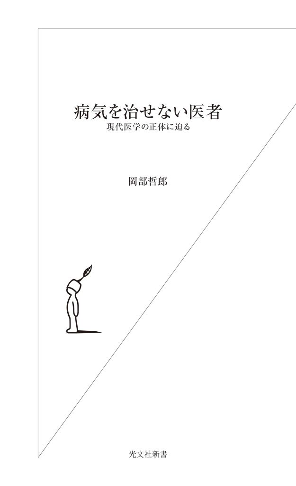
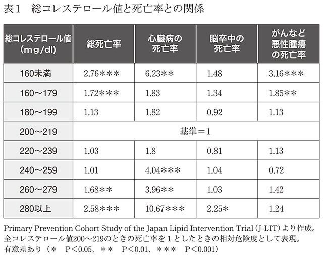
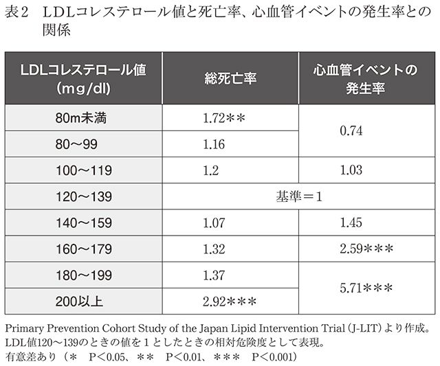
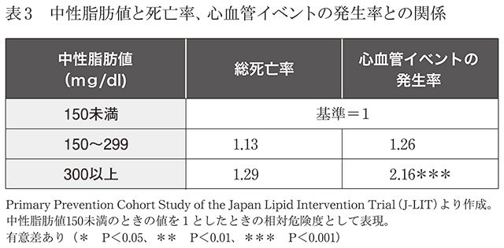
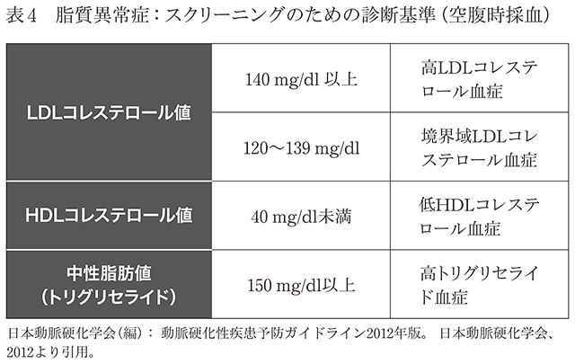
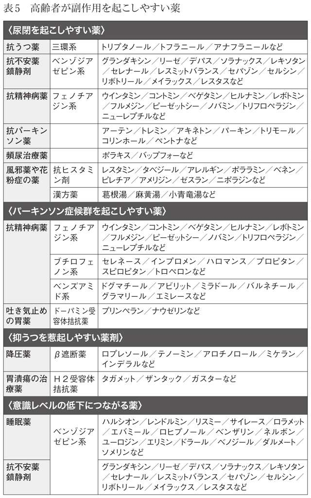
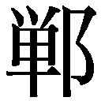

| 病気を治せない医者～現代医学の正体に迫る～ (光文社新書) | |
| 岡部 哲郎 | |
| (2015) | |

Half of what we have taught you is Wrong. Unfortunately, we don't know which half.
――医学の教科書に書いてあることの半分は、将来、間違っていることが証明される。
これは、１９３５年から１９４９年にかけて、「世界の医学部の最高峰」と呼ばれるハーバード大学の医学部長を務めたシドニー・バーウェル博士が、医学部の卒業式で学生を戒めた言葉である。
医学部で学んだことをドグマのように信じきって実際の診療にあたると、患者を治すどころか逆に害することになる。医学は進歩し、真理は常に更新され続ける――。この発言の意図は、「医師たるもの、医学の進歩を日々学習し、最新の適切な診療によって間違いを犯さないように努力せよ」ということである。
この言葉に出会ったのは、５年ほど前になる。
銀座で歯科研修所を主宰する有名な歯科医から、「研修所の一室が空いているので、漢方診療をやってみませんか」というお誘いを受けた。
当時、私は東京大学大学院医学系研究科の漢方生体防御機能学講座に勤務し、東大病院の総合内科漢方外来で診療を行っていた。早速、兼業許可を取り、週に１回、銀座で生薬を用いた本格的な中国伝統医学の診療を開始した。
私に声をかけてくれたこの歯科医は、地方で開業し盛業だったが、治療した患者の多くが３年後に再び診療にやって来るという事実に、「自分たちの歯科診療は間違っているのではないか」と疑問を抱いたという。３年しか治療効果を持たないような歯科治療などやっていられない、と。
そこで彼は一念発起し、盛業の歯科医院をたたみ、最高の歯科医療を求めてアメリカに渡った。しかし、あちこちの大学の歯学部を訪ね回っても探し求めているような医療はなく、どこを訪れても「このまま研究を続ければ博士号を取れますよ」と言われたそうだ。
だが、彼の目的は研究でなく、優れた歯科技術の習得である。そしてようやく、歯周病治療の世界的権威、ハーバード大学歯学部歯周病学講座の臨床准教授であり、アメリカ歯周病学会の元会長、マイロン・ネビンス博士が主宰する「ボストンの高等歯学研究所」（Institute for Advanced Dental Studies）に辿り着いた。
そこは、歯周病と補綴（歯の欠損を義歯・金属冠・継続歯などの人工物で補い、機能を回復させること）のスペシャリスト育成のための研修機関であり、歯周病と補綴はもちろん、インプラントの臨床研究と教育において全米のリーダーシップをとっている。その歯科治療の効果が極めて長期間持続することを知り、この研究所に留学した。帰国後、大阪と銀座に歯科診療技術を教える歯科研修所を開き、今までに全国から約７０００人の歯科医の研修を受け入れている（平成24年度で日本の歯科医の総数は約10万人）。
今では歯科医のゴッドハンドとなった彼の講義で、必ずスライドに映し出されるのが冒頭の言葉である。このスライドを見たとき、「なるほど、世の中にはまともな医者もいるのだ」と安心したことをよく覚えている。
自分自身も含め、医師である以上、医学の進歩を日々学習し、最新の適切な診療によって間違いを犯さないように努力すべきだと思っている。特に、高度な医療に携わる専門医や権威のある医師にはそうあってほしいと願うわけだが、現実は意外とそうではない。自分の専門分野になると保身に傾き、新たに証明された医学的真理に対し批判の眼が曇る。なぜなら、自分が信じてきた医学的事実を批判することは、自己批判するような心理に陥り、抵抗があるからだ。ほかの専門分野に関しては客観的かつ冷静にその間違いに気づくのに......。
日本人に身近ながんに大腸がんがある。皆さんは大腸がんに関してどんな知識をお持ちだろうか。このがんは、この四半世紀で医学的真理が変わったがんである。25年前は、大腸ポリープはすべて大腸がんになるというのが医学の定説で、私もそのように教わった。したがって、大腸内視鏡検査でポリープが発見されればすべて切除した。
ところが、今は違う。その後の研究から、大腸内視鏡で通常発見される５ミリ以下の大腸ポリープは、ほとんどが大腸がんにならないことが証明されている。そのため、最近では５ミリ以下のポリープは切除しないで経過観察する場合も多い。ただし、ポリープの大きさが１センチ、２センチと大きくなるにつれてがんになる可能性は大きくなる。その一方で、ポリープにならない平坦な病変が、がんになりやすいことも分かってきた。
実際、大腸内視鏡検査を長時間かけて厳密に行うと、約60％の人にポリープが見つかる。この数字は、ほかの病気で死亡した人の大腸を調べた場合とほぼ同じだ。つまり、放っておいても、ほとんどがんにはならない。
ところが、大腸内視鏡を専門とする医師のなかには「大腸ポリープはすべて大腸がんになる」と今でも信じている人が多い。そのような不勉強な専門医にかかると、毎年大腸内視鏡検査を行い、発見されたポリープはすべて切除される。そんな経験をされた方もおられるのではないだろうか。
同じようなことが前立腺がんについても言える。ほかの原因で死亡した人を死体解剖すると、年齢とほぼ同じだけの比率で前立腺がんが見つかる。つまり、70歳であれば１００人のうち70人に前立腺がんが見つかる。しかし、この70人のうち前立腺がんで死亡する人はほとんどいない。すなわち、肺がんや膵臓がんなどとは異なり、前立腺がんは名前にがんと付いていても、人を殺すことは稀なのだ。
ところが、最近、前立腺がんの腫瘍マーカー検査が健診で行われるようになり、中高年で前立腺がんが早期発見されることが増えた。
多くの専門医は「早期の前立腺がんです。早く見つかってよかったですね」と、治療として手術や放射線治療を勧める。過剰医療の典型である。そして、早期に見つかってしまったがゆえに、放っておいても命を落とすことは稀であるにもかかわらず、手術や放射線治療をするはめになる。その結果、副作用に苦しむケースが多々起こる。実際、アメリカ議会は腫瘍マーカーによる前立腺がんの検診について、問題が多く含まれていると否定的な勧告を出している。
医学はいつも正しいとは限らない。よかれと思って行っている治療法や治療薬も、新たな研究が進み、臨床データがそろってくると、間違いが見つかることもある。そのたびに真理は是正される。だからこそ、専門医たるもの、学び続けなくてはならない。
そして、皆さんにも知っていただきたい。現代医学、すなわち西洋医学は完成されたものではないことを。実際、東大病院を初診で受診する患者の７～８割は検査しても異常は見つからないが、異常がないと診断されても、それぞれが苦痛を訴えている。このことから言えるのは、医学的に異常がないといっても、現時点の医学の知識では人間の体に潜む異常を見つけられないということであり、将来、医学が進歩すれば、病気の存在が確認されるであろうということである。
言い換えれば、現代医学は人間の病気の２～３割しか見つけられていないということだ。しかも、その２～３割の病気に対する知識も往々にして偏頗なもので、将来書き換えられる可能性が高い。すなわち、現代医学は多くの欠陥を抱えている。だから、決して医者の言うことを盲信してはならない。
とはいえ、現代（西洋）医学の進歩は目覚ましく、ウイルス、サイトカイン（細胞が産生する微量生理活性タンパク質の総称）、遺伝子など病気の原因究明、難病の病態解明には日進月歩の感がある。実際、この四半世紀で筋ジストロフィー、脊髄小脳変性症などの遺伝病や、キャッスルマン病などの免疫炎症疾患を含め、いろいろな病気の原因や病態が解明されてきた。また、年々、検査や手術の技術は進歩し、免疫学的検査や遺伝子検査、内視鏡手術やロボット手術なども頻繁に行われるようになった。先進医療と呼ばれる最先端の医療機器や高度な医療技術を駆使した治療も行われている。さらに、ｉＰＳ細胞に代表される再生医療なども現実のものになりつつある。
ただ、残念なことに、西洋医学の治療で評価できるのは、「悪くなったものは取ってしまいましょう」、あるいは、「古くなったものは新しいものと取り替えましょう」という部品交換的な発想の分野のみ。薬などで根本的に治す治療に関しては不得意である。そして、これについては今後もあまり進歩は期待できない。なぜなら、これまでも科学技術を駆使してさまざまな新しい治療法を開発してきたが、それらは病気を完治させるものではなく、ほとんどが症状を抑えるだけの対症療法にすぎないからだ。西洋医学の治療は、体を病気になる前の健康な状態に戻すのではなく、症状を抑え、死ぬまで薬を飲み続けて体をコントロールしていくことしかできない。実際、周知のように医療費は年々膨れ上がり、２０１３年度は前年度比２・２％増の39兆３０００億円（概算）、11年連続で過去最高を更新した。
欧米の先進国では、西洋医学の薬物・化学療法（抗がん剤、抗生物質、症状を抑える薬物など）が、がん、心臓病、脳卒中、糖尿病などの生活習慣病に対してそれほど治療効果が上がらないことが明らかになるにつれ、代替医療の利用頻度が急速に増加している。
たとえばアメリカでは、医科大学における代替医療の講座の設置が推進され、１９９８年の時点ですでに、アリゾナ大学をはじめ、ハーバード、コロンビア、スタンフォード、エール、テキサス大学など１２５の医学部のうち、75の医学部で代替医療の教育が行われている。このように、欧米で中国伝統医学などの代替医療が注目されていることは、西洋医学の発祥の地で「西洋医学の限界」が露呈された結果だろう。
数多くある代替医療のなかでも、今、特に脚光を浴びているのが中国伝統医学である。なぜなら、専門分野の病気しか診ることのできない西洋医学と違って、中国伝統医学は患者の心身すべてを診る全人的な治療が可能であるからだ。
この医学は、五臓（心、肝、脾、肺、腎）の各システムを調和させることで、人体のシステムを病気になる前の健康な状態に戻す「根治治療」を前提としている。しかも、その治療に対して膨大な数の臨床試験が行われていて、生活習慣病をはじめ、難病等に対する治療効果も明らかになっている。こうしたことから、中国伝統医学は、現代の医療状況の限界を突破するためにも、西洋医学の足りない部分を補うという意味でも、時代に求められている医療だと言えるだろう。
＊ ＊ ＊
私は、縁あって西洋医学と中国伝統医学の両方を学ぶことができた。そんな私に言えるのは、西洋医学とまったく別の発想を持つ医学には、別の治療法が存在するということだ。
代替医療というと、西洋医学より劣ったものとか、気休め的なものとか、場合によっては科学的根拠のない怪しいものと受け取られがちだが、そんなことはない。少なくとも「根治治療」という点では、中国伝統医学は西洋医学より優れていると私は確信を持って言える。
だからといって、中国伝統医学は万能でがんも治せるなどと言うつもりもない。手術が有効ながんであれば、手術が治療法の第一選択となるのは言うまでもない。また、外傷、救急救命、臓器移植や細菌感染症などの分野は、西洋医学のほうが断然優秀である。
このように、それぞれの医療には得意、不得意がある。現在、医療といえば西洋医学しかないと思っている人がほとんどかもしれないが、そうでないことを知ってほしい。私は本書を通して、現代医学の抱える問題、欠陥をお伝えし、同時に、中国伝統医学の治療の可能性を示していきたいと思う。それを知っていただくことで、読者の皆さん自身が、あるいは大切な人が病気になったとき、ベストと思えるような医療を選択してほしいと願っている。
目次
健康診断で異常値が見つかった、精密検査が必要だ、命に関わる病気かもしれない――。そんなとき、多くの人が頼るのが大学病院や名の知れた専門病院だろう。そこに行けば最善の医療を受けることができ、治癒の可能性も高まると考えるのではないだろうか。
それに応える側の大学病院や専門病院で働く医師も、それ相応の心持ちで治療にあたっていると思っているだろう。けれど、残念ながら実態は違う。
私自身、大学病院に長年勤めてきたから、それが悲しいくらい分かる。たとえば、日本の最高峰と言われる東大の医学部を卒業した人たちの人生の目的は何だろうか。
その一つ目は、医学の世界で出世してその分野の最高位を究めること。たとえば医学部の教授、有名病院の部長などを目指すこと。二つ目は、専門分野で目覚ましい研究業績を上げて脚光を浴びること。
もちろん、それは人によって異なり、皆が皆、そうであるというわけではない。ほかにもあると思う。ある後輩は、卒業して最初の２～３年は皆と同じように熱心に基礎研究をしていたが、これでは医師としてまずいと気づき、手術の腕を磨くため大学を出て専門病院で武者修行をした。彼は現在、某私立大学の外科系の教授になり、その分野のゴッドハンドとして活躍している。
このような例外は別として、先に挙げた二つが、大学病院の多くの専門医の本音だと思う。教授になるためには、優れた研究業績を上げなくてはならない。だが、その研究のほとんどは、病気の治療とは無関係の基礎的研究に費やされている。
たとえば、心臓の専門医が動物の心臓の筋肉を培養して筋肉細胞の遺伝子や収縮のメカニズムを調べることなどは、心臓病の治療とは永遠に無関係だ。しかし、それを論文にし、『ネイチャー』など権威のある国際的な科学雑誌に数多く発表すれば、その業績によって循環器内科の専門医、教授というポストが得られる可能性が高くなる。
大学で教授戦に勝とうとしたら、このような基礎医学の研究業績を上げることが唯一の条件となる。しかし、こういう類いの専門医は、患者の診療はからっきし不得手である。なぜなら、基礎研究の業績はあっても、臨床の専門医ではないからだ。
もっと深刻なのが外科の教授のケースである。ある外科系の教授選では、一流の科学雑誌に多数の論文を発表している候補が当選した。これは、その候補が長年にわたってほとんどの時間を基礎研究に費やしていたということを意味する。逆の言い方をすれば、本業の外科手術の腕を磨く暇はなかったということである。優れた基礎研究の業績で外科の教授になったはいいが、外科手術は上手にできない、ということになりかねない。
２０１２年に東大病院で行われた天皇陛下の心臓手術がよい例だ。手術が東大病院で行われたのにもかかわらず、執刀したのは東大病院の医師ではなく、心臓血管手術のゴッドハンドと言われる、順天堂大学医学部心臓血管外科教授の天野篤氏と彼のチームだった。東大病院が自らの名誉よりも命を優先した英断ととらえるむきもあるが、東大の心臓外科に国内最高のＶＩＰの手術を任せられる医師がいなかったというのが事実ではないのだろうか。
「イレッサ」という薬をご存知だろうか。肺がんの治療薬で、開発当初、「夢の抗がん剤」「夢の新薬」とマスコミにもてはやされ、副作用も少ないと、日本でいち早く新薬として承認された抗がん剤だ。
私が大学病院で診療していた頃、脳など全身に転移した末期肺がん患者の治療にあたったことがある。その患者には、抗がん剤、免疫療法、中国伝統医学による治療を行い、経過は順調だった。がんは増大せず、一定の大きさを保ったまま、７年間、無症状で日常生活を送ることができていた。
だが、あるとき、その方が新聞記事を持って来院された。その記事で紹介されていた新薬で治療してほしいと言う。そこには、副作用がなく肺がんによく効く新薬があると、あるがんの専門医が書いていた。
この薬が、上皮細胞成長因子（ＥＧＦ）の受容体拮抗剤で、いわゆる分子標的治療薬の先駆けである、「イレッサ」だった。通常の抗がん剤のような骨髄障害や胃腸障害はほとんどなく、唯一の副作用は間質性肺炎とされていた。
患者の強い希望もあり、「イレッサ」を使うことにしたが、念のため、服用後２か月間は呼吸器内科に入院してもらって副作用のチェックを行った。入院中、副作用は一切認められなかったが、退院して１か月後に容態は激変した。食欲がまったくなくなってしまったのだ。「イレッサ」を中断し、種々の胃腸薬を処方したが食欲は改善せず、その方は３か月後に亡くなった。
ＥＧＦは上皮細胞（皮膚、肺、胃腸などにある）に存在し、その増殖成長を促進する細胞成長因子である。だから、イレッサを使えば、がん細胞だけでなく、当然、これらの臓器組織に副作用が起こることは予想できた。
だが、海外で欧米人を対象に行われていた当時の臨床試験のデータでは、胃腸障害は１％以下と記載されていた。のちに日本で多数の患者に使用され、その結果が公表されてみると、日本人の場合、胃腸障害の発現は15％程度と非常に高いことが分かった。
人種により副作用の発現の程度が異なることがある。つまり、問題は、イレッサの日本人に対する副作用を調査しないで、あるいは調査した結果を医師に広報しないで安易に使用を許可したところにある。
がんの専門医が書いたあの新聞記事さえ読まなければ、あの方は今でも生きておられたかもしれない。ここで強調しておきたいのは、がんの専門医としての必須条件は、抗がん剤の副作用を熟知していることだ。これは、世界的常識である。だが、日本の多くの専門医は、とかく薬の効果ばかりに重きを置き、副作用のことがおざなりになる。
循環器科、消化器科、呼吸器科などの各科専門医もしかり。専門医というからには、自分の専門分野の治療薬について、副作用を熟知していなければならない。
なぜそんなことを言うのか、当たり前ではないかと思う人も多いかもしれない。けれど、驚くことに、専門医の大半は各製薬会社から出されている薬の添付文書を読んでいない。そこには、効能や使用法、副作用や禁忌についての詳細な情報が記載されているのに、だ。
高血圧の治療でよく使われている薬に、アムロジピンベシル酸塩（商品名「ノルバスク」）がある。処方された経験のある人も多いのではないだろうか。
その添付文書を見ると、開発時及び６年間の調査で、１万１５７８人中、何らかの副作用が見られたのは５２９人（４・５７％）とある。その副作用も、肝機能障害・黄疸、血小板減少、白血球減少、房室ブロック（心臓の刺激伝達系において、心房から心室に命令が適切に伝わらない病態）、浮腫、火照り、動悸、めまい・ふらつき、頭痛・頭重、心窩部痛（みぞおち付近の痛み）、便秘、嘔気・嘔吐、ＢＵＮ（尿素窒素）上昇、発疹、全身倦怠感、味覚異常、視力異常、歯肉肥厚（歯肉が腫れて厚くなること）、勃起障害、排尿障害など、多岐にわたっている。
私はここで副作用を問題視しているのではない。問題なのは、専門医が「ノルバスク」の副作用の情報を知らないで、あるいは知ろうとしないで処方することだ。医師が知らないのだから、当然のこと、患者に副作用としてどんな症状が起こる可能性があるか、伝えられるはずもない。その結果、医師も患者も、服用後、異常な症状が出ても、処方薬の副作用だと気がつかない。もし、便秘になったら、医師はさらに便秘薬を処方し、排尿障害が出たら泌尿器科の専門医に紹介するだろう。
また、最新の降圧剤としてよく使われているアンジオテンシンⅡ受容体拮抗薬のバルサルタン（商品名「ディオバン」）も罪深い薬だ。
その添付文書を読むと、「ディオバン」は承認時までの臨床試験５５６例中、自他覚症状が68例（12・２％）、臨床検査値異常が58例（10・４％）、計１２０例（21・６％）に副作用が認められている。主な自他覚症状は、めまい14件（２・５％）、腹痛９件（１・６％）、咳嗽７件（１・３％）。
21・６％の人に副作用が出たというのは、かなり高い確率だと感じるのではないだろうか。にもかかわらず、たいていの専門医は薬の効果だけを重視し、副作用に目を向けようとはしない。
実際、こんなケースがあった。ある夏、漢方治療中の80代の患者が熱中症で入院してきた。脱水症で、血清ナトリウム濃度が極度に低下し、基準値１３５～１４５ｍＥｑ／Ｌ（以下、単位は略）のところ、１２４までになった。血清ナトリウム濃度が１３５未満に低下すると低ナトリウム血症と呼ばれ、１２０以下になると、頭痛、嘔吐、精神症状を、１１０以下になると性格変化や痙攣、昏睡を生じ、死に至ることもある。高齢で慢性的な低ナトリウム血症患者は、ほかに異常のない若年患者よりも多くの症状を呈することが知られている。
熱中症による脱水であれば、生理食塩水の点滴で回復するはずである。しかし、点滴を行っても脱水症状はなかなか回復しない。そして、さらに脱水が進んだことによって持病の喘息が悪化し、ひどい便秘になった。そこで調べてみると、高血圧専門医によって「ディオバン」が長期にわたって処方されていることが分かった。
「ディオバン」は副作用として低ナトリウム血症を起こすことが知られている。悪いことに、この方には逆流性食道炎に対してプロトンポンプ阻害剤（商品名「タケプロン」）も処方されていた。この薬にも低ナトリウム血症の副作用がある。このため、これら２つの薬を中止すると血清ナトリウム濃度は１３６まで回復し、喘息も便秘も治った。薬の添付文書には、副作用が出た場合は薬を中止するか、症状によっては減量して下さいと明記されている。
「ディオバン」は、専門医たちが信じた効果の信憑性が問われる事件も発覚した。それが、記憶に新しい、複数の大学病院の高血圧専門医による「ディオバン」の臨床試験データねつ造事件だ。それは、一流の医学専門雑誌『ランセット』に「ディオバンがほかの降圧剤よりも効果が優れている」という内容で掲載された。その結果を製薬会社が宣伝に大々的に用いたため、この薬が大量に使用されたのだ。
大学病院の専門医と製薬会社がグルになり、「この薬はよく効く」というデータをねつ造し、そのデータを使って宣伝する。そして、大学病院の循環器科の専門医がそのデータを使って高血圧治療のガイドラインを作成し、全国の高血圧専門医がこのガイドラインに従って患者にこの薬を処方することになる。
多くの専門医を信用することができないのは、添付文書の副作用情報に関して不勉強なだけでなく、このような製薬会社との癒着が見られるからである。それも、かなりの頻度で、である。
ある高齢の男性が頻尿で困って泌尿器科を受診し、専門医から治療薬を処方された。この患者はその一方で、眼科で緑内障の治療を受けていた。そこで問題が起こった。泌尿器科で処方された治療薬は、眼圧を上げる副作用があるため緑内障には禁忌だったのだ。
頻尿と緑内障――。高齢者なら、両方の病気を抱えているケースは珍しくない。泌尿器科の医師が薬の副作用を熟知していて、「Ａさん、ほかの薬をもらっていませんか？」「緑内障ではありませんよね？」とひと言、尋ねさえすれば簡単に防げたはずなのに。
私が漢方外来でその方を診療した際、副作用のことをお話しし、泌尿器科の薬を中止した。
このように、専門医は自分が専門とする病気しか見えないピンホール（針でついたほどの小さな穴の意）診療になることが多い。本来であれば、Ａさんがほかにどのような疾患を抱え、どんな薬を飲んでいるか、過去にどんな病気を患ったことがあるのか、今の体の状態はどんな具合かなども把握して、薬の処方をすべきだろう。
正月が終わり、節分の頃になると、春の気配とともに、鼻水や眼のかゆみに悩まされる人も多いのではないだろうか。花粉症（アレルギー性鼻炎）は今や日本の国民病である。この症状に対して、アレルギー専門医が予防的に処方するのが、最新型の抗ヒスタミン剤である。「抗ヒスタミン剤は軽い薬で、副作用は眠気くらい」と高をくくっているから、安易に処方してしまう。
しかし、その添付文書を見れば、中枢神経系の副作用として、眠気、めまい、倦怠感、興奮作用、痙攣、認知機能障害、また、抗コリン作用による副作用として、口渇、粘膜乾燥感、尿閉、便秘、頻脈。さらに消化器系の副作用として、悪心、嘔吐、下痢、食欲不振、上腹部痛などがあると明記されている。ありとあらゆる副作用があることがお分かりだろう。花粉症の薬を服用後、このような症状のいくつかを経験した人も多いのではないだろうか。高齢者や妊婦の場合は、服用に関してはさらに注意が必要である。胎児への安全性も確立していない。
なかでも注意が必要なのが、抗コリン作用による副作用である。緑内障の人が服用すると眼圧が上昇し、前立腺肥大の人なら排尿困難になる危険性がある。
ところが、花粉症で抗ヒスタミン剤を処方するとき、「眼圧は高くないですか？」「おしっこが出にくくないですか？」「便秘ですか？」「妊娠していますか？」などと、質問する医師はあまりいない。副作用なんてたいしたことはないと思っているから、何も聞かずに処方してしまうケースは後を絶たない。
こんなケースもあった。一日７～８回の下痢が２週間続いていると、26歳の男性が私のところへ診察にやってきた。症状は吐き気や腹痛で、発熱はなく、ただ下痢のみである。ノロウイルスや食中毒、インフルエンザなどでは下痢は２週間も続かない。いろいろ質問してみたところ、２週間前から花粉症の飲み薬を服用していること、以前に過敏性大腸炎を患ったことがあることが分かった。
花粉症の薬は抗ヒスタミン剤であり、副作用は先ほど述べた通り多岐にわたるが、そのなかには消化器障害もある。この方の場合、既往歴に過敏性大腸炎があることからも分かるように、胃腸機能が不安定だった。その結果として、抗ヒスタミン剤の副作用が下痢として強く現れたのである。抗ヒスタミン剤を処方したアレルギー専門医は、花粉アレルギーのことしか念頭にない。これではあまりにも視野が狭すぎる。既往歴に過敏性大腸炎があるこの方には、抗ヒスタミン剤の投与は慎重を期すべきだろう。
抗ヒスタミン剤が処方されるのは花粉症だけではない。ほとんどの総合感冒薬（風邪薬）にも含まれている。では、風邪薬を処方されたときに、同様の質問を受けたことがあるだろうか。
漢方薬も同様である。漢方薬は安心というイメージがあるためか、比較的安易に使われやすい。だが、漢方薬も薬である以上、副作用はある。風邪の代表的な漢方薬である「葛根湯」や「麻黄湯」、花粉症によく使われる「小青竜湯」なども、前立腺肥大や緑内障には禁忌である。これらの漢方薬に含まれる麻黄という生薬には中枢神経や交感神経の賦活作用があるため、緑内障の人なら眼圧が上がる、前立腺肥大の人なら尿が出にくくなるといったリスクが高まるのだ。それを専門医は知っているのか、はなはだ疑問である。
また、泌尿器科専門医が抗コリン剤で高齢者の頻尿を治療すると、緑内障が悪化したり、便秘、口渇、認知機能低下などの副作用が出現しやすい。呼吸器専門医が肺気腫などの呼吸困難の治療に抗コリン剤を用いた場合も同様だ。脳、眼、泌尿器、気管支、鼻など、一見、無関係と思われる体のいろいろな部位に副作用が発現する。
けれど、処方した医師も薬を服用した患者も、その症状が副作用であるとは思っていないところが怖い。医師は病気を治そうと善意で薬を処方したはずなのに、それが患者の体を傷つけてしまうのは悲劇としか言いようがない。
なぜこのようなことが起こるのだろうか。ここに、現代医学の決定的な欠陥がある。医師を目指す者は、大学の医学部で勉強するわけだが、教科書に書かれているのは、病気の原因、病態、検査法、診断に関してのみだ。治療に関しては、治療効果のある薬物が羅列されているだけで、薬物の作用機序（薬物が生体に何らかの効果を及ぼす仕組み、メカニズム）、使用方法、具体的使用例、副作用などについては非常に貧弱な記載しかない。つまり、治療学は存在しない。
皆さんは、まさか現代医学は風邪にさえ治療法がないとは思ってもいないだろう。けれど、事実はそうなのだ。それに加え、専門医自身も治療学を構築しようと思っていない。
では、大学病院などの専門医たちは何を行っているのか。それは、病気の原因究明、病気が形成されるメカニズムの解明（遺伝子、免疫、酵素、サイトカイン、神経伝達因子、成長因子など）、それに対する治療薬の開発などである。
そう言っている私も、中国伝統医学を学ぶ前、20年以上にわたり、抗がん剤の開発などを行ってきた張本人である。
ここで、私自身のことを少しお話ししておこう。
私は高校生のときに難病を患った。東大の医学部を志したのは、それがきっかけだ。治らないとされる難病の治療法を研究開発するのが夢だった。
医学部卒業後は、がんの治療研究を行うべく東大病院の第三内科第二研究室に入局した。当時、第二研究室では、免疫不全マウス（ヌードマウス）にヒトのがん細胞を移植し、マウスの皮下でがん細胞を増殖させることに成功していた。ヒトのがん細胞がいつでも手に入る環境にあったので、それを用いてがんの研究ができると考えたのだ。
あるとき、ヌードマウスに肺がん細胞を移植すると、白血球が正常の１００倍に増えていた。このがん細胞は白血球を増殖させるホルモンのような物質（Ｇ‐ＣＳＦ）を産生していることが分かり、その後、シャーレのなかでこの細胞を培養させることに成功した。ヒトのＧ‐ＣＳＦ産生細胞の培養は世界初であった。
次に行ったのが、この細胞を大量培養してヒトＧ‐ＣＳＦを抽出分離することだった。しかし、この時期はちょうど分子生物学が著しく進歩した頃で、日米のベンチャーなどによるＧ‐ＣＳＦの遺伝子（ｃ‐ＤＮＡ）の分離競争が激しさを増していた。そうなると、大学の小さな研究室では勝ち目はない。私も全力で遺伝子の分離を試みたものの、アメリカのベンチャーと日本の製薬会社が先に遺伝子を分離し、遺伝子工学を用いた大量生産に成功した。
このようにして大腸菌で作られたＧ‐ＣＳＦをヒトに投与すると、白血球が数倍に増加する。現在では、この手法は抗がん剤や放射線の副作用で起こる白血球の減少を食い止めるのに役立っている。また、骨髄異形成症候群など、骨髄の造血機能障害のために白血球が作れない患者に、このＧ‐ＣＳＦが投与されている。
次に着手したのが、ヒトの肺がんに特異的に結合するモノクローナル抗体の作成である。アメリカのベンチャーとの共同研究で、この抗体にテクネチウム99ｍという放射性物質を結合する。それを肺がんの患者に注射すれば、がん細胞のあるところはすべてガンマカメラで映し出されるというわけだ。これによって、ＣＴ撮影をしなくても１回のカメラで肺がんの全身転移が分かるようになった。この検査薬は、アメリカ、カナダで実際に発売され臨床で使われた。
この研究の最終目的は、このモノクローナル抗体にイットリウムという強いα線を出す放射性物質を結合し、がん細胞のみを放射線で破壊してがんを治療することだった（ミサイル療法）。この臨床研究はドイツの製薬会社と共同で、ヨーロッパで行われた。最初の研究では、この薬物でがんは縮小し効果が見られたが、腎臓から排出されるときに腎臓に蓄積してしまうことが分かり、副作用が懸念され臨床実験は中止となった。
このように、私は細胞生物学を中心に、がん細胞の増殖や分化の研究を幅広く行い、白血球増殖因子Ｇ‐ＣＳＦ産生腫瘍の培養株樹立をいち早く成功させ、大量細胞培養や遺伝子工学による量産化と臨床応用への道を開くことができたと自負している。
漢方薬に出あったのもこの頃だ。Ｇ‐ＣＳＦの研究の最中、ある人物との出会いがきっかけだった。その人物は、東大の応用微生物学研究所（現東京大学分子細胞生物学研究所）の教授で、当時、がんに効く抗生物質の探索を行っていた。
「君は抗がん剤の開発をやっているようだが、僕はカビから抗生物質を作るのはもう飽きた。僕と一緒に漢方薬から治療薬を作らないか」と言う。その頃の私は、漢方薬の効果をあまり信じていなかったが、「漢方薬のことはよく分かりませんが、私は医者です。治療に役立つのであれば試してみたいですね」と答えた。そして紹介されたのが、台湾の著名な漢方医である林天定一門だった。
この人物は昭和26年に来日し、東京中医研究財団という研究所を作っていた。私がそこで中国伝統医学の治療を見学して目の当たりにしたのが、アルツハイマー病、脳梗塞、心筋梗塞、膠原病（後述）、がんなど、我々が学んだ西洋医学で〝治療法がないとされている難病〟が、１～２か月の治療で明らかに改善する実態だった。その様子を見て愕然とし、「病気の治療法としては、中国伝統医学のほうが西洋医学より優れているかもしれない」と、迷わず弟子入りすることになる。
というのは、中国伝統医学は剣道などと同じく師弟相伝の医学で、座学だけでは身につかないからだ。師匠の熟練の技（診断の技と治療の技）を伝授してもらい、臨床の経験を積み重ねなければ、師匠と同じレベルには到達しない。そして、「中国伝統医学なら、治らないとされている難病も治療できるかもしれない」と思い、いったん西洋医学の研究は中断し、中国伝統医学の研鑽に邁進した。
その結果、今では厚生労働省指定の難病でも、その大半は中国伝統医学で一定の治療効果を出せるようになった。まして、高血圧、糖尿病、喘息などは、中国伝統医学で治療すればかなりの効果が得られる。
大学病院で専門医に「治療法がありません」と言われたとしても、このような中国伝統医学による治療法の存在を知っていれば諦める必要はない。知らなかったために難病で悲惨な状況に苦しむ人をなくしたい――。それが、今の私の願いだ。
ある国際誌に、リウマチ専門医による関節リウマチの関節炎と気象（気温、湿度、気圧）との関係を調べた論文が掲載されていた。「気圧の低下が関節炎の発症と関係していた」という内容である。
関節リウマチは膠原病（全身の複数の臓器に炎症が起こり、臓器の機能障害をもたらす一連の疾患群の総称）の一つで、免疫異常による炎症が関節を破壊していく病気である。日本では60～70万人の患者がいると言われており、30～50代の女性が最も多く発症する。その治療法といえば、免疫の異常を抑制する抗リウマチ剤（免疫抑制剤）や、痛みや腫れを抑える抗炎症薬を用いるのが一般的だ。
一方、中国伝統医学で関節リウマチは、古来、「風湿性関節炎」という名前で呼ばれ、風（気圧の変化による風）、及び湿（浮腫）が原因とされてきた。奇しくも、先の論文は低気圧によりリウマチの関節炎が引き起こされることを示唆している。
ここで、関節リウマチと大きく関係する低気圧のことを解説しておこう。日本にやってくる低気圧の大半は、温帯地方でできる温帯低気圧である。温かい空気と冷たい空気が接したときに渦巻きができ、その中心部分に上昇気流ができて低気圧となるわけだが、温帯低気圧は、必ず温暖前線と寒冷前線を伴う。だから温帯低気圧が近づくと、雲が多くなり天気が悪くなる。すなわち、低気圧（風）は前線（湿）であり、その〝風湿〟がリウマチの関節炎を引き起こすと考えられるのだ。
だから、中国伝統医学で関節リウマチを治療する場合は、〝祛風利湿〟＝〝風と湿〟を取り除く生薬を投与する。この方法で初期のリウマチの80％は治療に成功する。
このように、中国伝統医学では診断を正確に行うことができれば、それに対応する治療薬が必ず決まってくる。治療効果の有無は別にして、病態診断と治療処方がセットになった医学だと言える。つまり、現代（西洋）医学とは異なり、すでに治療学が確立されている。
ところが、現代医学だけを学んできたリウマチ専門医はこのことを知らない。なぜなら、現代西洋医学のバイブルとされる『ウィルヒョウ人体病理学』（現代西洋医学の父と言われる、ベルリン大学病理解剖学の教授ウィルヒョウの著書）には、風と湿を体内から除去するという医学概念は存在しないからである。だから、当然ながら、そのような概念の薬もない。
では、大学病院の専門医たちは関節リウマチの治療で何を行っているのかといえば、先に述べたように、免疫抑制剤や抗炎症薬（炎症性サイトカイン阻害剤の注射）、副腎皮質ステロイドなどによる治療だ。ただ、これは、免疫性炎症などの原因を取り除いて根本的に治す治療ではなく、症状や進行を抑える対症療法である。しかも、治療に使われる薬物には骨髄抑制（貧血、血小板減少）や感染症など、多くの副作用がある。
中国の人々は、西洋医学の病院で精密検査して関節リウマチと診断されたら、治療は中国伝統医学で行う。医学は西洋医学だけではない。関節リウマチになったときにこのような医学情報を知っているかどうかが、患者の運命の分かれ道になる。
肺がん、膵がん、あるいは、胆嚢がんなどは、いったん診断が確定すれば、滅多なことでは治癒せず、多くの患者は命を落とすことになる。これに対し、前立腺がんの場合は多様だ。診断時に全身の骨に広汎な転移があれば、２～３年以内に大半の患者は死に至ってしまう。その一方で、「はじめに」でも述べたように、生涯無症状のままの前立腺がんは、死に至る前立腺がんよりはるかに多い。前立腺がん以外の病気で死亡された男性の前立腺を細かく調べると、高率に前立腺がんが見つかる。
つまり、高齢の男性であれば、その多くの方には前立腺がんがあり、そのほとんどは生涯無症状のまま、まさか前立腺がんがあるとも知らず、一生を終える。そうなのだ、生涯無症状なら、前立腺がんと診断されないほうがよい。生涯無症状ならば、治療もしないほうがよいに決まっている。
今、前立腺がんかどうかを調べるのに行うのがＰＳＡ検査である。ＰＳＡ（Prostate Specific Antigen）とは前立腺特異抗原で、前立腺から分泌され精液中に含まれている生体物質を指す。前立腺がんの場合、血清中の含有量が上昇するため、腫瘍マーカーとして用いられる。多くの検査用キットでは４ng／㎖（以下、単位略）以下が正常とされているが、４以上だったからといって、即、がんというわけではない。がんの可能性が高いというだけだ。
一方、ＰＳＡが４以下でも前立腺がんが見つかる場合がある。通常は、ＰＳＡが４～10の場合、前立腺生検を行うと10～20％に、10～20の場合は20～50％の人に前立腺がんが発見される。
「がんは早期発見なら助かる！」と多くの人が考えるようになった今、早期発見のために、検診で前立腺がん腫瘍マーカー検査（ＰＳＡ検査）を行う人も増えてきた。すると微小ながんまで発見できてしまう。その結果、多くの無用な治療が行われることになる。
実際、60歳前後の１００人にＰＳＡ検査をすると、約10人の方が４以上の値を示す。その後、生検を行うとその中の１、２人に前立腺がんが見つかる。こうして発見された前立腺がんの多くは早期がんであり、そのほとんどは非常にゆっくりしか進行しない。だが、稀ではあるが、急速に進行するがんも存在するので、早期がんと診断されたら、定期的にＰＳＡ検査を続ける必要がある。
その際、症状がなくても、専門医は手術や放射線治療を勧める場合が多いだろう。患者側も「早期でよかった、助かった」と、言われるがままにそれらの治療を受けるだろう。だが、手術にはさまざまな後遺症がつきものである。放射線治療は、副作用として直腸出血、勃起障害、排尿困難などを伴うことが多い。
こういった後遺症や副作用を避けるために、なかにはホルモン治療を勧める専門医もいる。だが、実際はホルモン治療のほうが曲者だ。ホルモン治療は放射線治療よりはるかに副作用が多いのに、患者には知らされない場合が多い。
前立腺がんのホルモン治療で最もよく使われるのが「カソデックス」という抗男性ホルモン剤である。「カソデックス」の承認時、及び使用成績調査における総症例３９２７例中、９５１例（24・２％）に副作用が認められている。
なかでも夜間頻尿は厄介だ。就寝後２時間ごとの排尿で目が覚めてしまうため、不眠症も引き起こす。そのほか、貧血、白血球減少、血小板減少、肝機能障害、腎機能障害など重大な副作用もある。性欲減退、勃起力低下、乳房腫脹など抗男性ホルモン作用も現れる。50代、60代からこんな症状にずっと悩まされるとしたら、ぞっとする。ＱＯＬ（生活の質）を大きく低下させるのだ。
また、ＬＨ‐ＲＨ誘導体、「リュープリン」という注射薬による前立腺がん治療もよく行われる。「リュープリン」はホルモン剤の一種で、前立腺がんのようにテストステロン（男性ホルモン）に依存するがんに効果的とされている。「リュープリン」を投与することによってテストステロンの産生を抑えて前立腺がんの発症・進行を抑制する。
ただ、この薬の副作用もかなりのものである。添付文書によると、国内臨床試験において安全性が評価された61症例中、17例（27・９％）に臨床検査値の異常を含む副作用が報告されている。さらに、海外臨床試験においては、安全性が評価された２１８症例中１４４例（66・１％）に、臨床検査値の異常を含む副作用が報告された。
私は前立腺がんのホルモン治療（リュープリン治療）後に、骨髄異形成症候群を発症した患者のケースを経験している。重度の貧血（ヘモグロビン５～６ｇ／dl）や白血球減少（２０００以下）を引き起こし、輸血せざるを得ない状態であった。この方は中国伝統医学による治療の結果、ヘモグロビンが10ｇ／dlまで増加し、輸血しなくてもよい状態になった。白血球も正常値である４０００～５０００まで回復した。骨髄の造血機能が回復したのだろう。
また、ある高齢者は前立腺がんのホルモン治療後、倦怠感、２時間ごとの夜間頻尿、疲労感、抑うつ状態などで、ＱＯＬが著しく低下した。どちらの薬も、ホルモン治療を止めてから１年経っても、こういった副作用が続くことが多い。ホルモン治療で一度出た副作用はなかなか治らない。関節リウマチをはじめとする膠原病を副腎皮質ホルモンで長期間治療した場合も同じことである。
前立腺がんが早く見つからなければ、こんな副作用に悩まされずにすんだのである。早く見つかったがゆえのオーバートリートメントだと言える。前立腺がんの場合、急速に進行して死ぬことは少ない。早期に発見したときこそ、その対応でその後の人生が変わってくる。
病気にかかり、手術が必要となれば、可能であれば、ゴッドハンドと言われるような、手術の名手に執刀してもらいたいと思う人も多いだろう。メディアでも取り上げられるケースも多いため、ゴッドハンド医師のもとに患者は集まる。だが、ゴッドハンドの手術が患者にとってベストかというと、そうとも限らない。
最近、私のところにやってきた60代の女性は、ひどい腰痛、下肢の痛み、しびれなどを抱えていた。脊椎にある脊柱管という神経を囲んでいる管が狭くなって、脊髄や神経根を圧迫する「脊柱管狭窄症」と診断されていた。
数か月前に腰痛、臀部痛、下肢痛、しびれが出現したため、某有名病院の高名な整形外科医の診療を受け、手術をしたという。ところが、手術でよくなるどころか、すべての症状がひどく悪化し、歩くのも困難になってしまった。なのに、手術の執刀医はこう言ったという。「手術は完璧に成功したので、手術後になぜ症状が悪化したのか分からない」、と。
残念ながら、こういったケースは稀ではない。では、なぜ手術は完璧だったのに症状が悪化したのであろうか。
ゴッドハンドの整形外科医は、腰痛、下肢痛、しびれなどの原因は腰椎の変形（変形性脊椎症：ＭＲＩでは確実に変形が認められる）にあると判断し、腰椎の変形を手術で治せば、痛みもおさまると考えたのだろう。
ＭＲＩで見ると、骨が変形しているのは確かだった。だからといって、これが神経を圧迫して腰痛や下肢痛、しびれを引き起こしている確証とはならない。骨の変形はあくまで状況証拠にすぎない。それを痛みの原因とするのは、このゴッドハンド医師の想像でしかない。変形した脊椎を動かしたとき、神経を圧迫して痛みが起こるかどうかを実験証明してみなければ、腰椎の変形が原因だとは分からないのだ。
では、骨の変形が痛みやしびれの犯人でないとするならば、その原因は何であろうか。
西洋医学の病理学は、〝死体解剖学＝病気の原因は形のあるもの〟という考えがベースになっている。目に見えないものは原因とは見なさない。また、物質として検出できないものは原因として見なさない。
つまり、西洋医学では、ＭＲＩで脊椎に変形があり、それ以外に目に見える原因が見当たらないので、脊椎の変形が原因だろうと推測しているにすぎない。実は、何ともいい加減な医学なのだ。
ところが、実際は、脊柱管を構成する組織やその周囲の組織には、結合組織、リンパ管、細い血管、筋肉、腱、末梢神経など、いろいろな組織や細胞が存在する。リンパ管にはリンパ液が一定の速度で流れている。血管内には血液が絶えず流れている。
たとえば、体内外の何らかの原因でリンパ液や血液の流れが障害されると、リンパ液や血液の欝滞が生じ、その周囲が浮腫む。この浮腫がさらに毛細血管やリンパ管を圧迫して血流障害を引き起こし、血液の不足によって酸素が細胞に供給されなくなると、痛みが起きるというメカニズムが働く。腰を温めると痛みが軽減するのは、温めると血流が増加するためである。
このような原因で痛みが起きているのであれば、いくら腰椎の骨を手術しても症状は良くならない。それどころか、手術によって脊柱管周辺の血管やリンパ管が切断されるため、さらに血流障害が増悪することも考えられる。
実際、この患者の場合、手術により、腰痛、下肢痛、しびれが著しく悪化して歩行困難になったと考えられる。すなわち、手術によって脊柱管狭窄症がひどくなってしまったのだ。ゴッドハンドであればあるほど、手術の完璧性にのみ目がいってしまい、「痛みを引き起こす原因が骨だけではない」ということを頭の片隅にも置こうとしない。
この女性は、中国伝統医学の診断に基づいて、浮腫を取り、血流を改善する治療を行ったところ、症状は軽快し、歩けるようになった。
元気で長生きしたい――。そう思ったら、健康診断などでその予兆となる異常を見つけ、早めに対処すること。これが現代医学の常識である。私も早めに病気を予防するということには賛成である。問題は、異常かどうかを判断する基準値の設定次第で、健康な人間がいとも簡単に病気予備軍にされてしまうことにある。
血圧を例に挙げよう。２０１０年の国民健康・栄養調査によると、高血圧と判定された人は、30歳以上の日本人男性の60％、女性の45％にも上り、その数は約４３００万人（ＮＩＰＰＯＮ ＤＡＴＡ）。何と国民の３人に１人は高血圧ということになる。高血圧と診断されたら、「血圧を下げる努力をしましょう」と、医師から食事の塩分を減らす指導を受け、その数値によっては、降圧剤を処方される。
では、なぜ血圧を下げなくてはいけないのだろうか？ その目的を考えたことがあるだろうか？ 脳出血、脳梗塞、心筋梗塞、がん、アルツハイマー病などの予防？ 死亡率を下げるため？
水銀式血圧計を使って血圧を正確に測定する方法が考案されたのは、１９０５年のこと。考案したのはロシアの外科医、ニコライ・セルゲヴィッチ・コロトコフ氏。今から約１１０年前のことである。
その後まもなく、アメリカのある保険会社が「血圧が高いほど死亡率が高い」という事実に気がついた。心筋梗塞や脳卒中との関連が推測されたため、１９１１年、この会社では生命保険加入時に血圧測定を推奨し、予後を調査し始めた。現在、生命保険に入るときは血圧測定が義務になっていることが多いが、その慣習が始まったのはこのときからである。
その後、「レセルピン」という血圧を下げる薬が開発され、血圧が急激に上がり危険な状態にある患者に投与された。しかし、血圧が急上昇して危険な状態になり、救急車で病院に担ぎ込まれるというケースは非常に稀である。だから、その後、現在の代表的な高血圧治療薬の一つであるサイアザイド系利尿薬が開発されても、ほとんど売れなかった。
困ったのは製薬会社である。そこで、高名な循環器科の専門医に相談した。すると、その医師は思いもよらない儲け話をアドバイスしたのだ。
「君、降圧剤を売るのは簡単だよ、脳卒中の予防という名目で、血圧が高めな人全員に降圧剤を出せばいい。降圧剤は高血圧を抑えているだけで、高血圧が治癒するわけではないから、血圧が高めの人は、一生涯この薬を飲むことになる。誰でも年齢とともに血圧は上がるし、予防であれば健康な一般人が対象になるから、人類の大半がその対象になる。長期間にわたり、莫大な売り上げと利益が得られるだろう」
こんな具合にして、現在、予防という名目で、多くの人が永遠に降圧剤を処方されることになった。
主な降圧薬の発売年は次の通り。１９６０年のサイアザイド系利尿薬の登場によって非専門医の間にも降圧薬療法が普及した。
〈主な降圧薬の発売年〉
・１９５４年 レセルピン「アポプロン」交感神経抑制薬
・１９６０年 トリクロルメチアジド「フルイトラン」サイアザイド系利尿薬
・１９６６年 プロプラノロール塩酸塩「インデラル」β遮断薬
・１９８１年 ニカルジピン塩酸塩「ぺルジピン」Ca拮抗薬
・１９８３年 カプトプリル「カプトリル」ＡＣＥ阻害薬
・１９９３年 アムロジピンベシル酸塩「アムロジン」Ca拮抗薬
・１９９８年 ロサルタンカリウム「ニューロタン」ＡＲＢ（アンジオテンシンⅡ受容体拮抗薬）
当初、高血圧の基準値が定められたのは、脳の血管が破れることによる脳出血を防ぐことが目的だった。
しかし、現代日本人の栄養状態は過去と比べて大幅に良くなっており、血管も非常に丈夫になっている。そのため、１９５０年代は脳卒中の９割以上を脳出血が占めていたが、２００５年になると、脳出血が26％、脳梗塞が63％と、脳出血は大幅に減少している。
にもかかわらず、高血圧の基準値はどんどん厳しくなっていった。１９７８年までは上（収縮期血圧）１８０㎜Hg以上／下（拡張期血圧）１００㎜Hg以上（以下、単位は略）だったのに、旧厚生省の改訂で上１６０以上／下95以上となった。２０００年以降は日本高血圧学会が決めたガイドラインにより、上が１４０以上／下90以上に改訂され、現在に至る。つまり、70年代までは１８０以上にならないと高血圧と言われなかったのに、今は１４０以上で高血圧と診断される。
高血圧と診断されると、多くの人に降圧剤が処方される。だが、そもそも高血圧症に降圧剤を使った治療は効果があるのだろうか。この答えを求めるために、１９６７年、アメリカ退役軍人グループによるものを皮切りに、世界各国で多くの比較臨床試験が行われてきた。
これから、いくつかの降圧剤の臨床試験のデータを紹介しよう。なぜなら、こういったデータが高血圧の基準値を決める根拠にされているからだ。臨床試験のデータに問題がなければいいのだが、実際は、さまざまなトリックが隠されている。だから、皆さんにもデータを読み解く作業にお付き合いいただきたい。
その前に、薬剤の介入比較臨床試験の結果を解釈する際、キーとなる「統計学的有意差」について触れておこう。
まず、この場合の比較臨床試験とは、対象者を二つのグループに分け、片方には降圧剤を、もう一方にはプラセボ（本物の薬のように見える外見をしているが、薬として効く成分は入っていない偽物の薬）を服用してもらい、グループごとにデータを集積して両者を比較し、その効果を評価する試験を指す。その際、効果の評価に使われるのが「統計学的有意差」である。
有意差があるかどうかを調べるには、降圧剤群とプラセボ群の間で死亡率などを比較し、その差が偶然得られる確率を計算する。つまり、両者の差が偶然による誤差の範囲内なのか、それとも誤差ではすまされない、何か意味のあるものなのかを判定する。
その判定の基準になるのが有意水準で、通常は０・０５、０・０１、０・００１のいずれかが用いられる。どれを用いるかは、統計的解析の前に決め、それより確率が低い場合、有意差があると判定する。たとえば、有意水準を０・０５と設定して、両群の差がＰ＝０・０４だったとすれば、有意差ありとなる。
ここで注意してほしいポイントがある。統計学的な有意差は、必ずしもその治療は臨床的に意味がある、有用であることを示すものではない、ということだ。「統計学的な有意差＝臨床的有用性」という認識は、血圧の場合で言えば、血圧を十分下げれば心血管リスクから解放されるという誤った印象を与えてしまう恐れがある。裏を返せば、それが狙いで比較臨床試験を行っているとも言える。
最初の降圧剤の比較臨床試験は、アメリカ退役軍人グループを対象としたベテランズアドミニストレーションスタディー（アメリカ／ＶＡ研究）で、１９６７年に世界で最も広く読まれている医学雑誌、『ＪＡＭＡ』（ジャーナル・オブ・ジ・アメリカン・メディカル・アソシエーション／米国医師会雑誌）に発表された。対象は下の血圧が１１５～１２９の重症高血圧患者（男性）１４３人。この研究で、降圧剤を投与したグループのほうが死亡数も重症合併症を起こした人も有意に少なかったため、「降圧剤で高血圧を治療すれば死亡率を低下できる」という医学の常識ができてしまった。
しかし、この臨床試験の内容をよく見れば、真実は違うことに気づくだろう。まず、対象者が問題である。下の血圧が１１５～１２９と言えば、生命の危険にさらされている極めて重症な高血圧患者である。つまり、高血圧で死にそうな重症高血圧患者の血圧を下げるのだから、死亡率が下がるのは当たり前である。あえて言わせてもらえば、極端な症例に対する効果をもってして一般的な高血圧にも有効であるような印象を与える。これはさくらであり、いわゆる〝チャンピオンデータ〟である。チャンピオンデータとは、医学や科学の世界で嫌われる「都合のよいデータ」という意味である。
その後、１９７７年のＵＳＰＨＳ研究（アメリカ公衆衛生局研究）、１９８０年のＯＳＬＯ研究（ノルウェー）、１９９３年のＴＯＭＡＳ試験（アメリカ）と、軽症高血圧患者を対象とした種々の降圧剤の比較臨床試験が行われてきた。ＯＳＬＯ研究では降圧剤には脳卒中を抑える効果があるという報告があったが、心血管イベントの発症率に関してはいずれの臨床試験でも有意差は出なかった。これで分かるのは、重症高血圧でない場合、降圧剤に心血管イベントや死亡を予防する効果はあまり期待できないということだ。
ここで、介入比較臨床試験の結論に登場する「心血管イベント」について触れておこう。これが都合のよい結果へ導くための罠とも言えるのだ。
降圧剤による治療効果を見るときに用いられるのが、死亡、心筋梗塞、脳卒中といったエンドポイントと、「心血管イベント」（狭心症、心不全の悪化、心不全や狭心症による入院、一過性脳虚血発作など）などのエンドポイントである。エンドポイントとは治療行為の有効性を示すための評価項目のこと。この二つのエンドポイントでは何が違うのだろうか。
まず、重要度が違う。前者は患者、医師両方にとって重篤な状態だが、後者はそこまでではない。客観性も違う。前者は、客観的に判定しやすいエンドポイントだが、後者はそもそも定義が難しいうえ、判定には主観が混じり、厳密さに欠ける。
問題なのは、客観性に乏しく重要度が低いエンドポイントほどよく発生するということ。そして、ほとんどの降圧剤の臨床試験の報告で「心血管イベント」のようなエンドポイントで生じた差が結論として強調され、実際の死亡率を減らすわけではないのに、あたかも治療によって心血管死亡が防げるような錯覚を与える。このような報告を鵜呑みにした専門家は、故意か過失か分からないが、これらの論文を印籠として振りかざし、高血圧治療のガイドラインを作成しているのである。
心血管イベントの罠にかかることなくデータが示す真実を見極めていくと、降圧剤の脳卒中の予防効果は高血圧の重症度によって異なることが分かる。下の血圧が１１０以上の重症高血圧では、降圧剤の脳卒中予防効果は明らかである。ところが、軽症になると予防効果はそれほどではなくなる。
したがって、医師は、目の前の患者が下の血圧が１１０以上の重症高血圧なら迷わず降圧剤を処方するべきだろう。しかし、軽症の場合は、必ずしも降圧剤を処方する必要はない。しかも、脳卒中のなかで、脳出血よりも脳梗塞が増加している現状を考えると、軽症高血圧で降圧剤を処方する必要のあるケースはさらに少ないだろう。だが、現状では、健康診断で上が１４０、下が90以上で高血圧と診断され、降圧剤を処方されることが多い。
一方、心筋梗塞に関しては、ほとんどの臨床試験で脳卒中ほどはっきりした予防効果は認められない。したがって、通常は心筋梗塞の予防のために降圧剤を投与する必要はないと考えられる。
多くの方は、血圧が高いのは健康に悪く、血圧が低いのは健康に良いと思ってはいないだろうか。ところが、そうとも限らない。以前から「降圧剤で血圧を下げすぎると心筋梗塞が増えるのではないか」という報告がなされていた。
１９９１年の『ＪＡＭＡ』では、この現象に関する13の臨床試験の報告をレビューした。血圧を下げすぎても脳卒中のイベントに関係しないが、心臓疾患のイベントは増加する。心臓疾患が最小となる血圧は下が85であり、それ以下に血圧を下げると心臓疾患のリスクが増加するという。このように、血圧が低すぎると発病率が上昇する現象は「Ｊカーブ現象」と言われている。
２００２年の『アナルズ・オブ・インターナル・メディシン』（米国内科学会発行の医学学術雑誌）にも、Ｊカーブ現象に関しての報告がある。４万２３３人の高血圧患者を対象にした、降圧剤治療と血圧と死亡率についての３・９年にわたる調査の報告である。
その報告でも、降圧剤投与群、プラセボ群ともに、心血管死亡も全死亡数もＪカーブを示した。降圧剤投与群では、それぞれ下の血圧が84～80で最も死亡数が少なくなり、それより低くなると死亡数は増加した。同様に、プラセボ群では下の血圧が90～85で最も死亡数が少なくなった。
脳卒中や心筋梗塞などの血管合併症のリスクを高めるのは高血圧だけではない。心臓病や糖尿病なども危険因子となる。つまり、高血圧で糖尿病や心臓病となれば、血管合併症のリスクはさらに高まる。だから、これまで、これらハイリスク高血圧患者にはより厳格な降圧療法が必要と言われてきた。実際、高血圧治療ガイドラインでは、通常よりも低い値まで血圧を下げるべきであるとされている。
だが、近年行われた、ハイリスク高血圧患者を対象とした試験では、心血管病全体に対する厳格な降圧療法の有用性は証明されず、過度の降圧は死亡率を上昇させる可能性が指摘され、再びＪカーブ現象が注目されている。
２０１０年のＴＮＴ試験では、冠状動脈疾患の既往を有する、ＬＤＬコレステロール値が正常な高血圧患者約10万人について、プライマリアウトカム（冠状動脈疾患死亡、非致死性心筋梗塞、心停止、脳卒中）の発生を調査した。その結果、発生数が最小になったのは血圧が１４６・３／81・４で、これよりも低くても高くても増加した。このＪカーブ現象は、全死亡、心血管死亡、非致死性心筋梗塞、狭心症において顕著に現れた。ただし、脳卒中については認められない。
ＩＮＶＥＳＴ（インターナショナル ベラパミール エスアールトランドラプリル）試験では、冠動脈疾患合併高血圧患者２万２５７６人を追跡しているが、下の血圧の低下が進行した群で、全死亡と心筋梗塞のリスクが増加するＪカーブ現象を示した。
そのサブ解析は糖尿病患者６４００人を対象としたもので、２０１０年の『ＪＡＭＡ』に発表された。この報告では、降圧剤治療で到達した上の血圧値でグループ分けして解析を行っているが、上が１４０以上のグループで死亡・非致死性心筋梗塞・非致死性脳卒中の発生率が有意に高かった。それだけでなく、上が１１０未満の群でも全死亡のリスクが有意に上昇し、糖尿病患者でもＪカーブ現象が示された。
２０１３年、それを実証するようなＪカーブ現象に関するシステマティックレビューが報告された。システマティックレビューとは文献をくまなく調査し、質の高い研究のデータからデータの偏りを限りなく除き、分析を行うこと。根拠に基づいた医療（ＥＢＭ）で用いるための情報の収集と吟味の部分を担っている。
そこでは、下の血圧だけでなく、上の血圧においても、プライマリアウトカムと血圧の間にＪカーブ現象が存在することが報告された。しかもＪカーブ現象は、一般の高血圧患者のみでなく、ハイリスク高血圧患者（冠状動脈疾患、糖尿病、左室肥大、高齢者など）にも共通して認められた。
一方、脳卒中予防効果については、これまで〝The lower the better（低ければ低いほどよい）〟という考えが一般的であり、Ｊカーブ現象はなさそうだとされてきたが、逆の主張もある。２０１１年に『ＪＡＭＡ』に発表されたＰＲｏＦＥＳＳ試験の事後解析で、上の血圧が１２０以下になると、脳卒中の再発率が上昇傾向を示したのだ。
とはいえ、降圧剤の脳卒中予防効果に関しては、今のところ観察研究のみで信頼できる大規模でしっかりした比較臨床試験の報告はない。脳卒中の予防にＪカーブ現象があるか否かの問題に決着をつけるには、将来の大規模比較臨床試験の報告を待つしかない。
また、２０１３年には、血圧を下げすぎると脳萎縮が進行するという報告も出されている。心血管疾患や脳血管疾患など動脈硬化性疾患を有する６６３人の患者に対し、降圧剤で下を70以下に下げた場合は、90以下と比較して脳萎縮が起こりやすかったという。ただし、下が90以上の場合は、血圧を下げたほうが脳萎縮の進展を抑制した。
Ｊカーブ現象など高血圧治療の新たな治験に遅れること25年、高血圧治療ガイドラインは２０１４年改訂概要で変化を見せた。
血圧値の分類（至適血圧～Ⅲ度高血圧）について変更はないが、これまで、至適血圧（１２０／80）、正常血圧（１２０～１２９／80～85）、正常高値血圧（１３０～１３９／85～89）をまとめて「正常血圧」と総称していたが、１２０～１２９／80～85を指す正常血圧との混乱があったため、これらの総称は「正常域血圧」に改称された。
若年・中年の高血圧の基準は、前回のガイドライン２００９と同様の１４０／90以上だが、降圧目標が１３０／85未満から１４０／90未満に変更となった。これは１４０／90より血圧を下げても心血管疾病発症率のリスクが下がるという有意性を持った臨床介入試験が乏しかったことによる。
高齢者は前期と後期に分けられ、隠れた合併症の多い後期高齢者では、まず１５０／90未満を目指し、忍容性が高ければ１４０／90未満を目指すことが推奨される。後期高齢者で上が１４０～１４９の場合や、６メートル歩行を完遂できない虚弱高齢者については個別の判断が必要となった。高齢者に対する基準値の改訂は、〝下げすぎると心筋梗塞が増える〟というＪカーブ現象が反映されている。
糖尿病合併患者については、２０１３年発表の「欧州高血圧学会（ＥＳＨ）／欧州心臓病学会（ＥＳＣ）高血圧管理ガイドライン」で、糖尿病患者に対する厳格な降圧を支持するエビデンスがないとして、降圧目標値が１３０／80未満から１４０／85未満に引き上げられた。だが、日本人に多い脳卒中については厳格な降圧の有効性が認められていることから、２０１４年版でも降圧目標値は１３０／80未満となっている。
心筋梗塞後の降圧目標値は、２００９年版では１３０／80未満に設定されていたが、心筋虚血があると、血圧値と心血管イベント発生率にＪカーブ現象が認められるとの報告があるため、２０１４年版では心疾患合併症患者の降圧目標値を１４０／90未満に統一し、可能であれば１３０／80未満を目指すこととなった。
そして、２０１４年版の最大の改訂点は、診察室血圧よりも家庭血圧を優先したことだ。医師の前では家で計る血圧よりも高めに出ることは、経験のある方も多いだろう。実際、診察室血圧は家庭血圧よりも10くらい高くなる。診察室血圧と家庭血圧で診断が異なる場合、２０１４年版では、家庭血圧が優先されることになった。
こうして改訂がなされたのは歓迎すべきことである。ただ、私が心配するのは、これが高血圧の治療にあたる医師すべてに浸透するのには10年くらいかかってしまうのではないか、ということだ。「はじめに」でも述べたように、それくらい、世の中には最新の医学知識にアップデートしようとしない不勉強な医師が多い。
これまでも、信憑性に欠ける臨床研究の結果をもとに作成されたガイドラインを盲信的に信じる医師によって、高血圧でもないのに高血圧にされて必要ない降圧剤を投与されてきた人は数多くいる。
これからも、同じような被害を被る患者を見るのは忍びない。残念なことだが、医療被害から逃れるためには、医療を受ける側もまた、医師を盲信しないで自らの病気の知識を深めて自己防衛するしかないと思う。
血圧の話を続けよう。血圧は年齢に伴って上昇するのが自然である。高齢者では１６０／１００までは正常範囲であり、むしろ70歳以上では、１２０／80以下で死亡率が上昇している。ところが、ほとんどの降圧剤治療の臨床試験の対象は中年で、年齢が高い場合でもせいぜい60代までである。本来なら、これらの降圧剤の臨床試験の結果は70歳以上の高齢者には適用できないはずだ。
実際、70歳以上の高齢者に関する観察研究から推測されるのは、80歳を過ぎると、血圧を下げても心血管合併症発症リスクは下がらず、心筋梗塞などの病気になる確率は変わらないということだ。それどころか、70歳以上では、血圧値と生命予後（病気・手術などの経過において、生命が維持できるかどうかについての予測）に逆相関が見られるとの報告もある。
さらに、85歳以上の超高齢者群では、高血圧は死亡のリスクとはならず、降圧剤の治療効果から見ても死亡率を抑制していない。とはいえ、観察研究のデータは、降圧剤が死亡率を減らさないことの直接的な証明にはならない。
それでは、介入臨床試験の結果はどうであったか。１９９７年のSyst - Eur試験（欧州）、１９９１年のStop - Hypertension（スウェーデン）、１９８６年のＥＷＰＨＥ（欧州）によれば、高年齢になるにつれて治療の有効性は減少することが分かっている。平均的には80歳を超えると、治療による有効性は明確でなくなるのではないかと考えられる。
日本人が対象の降圧剤を使った臨床試験は少ないが、２００６年、日本で実施されたランダム化比較試験のＪＡＴＯＳ試験では、上の血圧が１６０以上の高齢者（65～85歳）４４１８人を対象に行われ、上が１４０未満を目標としてシビアに下げる厳格群と、１４０～１６０を目標に緩やかに下げる緩和介入群に分けて追跡している。２年後の血圧は厳格群で平均１３６／75に、緩和介入群は平均１４６／78となった。両群では脳梗塞、心筋梗塞ともに発生率に差がなく、総死亡は厳格群が54人、緩和介入群が42人だった。統計学的には有意の差ではないが、厳格群が緩和介入群より、３割近く死亡が多かった。
すなわち、高齢者ではあまり血圧を下げすぎると、死亡率が上がるかもしれないということである。
２００２年のＳＣＯＰＥ研究は、高齢高血圧患者に対して降圧剤「カンデサルタン」が脳心血管合併症や認知機能の低下を予防する効果があるかどうかを検討したものだ。対象者は70歳以上で平均年齢76・４歳の比較的後期の高齢者。一次エンドポイントの脳心血管合併症は、降圧剤投与群で11％少ないものの、有意差はなかった。イベントでは、非致死的脳卒中のみが同群で有意に少なかった。
このように、観察研究でも介入臨床試験でも、高齢者の血圧を降圧剤で下げても心筋梗塞や脳卒中による死亡率を下げることはないことが分かっている。それどころか、治療によってかえって死亡率が上昇する可能性さえあるのだ。
高血圧と同様に、コレステロールや中性脂肪の数値が気になるという人も多いだろう。すでに、高脂血症薬を処方されている人もおられるのではないか。
ここで、臨床医学雑誌の最高峰である『ＮＥＪＭ（ニューイングランド・ジャーナル・オブ・メディシン）』に発表された論文を紹介しよう。臨床試験の対象は、血清コレステロール値が平均２７２㎎／dl（以下、単位略）の45～64歳の男性患者６５９５人。高脂血症薬「プラバスタチン」によって心筋梗塞死を減らせるかがこの論文の中核である。
「プラバスタチン」投与群では３２９３人のうち、心筋梗塞による死亡数は38人（１・２％）。これに対し、プラセボ群では３３０２人のうち52人（１・６％）。このデータは一見、「プラバスタチン」投与は心筋梗塞による死亡を減少させたように見えるが、統計学上では死亡率に有意差はない。すなわち、「心筋梗塞死を減らせるか」というテーマに関しては、実証できなかった。
唯一、統計学的有意差が出たのは、心筋梗塞発作を起こした人数＋冠状動脈疾患で死亡した人数に関してだ。プラセボ群は３３０２人中死亡数２１８人（６・６％）、プラバスタチン投与群は３２９３人中死亡数１５０人（４・６％）で、その差は68人（２％）。
しかし、なぜ２種類のイベントの人数を足し算する必要があるのだろうか。このへんてこりんなデータ操作をもとに、統計学上有意に心筋梗塞発作が減少したと結論づけている。
また、心筋梗塞で死亡に至らなかった症例に関しては、本当にすべてが心筋梗塞であったかどうかも疑わしい。なぜなら、この論文では、心筋梗塞であるかどうかの診断は心電図検査しか行われていないからだ。心電図をいかに厳格に読影しても、擬陽性も偽陰性も多々ある。怪しいケースもあったはずである。心臓の超音波検査、心筋シンチグラムなど種々の検査で確定診断したわけでもない。
この論文のなかで、心筋梗塞が疑われる症例を含めた分析では、死亡例でも非死亡例でも有意差はない。心筋梗塞の曖昧な診断をもとに、「プラバスタチン」投与は、心筋梗塞による死亡を減少させるというのは恣意的な誤った結論である。生のデータでは心筋梗塞死は減っていない。
そのうえ、男性のみの、年齢が45～64歳の患者という限定的な集団に対する臨床試験の結果であることにも問題がある。この結果が女性や65歳以上の高齢者にも当てはまるかどうかは分からないはずだ。それなのに、「プラバスタチン」投与は、心筋梗塞による死亡を有意に減少させたと断定している。ずいぶんと都合のよい解釈であることが分かるだろう。「最初に結論ありき」と疑われても仕方がない。
同じような論文が『ＪＡＭＡ』にも発表されている。
対象は血清コレステロール値の平均値が２２１の５６０８人の男性と９９７人の女性。高脂血症薬「プラバスタチン」を投与し、致死性、非致死性心筋梗塞、不安定狭心症、突然の心臓死の発症を予防できるかを検討している。
いずれかの病気を発症したのは、「プラバスタチン」投与群で３３０４人中１１６人、プラセボ群で３３０１人中１５７人。有意差ありだ。このデータを根拠に、「プラバスタチン」は有意に急性の冠状動脈イベント（致死性、非致死性心筋梗塞、不安定狭心症、突然の心臓死）を減少させると断定している。
しかし、イベントが増えたのは、３３０１人のうち41人（１・２％）にすぎない。しかも、一つひとつのイベントに関しては頻度が減ることはなく、統計学的有意差はない。最も重要な心筋梗塞による死亡数に関しては、「プラバスタチン」投与群で11人、プラセボ群で15人と統計学的有意差はなく、予防効果は認められない。そのほかの心臓疾患においても同様である。
この論文でも、いろいろなイベントを全部足し算すると、わずかに有意差が出るというレベルだ。死亡率が下がるわけではない。このイベントの足し算のデータのみを根拠に、高脂血症薬「プラバスタチン」の心臓疾患の予防効果を断定している。トリッキーな話である。
『ＮＥＪＭ』、『ＪＡＭＡ』の論文ともに、データ操作をしなければならないということは、予防効果がないことの裏返しである。このようなデータを集めて脂質異常症のガイドラインが作成されている。
井の中の蛙とも言えるような専門医が、このようなデータを盲信して作成したガイドラインは信頼に値するものだろうか。
２００２年、コレステロール値を薬で下げると、どのような病気の死亡率が低下するか、日本で大規模な臨床試験が行われた。４万７２９４人の高コレステロール血症の患者に対して６年間、高脂血症薬「シンバスタチン」を投与し、心筋梗塞、脳卒中、がんなどの死亡率とコレステロール値の関連を調査している（表１）。

その結果、総死亡率が最も低いのは、総コレステロール値が１８０～２５９の人だった。一方、１８０未満と２６０以上では、総死亡率は有意に増加している。つまり、総コレステロール値が低すぎても、高すぎても総死亡率は上昇する。
悪玉コレステロール・ＬＤＬ値はと言うと、80未満と２００以上で総死亡率は統計学上有意に上昇している（表２）。

そして、中性脂肪の値と総死亡率の関連だが、値が高くなるにつれて上昇するが、統計学的有意な増加ではない。要するに、中性脂肪値が高くても総死亡率は増加しない、死ぬ確率は増えないということである（表３）。

次に、個別の病気について、総コレステロール値と死亡率との関連を見てみよう。
心臓病死は１６０未満と２４０以上、脳卒中は２８０以上で統計学的に有意に死亡率が増加する。一方、がんなど悪性腫瘍の場合は総コレステロール値が高くても死亡率は増加しないが、低すぎると死亡率は有意に増加する。
この論文の結論として、総コレステロール値とＬＤＬコレステロール値において、総死亡率の間にＪカーブが確認された。総コレステロール値が１８０未満及び２６０以上で、総死亡率の相対危険度が高くなる。
では、日本のコレステロール値の基準はどうなっているのだろうか。現在（２０１４年末）では、日本動脈硬化学会の動脈硬化性疾患予防ガイドライン２０１２が適応されている（表４）。

前段で引用した文献によると、ＬＤＬコレステロール値が１６０未満までは心血管イベントの発生率に有意な差はなく、総死亡率は２００以上になって有意に増加する。中性脂肪値と総死亡率との関連はなく、心血管イベントが有意に増加するのは３００以上である。
日本人を対象としたこの報告に準ずれば、脂質異常症の診断基準としては、ＬＤＬコレステロール値は１６０以上、中性脂肪値は３００以上が順当だろう。しかし、日本動脈硬化学会の２０１２ガイドラインでは、ＬＤＬコレステロール値は１４０以上、中性脂肪値（トリグリセライド）は１５０以上である。どのような根拠で基準値を決定したのか大変理解に苦しむ。
一方、米国心臓病学会の２０１３年のガイドラインでは、心血管病や糖尿病、高血圧などのない健康な人で、喫煙など心血管病の危険因子をほとんど持っていない人（今後10年間で動脈硬化性心血管病の危険率が７・５％未満の40～75歳の人）の場合は、ＬＤＬコレステロール値１８０を基準に、それ以上の人は高脂血症薬による治療を行うべきとしている。大変リーズナブルな治療基準であるが、問題なのは〝今後10年の動脈硬化性心血管病の危険率〟を、実際に計算できるはずがないということだ。
よく考えてみていただきたい。個々人の生活は毎年変化し、それによる危険因子も変動する。個々人の生活環境などの種々の危険因子を加算して、10年後の危険率を計算するなどできるはずがないだろう。これは絵に描いた餅以外の何者でもない。
２０１２年、ノルウェーで、コレステロール値と心血管病による死亡率に関して、ある観察研究の報告がなされた。心血管病のない５万２０８７人（20～74歳）に関して10年間、総死亡数、心血管死亡数等と総コレステロール値の相関関係を男女に分けて観察を行った。その結果、男性は、総死亡率、心血管死亡率ともに総コレステロール値との関係はＪカーブ現象を示した。すなわち、総コレステロール値は低すぎても、また高すぎても死亡率の増加が認められた。
ところが、驚くべきことに、女性はコレステロール値と総死亡率及び心血管死亡率は逆相関を示した。つまり、コレステロール値が上がるにつれて、直線的に死亡率が低下した。すなわち、コレステロール値が高いほど死亡率は低くなっていたのだ。
女性は更年期で生理的にコレステロール値が上昇する。このコレステロール値の上昇は女性にとって自然現象で、心血管死から免れる生体防御反応とも考えられる。女性の場合、コレステロール値は下げてはいけないということである。
実際、高脂血症薬、スタチン類の女性に対する使用についてはメタ分析がされており、一次予防の有効性及び二次予防での総死亡への有効性が否定されている。ところが、日本の脂質異常症のガイドラインでは、男女差はまったく無視されている。
このことは、男女を分けて分析しなければ分からなかったことである。男性と女性の病態や薬物反応が異なることは、最近、性差医学として注目されているが、さらに言えば、高齢者と若年者でもそれは当然違う。また、同じ病気でも、一人ひとりの病態、薬物の効果、副作用などは大きく異なる。
こういった個体差を無視した治療は、現代医学の大きな欠陥である。降圧剤でも、高脂血症薬の治験でも、患者を均一集団として行う大規模臨床試験の結果を唯一のものと盲信している。これでは臨床医学の誤謬と患者の医療被害は留まるところを知らないであろう。
人類は実験に使うマウスと異なり、遺伝的に均一な集団ではない。何千人何万人に効いたからといって目の前の患者に効くとは限らない。逆に、何万人に使って副作用がなかったからといって、目の前の患者が副作用で死なない保証はない。
十数年前、北米で花粉症の薬（抗ヒスタミン剤）による心臓の不整脈で患者が死亡し、その薬は直ちに発売中止になった。それまで、何万人に使用しても心臓の副作用で死亡例はなかった最新型の薬だった。当然、抗ヒスタミン剤には、副作用として抗コリン作用があるのはみな知っているはずである。実際、添付文書には動悸、頻脈といった心臓の副作用が記載されている。
たとえば、目の前に高血圧の人がいたとしよう。しかも、強い精神的ストレスにさらされていて不眠症だとする。この人に降圧剤を投与した場合、非常に効きが悪いうえに、副作用が強く出ることが予想される。なぜなら、この人は精神的ストレスにより交感神経系が過度に緊張興奮しているからだ。交感神経の興奮は血圧を上げる一つの原因であるため、降圧剤は効きにくい。逆に、あまり精神的ストレスにさらされていない人の場合は、降圧剤がよく効くだろうし、副作用も少ないだろう。
このように、同じ病名でも治療の仕方は個々人に合わせて変える必要がある。ところが大多数の患者は、大規模臨床試験の結果や治療ガイドラインを鵜呑みにした専門医に教科書やガイドライン通りの薬を飲まされているのが現状だ。
それによる健康被害は甚大なもので、同時に経済的損失も大きく、またそのことが保険医療の赤字を生み出す最大の原因にもなっている。必要な人に必要な薬を出し、必要でない人には薬は出さない――。この当たり前なことができていないのが、今の日本の医療の現状なのである。
最近の予防医学で注目されるようになったのがワクチンである。感染症を防ぐ有効な手段とされ、インフルエンザワクチンなどは耳にすることも多いだろう。
その一方で、今、問題視されているワクチンがある。それが子宮頸がん予防ワクチンだ。子宮頸がんを予防できるという触れ込みで、国の後押しのもと、正義の味方のように登場した。しかし、思いのほか重い副反応（治療薬の副作用と同義）が出て論議を呼んでいる。このワクチンについてどの程度の知識をお持ちだろうか。もし、身近に、このワクチンを受ける対象となる人がいれば、人ごとではないはずだ。
ドイツ・がん研究センターのハラルド・ツア・ハウゼン博士が、子宮頸がんの組織からヒトパピローマウイルス（ＨＰＶ）16型と18型を分離することに成功したのは、１９８３年のこと。その後、子宮頸がんの組織を調べてみると、90％以上でＨＰＶの遺伝子の存在が証明された。このことによってＨＰＶは子宮頸がんの原因であるとされ、２００８年、ハウゼン博士にノーベル生理学・医学賞が贈られた。
ここで覚えておいてほしいのは、この研究は、ＨＰＶが直接、子宮頸がんを引き起こすことを証明したわけではない、ということだ。「大多数の子宮頸がん組織にＨＰＶが存在していた」ということであり、「子宮頸がんと因果関係があるかもしれない」ということを示唆したにすぎない。
ＨＰＶはパピローマウイルス科に属するウイルスの一種で、ごくありふれたウイルスである。確認されているだけでも約２００種類もある。このウイルスは、皮膚に感染する上皮型と、粘膜に感染する粘膜型と、大きく２種類に分けられる。
この粘膜型のうち、発がん性が高いとされるのは、ＨＰＶ16、18、31、33、35、39、45、51、52、56、58、59、68、73、82の15種類である。このＨＰＶが長期にわたって感染することで子宮頸がんが発生すると考えられている。といっても、ＨＰＶに感染してもウイルスは２年以内に90％以上が自然に排出されてしまう。がんが発生するのは、ウイルスが自然に排出されない残りの10％に満たない場合で、かつ、数年から数十年にわたって持続的に感染した場合である。しかも、発症するのはその数％であると報告されている。
もっと詳しく説明すると、ＨＰＶの持続感染によって子宮頸部上皮細胞の異形成が起こる。この異形成ＣＩＮ（cervical intraepithelial neoplasia）は良性から前がん状態まで３段階に分類される。すなわち、ＣＩＮとは上皮内に限局する子宮頸部上皮内腫瘍のことで、ＣＩＮ１、ＣＩＮ２はそれぞれ軽度、中等度異形成を指し、ＣＩＮ３は高度異形成と上皮内がんが含まれる。子宮頸がんの大半を占める扁平上皮がんは異形成という前がん病変を経て発症するが、ＣＩＮ２以下の場合は自然治癒する可能性があるため、経過観察が一般的である。ＣＩＮ３では、自然治癒の可能性は低いため、治療が必要になる。
実際は、ＨＰＶ感染者のうち、３・３％がＣＩＮ３（高度異形成：前がん状態）に、また、０・15％が子宮頸がんになると算出される。つまり、ＨＰＶ感染は子宮頸がん発症の必要条件ではあるが、十分条件とは言えない。子宮頸がんはハイリスク型ＨＰＶ感染によって引き起こされる、稀な合併症なのだ。
現在、日本で接種されている子宮頸がん予防ワクチンは、子宮頸がん全体の50～70％の原因とされる２種類のＨＰＶ（16型と18型）の持続感染等の予防効果を持つワクチンである。「サーバリックス」と「ガーダシル」という２種類のワクチンが販売されており、これまで、16型と18型の持続感染及びがんになる手前の異常（異形成）を90％以上予防したと報告されている。
ここで確認しておくが、ワクチン接種は、すでに感染しているＨＰＶに関しては、ウイルスを消失させる効果はない。だから、ＨＰＶ持続感染の治療、ＨＰＶに起因する子宮頸部異形成、子宮頸がんの治療には用いない。つまり、このワクチンは子宮頸がんを治療するためのワクチンではない。
これは、今話題の〝免疫でがんを治療するがんワクチン〟とはまったく異なるものである。単なるＨＰＶの感染を予防するワクチンであり、インフルエンザワクチンと同様、ウイルス感染を予防するものだ。そもそも、子宮頸がん予防ワクチンという命名自体が適切ではない。実際、欧米ではＨＰＶワクチンと呼ばれるが、なぜか、日本だけで子宮頸がん予防ワクチンとなっている。
繰り返すが、ＨＰＶに感染しても90％以上は免疫によってウイルスは体内から自然に消滅してしまう。すなわち、ＨＰＶに感染しても、そのほとんどは子宮頸がんとは関係ない、単なるウイルス感染症である。インフルエンザウイルスが呼吸器に感染したのと同じように、子宮頸部にＨＰＶウイルスが感染しただけのことである。
ＨＰＶ16型、18型が長期に持続感染し、中等度・高度異形成（前がん状態）に進行した場合でも、検診の際の細胞診とＨＰＶ‐ＤＮＡ検査併用によりほぼ１００％発見でき、適切な治療をすれば治癒率は概ね１００％である。つまり、細胞診とＨＰＶ‐ＤＮＡ検査を併用した定期検診を行えば、子宮頸がんは予防できるのである。
では、日本人の一般女性はどのくらいの割合でＨＰＶに感染しているのだろうか。
厚生労働省の発表によれば、ＨＰＶ16型に感染している人は０・５％で、18型は０・２％。ということは、ウイルスに感染していた０・７％の女性の初感染予防のために子宮頸がん予防ワクチン接種が必要だったということになる。
それに対して、問題となっている副反応はかなり深刻である。インフルエンザワクチンに比べて、「サーバリックス」は38倍、そのうち重篤な副反応は52倍、「ガーダシル」の副反応は26倍、そのうち重篤な副反応は24倍にもなる。
しかも、子宮頸がん予防ワクチンは新しいワクチンのため、子宮頸がんそのものを予防する効果はまだ証明されていない。現時点で確認されているのは、持続的なＨＰＶの感染やがんになる過程の異常（異形成）を予防する効果である。
これまでに述べたことと重なる部分もあるが、次に２０１３年、参議院決算委員会質疑応答（質問者：はたともこ、回答者：厚生労働省 矢島健康局長等）を中心に、子宮頸がん予防ワクチン接種の問題点をまとめてみた。
１ 日本人一般女性の０・７％が、このＨＰＶ16または18に感染している。
２ ＨＰＶ感染者の90％は、２年以内にＨＰＶは排除される。
３ したがって、ＨＰＶの持続感染者は残りの10％であり、一般女性全体の０・０７％に相当する。この０・０７％の女性に対してのＨＰＶ感染予防効果を期待してワクチンは接種される。
４ ＨＰＶ持続感染により軽度異形成を来した場合、90％は２年以内に異形成は消失する。
５ したがって、残りの10％で異形成が持続すると考えると、これは一般女性全体の０・００７％である。ワクチン接種は、これら０・００７％の女性がＨＰＶに初めて感染するときのＨＰＶ感染を予防する効果が期待される。
６ ワクチンはＨＰＶ16、18の持続感染を予防する効果がある。
７ すなわちワクチン接種で、日本人一般女性10万人に７人起こるＨＰＶ持続感染を予防すると考えられる。このワクチンを10万人の女性に接種すると、そのなかの７人の女性がＨＰＶ持続感染を防げるということである。
８ 実際の厚生労働省の副反応データから試算すると、このワクチンを10万人の女性に接種すると31・２人に重篤な副反応が起きることが予想される。
９ 一方、ＨＰＶ16型、18型感染で中等度・高度異形成に進行しても、細胞診とＨＰＶ‐ＤＮＡ検査併用でほぼ１００％発見でき、適切な治療で治癒率は概ね１００％。すなわち、ワクチンを接種しなくても、持続感染したとしても細胞診とＨＰＶ‐ＤＮＡ検査併用の定期検診で、子宮頸がんは予防できる。
さて、このワクチンのメリットとデメリットを天秤にかけた場合、その有用性をどう評価するだろうか。自分に娘がいた場合、このワクチンを接種させるだろうか。
２００９年から２０１２年12月までに、全国で延べ８２９万回、ＨＰＶワクチンの接種が行われ、厚生労働省が把握している限り、１９２６例の副反応が出ている。そのうち重篤な副反応は８６１例も報告されている。
重篤な副反応の発生率は、厚生労働省のデータから計算すると、10万回あたり10・４回。１人が３回接種することを考えたら、副反応が起こる確率はその３倍近くになる。計算すると、10万人あたり31・２人の重篤な副作用の被害者が生まれることになる。これは３２０５人に１人の割合になる。
厚生労働省の報告書から副反応の実例を見てみると、疼痛、じんましん、発熱、嘔吐、頭痛、めまい、倦怠感、感覚麻痺、痙攣、血圧低下、チアノーゼ、脳波異常などである。失神する例も相当に多い。アナフィラキシーショックで呼吸困難や呼吸停止に陥ったといった例も報告されている。副反応は一過性のものとは限らない。筋無力症、ギラン・バレー症候群、複合性局所疼痛症候群、全身性エリテマトーデス、散在性脳脊髄炎、多発性硬化症などの難病を発症し、接種後、長期間治らないで苦しんでいる例もある。
アメリカでは約８００万人の女性に「ガーダシル」が接種されたが、ワクチン有害事象報告システム（ＶＡＥＲＳ）への登録を見ると、有害事象（副反応）２万６０５０人、入院２６６９人、回復しない者５３１８人、てんかん・痙攣１２１６人、死亡１１４人となっている。死亡及び障害の残った未回復症例は、急性散在性脳脊髄炎、痙攣、ギラン・バレー症候群や末梢神経障害、脱力などの筋障害、全身性エリテマトーデスなどである。
実際、「ガーダシル」の添付文書には以下の記載がある。
重大な副反応：次のような副反応が現れることがあるので、接種後は観察を十分に行い、異常が認められた場合は、適切な処置を行うこと。
①過敏症反応 アナフィラキシー反応（頻度不明）、アナフィラキシー様反応（頻度不明）、気管支痙攣（頻度不明）、じんましん（頻度不明）等、②ギラン・バレー症候群（頻度不明）、③血小板減少性紫斑病（頻度不明）、④急性散在性脳脊髄炎（頻度不明）。
このように、子宮頸がんワクチンは、その効果に関する十分なエビデンスや正確な医学的知識、副反応に関しての十分なエビデンスは今のところない。こんなにも科学的根拠が乏しいにもかかわらず、一部の政治家や産婦人科医が国民の歓心を買うために人道的政治を売り物にし、強引にワクチン接種を推進したのではないか。
欧米など科学文明国では、ワクチンは病気を予防するという〝ワクチン性善説〟が前提となっており、このような貧弱な副反応の研究データでも、それを根拠として、ワクチン接種がいとも簡単に推奨されてしまう。
さらに問題なのは、ワクチン研究の専門家は基礎医学の研究者であり、病人を診療する医師ではないということだ。彼らのワクチン研究は試験管内での細胞を用いたウイルスや免疫実験及び動物を用いた実験のみ。
ご存知ないかもしれないが、人間の免疫システムと動物の免疫システムには天地雲泥の差がある。
以前、サルノコシカケががんに効くという話があった。そこで、国立がんセンターの研究者ががんのマウスにサルノコシカケを投与したところ、がんが１００％消失したそうである。だが、人間のがんにはサルノコシカケは効かない。人間とマウスでは免疫システムがまったく違うからだ。
だから、動物実験のデータや、まして細胞レベルの実験結果を即座に人間に当てはめるのは危険きわまりないことなのである。
ＨＰＶワクチンの研究者もウイルス学者もワクチン学者も、研究で行っているのは細胞実験と動物実験である。その一方で、実際に病人を診療する産婦人科や小児科の専門医はワクチンの有効性や副反応に関する専門医ではない。産婦人科や小児科の医師はそれぞれの患者の病気を診療する専門医であり、ワクチンの有効性や副反応に関して、人間を対象とした臨床研究を行っているわけではない。さらに厳しく言えば、現状では、ワクチンの臨床的有効性や副反応など、人間への応用に関する臨床医学の専門分野は存在しないと言ってもよい。大学の医学部にそのような専門の講座や部門は皆無である。
このことは、現代西洋医学のアポリア（落とし穴）である。手術が治療手段である外科系の医学分野は別として、教科書にあるのは、病因、病理、臨床検査、診断学のみで、薬物治療学が存在しない。すなわち、人体の治療実験のデータが極めて乏しいのだ。特に、内科学や小児科学の教科書における薬物治療の記載は貧弱極まりない。
つまり、医学部の授業では、病気の攻略法、薬物治療法は教わらないと言っていい。治療に必要なマニュアルが最初から存在しないのが現代（西洋）医学なのだ。だから、大学病院の各科では、実際に治療経験したケースをまとめて治療マニュアルを科別に作成している。そのなかで一番有名な治療マニュアルが、『ワシントンマニュアル』。これは会社や銀行でいえば、いわば業務遂行のためのマニュアルに相当する。
西洋医学は、人間の治療学を持たず、しかも、治療学を軽視しており、新たに作ろうともしない。それはなぜか。誰も公言はしないが、西洋医学では医学理論知のみが医学であり、治療などの経験知は医学ではないというのが専門医の本音だからである。治療薬の使い方や治療手技などを極めても、この世界ではまったく評価されないばかりか、軽蔑され、うだつが上がらないのがおちとなる。
第１章でも述べたように、専門医は細胞や遺伝子を用いた基礎研究の業績のみで高い評価が得られ、出世できる。当然、このような専門医は医師として患者を診療する〝臨床〟は苦手である。
たとえば、赤ちゃんパンダを飼育するとしよう。ＭＲＩやＣＴでパンダの体の構造を調べ、血液検査で貧血の具合やコレステロール値などを生化学的に調べる。さらに、免疫や遺伝子検査など精密検査で詳しい情報を得る。これで、西洋医学的には、パンダのことはすべて理解したということになる。
ところが、目の前のパンダに何をどれくらい食べさせたらよいのか、何を飲ませたらよいのか、飼育室の温度や湿度、住環境はどのようにしたらよいのかなど、パンダをどう育てたらよいのかは誰も知らない。これらはすべて経験知の範疇だからである。
対人間でも同じである。医師は、人体の構造や機能、病理（病気の身体の構造）や機能異常に関しては十分な知識がある。しかし、信じられないかもしれないが、病気になった場合、どのような薬物でどれくらい治療したらよいかは知らない。だから、マニュアル（経験知）に頼るしかない。ワクチンの場合もしかり。目の前の人間にワクチンを接種した場合、どのような効果や副反応が、どの臓器、組織、細胞に、どのようなメカニズムで引き起こされるのか――。実は、医学のどの分野の専門家も、知識や経験がない。
第１章で、がんの専門医の条件は抗がん剤の副作用を熟知していることだと強調したが、それと同様に、ワクチンの専門医の条件はワクチンの副反応を熟知していることとなる。だが、現状は、日本にはワクチンの専門医はほとんどいない。みな、ほかの分野の専門家が片手間で行っている。
たとえば、新型インフルエンザ専門家会議のワクチン作業班員は11名だが、このなかで、ワクチンの効果、副反応の臨床研究の専門家は１名のみ。ほかはインフルエンザウイルス感染症のメカニズムや、臨床症状やインフルエンザ流行の基礎的及び臨床的研究者、製薬業界、医療行政関係者である。
子宮頸がん予防ワクチンの場合はどうか。厚生科学審議会予防接種・ワクチン分科会副反応検討部会の委員は10名。小児の神経疾患を専門とする医師や小児のウイルス感染を専門とする小児科医を中心とし、それ以外は一般的な感染症の研究者や、新型インフルエンザ専門家会議の委員と重複するウイルスの基礎実験研究者、しかもＨＰＶの研究者ではなく、無関係なヘルペスウイルスの研究者などで構成されている。すなわち、そのなかには、ＨＰＶワクチンの臨床的有効性や副反応の臨床研究の専門医は誰もいない。そこで、いったい何を根拠にどのような議論を戦わせたのであろうか。
おそらくは、副反応の報告資料の統計データを読み、机上の判断をしたのだろう。本来であれば、委員はまず、基礎実験や基礎医学研究を行う場合と同じように、まじめに副反応を研究すべきだろう。重篤な副反応が出た患者すべてを委員自らが直接診察し、何が起こったのか詳細に検討し、必要な各種検査を行い、副反応の本質を究明すべきであろう。そのうえでワクチンの有用性や副反応の議論をすべきではないか。
かくのごとく、ほかの分野の専門知識しか持たないで専門医と称する権威と、政治家が結託して偽善的医療行政を行うことは許されることではない。そのうえ、製薬会社とワクチン開発研究者、専門医の思惑が交錯するとすれば、これは人道上問題である。
多くの副反応が報告されている子宮頸がん予防ワクチンについて、国内外の医学者らが東京都内で国際シンポジウムを開き、接種の中止を訴えた。
ワクチン研究の専門家らは、ＨＰＶワクチンの副反応はワクチンの効果を高めるために加えられた特殊なアルミニウム（アジュバント）が引き起こしていると指摘した。以下に主な発表を引用しておく。
パリ大学教授のフランソワ・オーシエ氏（神経筋肉病理学）は、ワクチン注射により筋肉内で白血球の一種であるマクロファージが過剰に集積し、そのマクロファージがワクチンに含まれるアルミニウム（アジュバント）を取り込み、それを分解できないまま全身へ広がって炎症を引き起こすという考えを発表。一部は脳に蓄積して神経を障害し、認知機能障害の原因となると指摘した。
エール大学元准教授のシン・ハン・リー氏（病理学）は、子宮頸がんを引き起こすウイルスのＤＮＡがアルミニウム（アジュバント）に吸着し、自己免疫疾患を引き起こすと発表した。
東京の国立精神・神経医療研究センター病院の小児神経科部長の佐々木征行氏は、30人以上のＨＰＶワクチンによる副反応を呈する患者を診察した。その結果、アジュバントとして水酸化アルミニウムを含むＡ型・Ｂ型肝炎ワクチンで起こる可能性がある「マクロファージ性筋膜炎（ＭＭＦ）」の症状と酷似していることを発見した。水酸化アルミニウムはアジュバントとしてワクチンによく使われる成分で、子宮頸がんワクチンにも含まれている。ＭＭＦはフランスで多く報告されており、主な症状は全身の筋肉痛や倦怠感、発熱など。記憶障害や集中力の低下が起きることもある。
２０１３年５月16日、第１回厚生科学審議会予防接種・ワクチン分科会副反応検討部会では、前に述べた10名の委員以外に、信州大学医学部内科学第三講座の池田修一氏が参考人として参加。ＨＰＶワクチンの副反応である複合性局所疼痛症候群に関して次のように答えている。
「アジュバント関連関節炎など、ワクチン接種後関節炎としてはかなり重篤なものが出ているのだなというふうに拝見しました」
このような見解が出ているのにもかかわらず、２０１４年１月20日、厚生科学審議会予防接種・ワクチン分科会副反応検討部会委員10名は、アジュバント説を否定し、副反応は注射の痛みへの不安が引き起こす「心身の反応」が原因と結論づけた。
同年９月、難病治療研究振興財団の研究チームによって、２０１４年の３月末までに厚生労働省に報告された２４７５例とチームの医師たちが治療した44例を分析。その結果、重篤な副反応が確認されたのは１１１２人。これは、同省検討部会が認定した６倍にもなる。多かったのは中枢神経障害（痙攣、歩行障害、記憶力の低下など）、視力や聴力の感覚器障害、広範囲の痛みなどで、症状が重なったり変化したりするケースも多かった。
この研究チームには、神経内科、小児科、精神科などの臨床医約10名が参加したが、チームの医師が実際に治療した44人は、接種から重い症状が出るまでの期間は平均約８・５か月だった。「接種後１か月以上してから発症した病気は因果関係が薄い」とする同省検討会の見解とは異なる結果となった。
チームリーダーである東京医科大学医学総合研究所長の西岡久寿樹氏は、「一連の症状は、心身反応というよりも、ワクチンに含まれる免疫補助剤に反応して脳神経が炎症を起こしていると解釈したほうが合理的だ」と指摘した。さらに、症状や脳の血流の状態から、中枢神経や免疫システムに異常が起きている可能性が高いと判断。これは人類が経験したことのない未知の病気、子宮頸がんワクチン関連神経免疫異常症候群「Human papillomavirus vaccination associated with neuropathic syndrome／ＨＡＮＳ」であるとし、ワクチン接種者全員の追跡調査を行う必要性を訴えた。
このように、ＨＰＶワクチンの副反応の臨床的専門研究は、ワクチンが発売されてからやっと始まったばかりというのが現状である。ワクチン医療はまさに前人未踏の人体実験とも言えるのだ。〝ワクチン性善説〟の信奉者は、やってみなければわからないのがワクチン医療であると言う。それが医学界の常識であると！
本来であれば、このような副反応の臨床医学的検討はいくら時間がかかろうと、開発の前段階でワクチン発売以前に十二分に行っておくのが当然であろう。
このように、降圧剤や高脂血症薬など病気予防のための薬の開発は、病気のリスクはあるが健康な人が対象であるため、巨大なマーケットがあり、製薬会社にとっては莫大な利益が得られるドル箱ビジネスである。さらに、ワクチンビジネスは、対象者すべてが健康な人間であるため、最大の利益を得られる。そのため、製薬会社、医学研究者、専門医集団、医療行政、政治家の利権が集中する。
ＨＰＶと子宮頸がんの基礎研究、子宮頸がん予防ワクチンの開発及び発売の経緯についても黒い噂が絶えない。有効性や安全性が不確かな段階であるにもかかわらず、「女性を子宮頸がんから救おう」という大義名分を振りかざし、子宮頸がん予防ワクチンの無料化を声高に叫んだ一部の政治家の責任は極めて重い。先に述べた厚生労働省のワクチン分科会副反応検討部会の委員数名が製薬会社から寄付を受けていたことが指摘されているように、製薬会社とそれを取り巻く人々との癒着の噂も消えることはない。
実は、日本で子宮頸がん予防ワクチン接種を無料にしようと国会議員が政府に働きかけていた時期より数年も前に、アメリカでも同様なことが問題になっていた。日本の専門医や厚生労働省がこのことを知らなかったはずはない。
２００９年の『ＪＡＭＡ』で、コロンビア大学公衆衛生学の社会医科学専攻のＳ・ロースマン氏らは、ワクチン製造元のメルク社が「女性のがんに関する専門医師会」（ＰＭＡ）の教育プログラムに資金を提供した事実を明らかにした。ＰＭＡとは同じ専門領域を持つ医師や研究者で作る学会や研究会など医学の専門家団体のことで、「女性のがんに関する専門医師会」もその一つ。全米産婦人科学会など種々の専門医学会から構成されている。
ＰＭＡは最良の治療法を定義し、〝根拠に基づく医療〟を推進する義務があり、科学の高潔さや患者の利益を保つために、企業からの寄付ゼロを目指すべきとされている。だが、実態としてはＰＭＡの活動に企業の資金が行き渡っており、この場合も、いわばメルク社のお抱え専門医集団となって、提供された資金はワクチン関連の研究発表に使用され、ワクチンの販売促進に貢献した。
その販売戦略とは、ＨＰＶワクチンのターゲットを子宮頸がん予防に絞ること。本来は性行為によるウイルス感染症であるのに、そのことにほとんど気づかせないようにし、すべての思春期女性に対する子宮頸がんの脅威を最大限に強調するかたちで、「女性のがんに関する専門医師会」から、専門医学情報として医師会員に伝えられた。すなわち、買収した産婦人科の専門医を利用して、少女ががんで命を落とすかもしれないという恐怖を煽り、販売を促進したのだ。
現在、先進国では、女性が罹患するがんのなかで子宮頸がんの死亡率はそれほど高いほうではない。一方、発展途上国では未だ死亡率の１、２位となっている。本当に子宮頸がん予防が目的であるならば、子宮頸がんの死亡率が高い発展途上国の女性に接種させるべきだろう。だが、このワクチンは現在認可されているワクチンのなかで最も高価なものの部類に入るため、そこでは利益が得られないと判断し、最もリスクにさらされている女性たちを事実上無視した。
さらに、アメリカでのＨＰＶワクチン義務化のために、メルク社は巨費を投じてのロビー活動を行ったため、激しい非難を浴びた。
ＨＰＶワクチンは２００６年に米国食品医薬品局（ＦＤＡ）に認可され、アメリカの少女（13～17歳）の25％がワクチンを接種した。２００８年の売り上げは１億４０００万ドル（約１５０億円）に上った。
患者 健康診断で「コレステロールの値が高いので治療が必要です」と言われました。先生、薬をお願いします。
医者 がんは転移していなければ外科手術で切除すれば治ります。感染症は抗生物質を飲んで体内の細菌を殺せば治ります。でも、コレステロール値が高い場合は薬でコレステロール値が上がるのを抑えることはできても、治すことはできないんです。
患者 コレステロールが多いのであれば、体内で作るのを抑えればいいのではないでしょうか？
医者 単純に体内で作るのを抑えればいいといっても、コレステロールは体に必要なもので、体内での動きも複雑です。実際、コレステロール値を下げる薬の多くは、それを目的としたコレステロール合成酵素の阻害薬ですが、コレステロールの値が高くなる原因はそれだけではありません。
患者 コレステロールは悪者ではないのですか？
医者 そういうイメージがありますが、実際は違います。コレステロールは細胞膜の大切な原料。不足すると細胞膜が弱くなってがんになりやすくなり、脳出血のリスクも上がります。そうならないためにも、私たちの体には無駄なくコレステロールを再利用できるようなシステムが整っています。具体的に言うと、コレステロールは胆汁酸として十二指腸で分泌され、リパーゼという脂肪分解酵素と一緒に働いて脂肪、ビタミンＥやＡの吸収を助けます。その後、90％以上が小腸から再吸収され、残りは大便として排泄されます。体内で作られたコレステロールの85～90％は、このように肝臓から腸、腸から肝臓へと循環（腸肝循環）しているのです。こうしたコレステロールの輸送や腸肝循環、代謝、分解、排泄などが障害されることもコレステロール値が高くなる原因となります。それ以外にも、甲状腺の機能低下など全身のエネルギー代謝やホルモン異常など多様な原因があるのです。
患者 それらの原因すべてに対応した薬がないから、治せないというわけですか？
医者 そうです。しかも、遺伝性の高コレステロール血症を除けば、複数の原因が絡み合ってコレステロール値を上昇させています。病気を治すには、その複数の原因とその絡み合いに対して治療をする必要がありますが、現在の薬は、原因に対してそれぞれ一対一の関係で作られています。つまり、一つの原因にしか対処できないので、病気を治すことができないのです。
現代（西洋）医学では、このコレステロールの例にもれず、病気の原因と治療が一対一という考えがベースになっている。それは、『ワシントンマニュアル』をはじめとする治療マニュアルがそうなっているためである。
Ｃ型慢性肝炎の場合でさらに考えてみよう。Ｃ型慢性肝炎の原因はウイルスだが、このウイルスに感染した人のすべてが慢性肝炎になるわけではない。肝機能がほぼ正常な人、軽度異常の人、重症肝炎の人、肝硬変になってしまった人、肝臓がんを併発した人など、同じＣ型肝炎ウイルスでも、人によって多種多様な病態や症状を引き起こす。
しかも、同じ人物のケースを考えても、ある時期は重症な肝機能異常を呈していても、数か月後に肝機能が正常になることもあれば、逆に、精神的ストレスなどでさらに悪化する場合もある。これは、慢性肝炎とＣ型肝炎ウイルスが一対一の関係ではないことを表している。
つまり、Ｃ型肝炎ウイルスで肝臓に炎症やがんが発症するには、生体側のいくつかの条件（病態）が重なることが必要となる。裏を返せば、このウイルスは、一定の条件（病態）が整わなければ慢性肝炎や肝臓がんを引き起こすことはない。
ある統計学的研究では、血清トランスアミラーゼの値が60以下の場合は、肝硬変や肝臓がんにならないとされる。
では、このようにさまざまな病態を呈するＣ型肝炎を患った場合、どのように治療すればよいのだろうか。西洋医学では、生体内に入り込んだ肝炎ウイルスを抗ウイルス剤で駆除（生体内の消毒）することしかできない。肝炎発症の生体側の条件（病態）に関しては診断も治療もできない。また、炎症で破壊されている肝臓の組織自体を治療しているわけでもないから、本当の意味で肝炎の治療にはなっていない。それに対して中国伝統医学には治療法がある。肝炎発症の生体側の条件（病態）を消去しつつ、抗ウイルス作用のある生薬で肝炎の発症を阻止できる。
肺炎など感染症の治療でも同様である。西洋医学では、肺内に入り込んだ細菌を抗生物質で駆除（消毒）して治療する。この場合も、単に肺を消毒しているだけで、炎症で破壊された肺の組織自体を治療しているわけではない。だから、原因不明の間質性肺炎になると打つ手がない。特発性間質性肺炎と診断されても治療薬はなく、定期的な血液検査とＣＴ、肺機能検査を行い、経過観察を行うのみとなる。
この場合、中国伝統医学でまず行うのは肺の炎症の原因となる病態の診断だ。その病態とは、肺の熱、冷え、肺組織の脱水、血流障害など。その診断に基づいて適切な薬、たとえば、熱を冷ます薬、冷えをとる薬、肺組織の脱水を治す薬などを処方し、肺の病態を治療する。
こんなふうに説明すると、「間質性肺炎になると肺に熱が出るの？」と疑念を抱く専門医、そして読者の方もいるだろう。しかし実際、内臓には温度がある。胃潰瘍や胃炎、胃痛などの胃の病気のとき、胃に温度計を入れて胃の温度を計ると、胃の熱がある人（胃熱という病態）の胃内温度は平均37・７度、胃に冷えのある人（胃寒という病態）の胃内温度は37・２度と温度差がある。胃熱の人には胃を冷やす薬を、胃寒の人には胃を温める薬を処方することで胃の病気を治療できる。だが、西洋医学には「胃熱」「胃寒」などの概念はない。したがって根本的な治療薬はなく、あるのは鎮痛剤などの対症療法の薬のみとなる。
この「寒か熱か」というのは中国伝統医学の八つの病態診断大綱の一つで、先ほど述べた慢性肝炎でも、肝臓が熱を持っているか、冷えているのかが重要な病態診断となる。
以前、慢性肝炎に小柴胡湯を投与し、漢方薬の薬害が問題になったことがある。小柴胡湯は熱を冷やす薬ではあるが、肝臓が冷えている人には投与してはいけない薬だ。それを、西洋医学の肝臓専門医が「肝炎治療には小柴胡湯」という一対一対応の考えで、中国伝統医学の病態診断を無視して投与したために薬害が発生した。このように、原因が一つであればそれによって形成される病態も一つ、したがって対応する治療薬も一つと考えるのが西洋医学の特色である。
ここで、西洋医学と中国伝統医学の病態診断の違いについて触れておこう。西洋医学の診断は、周知のように血液中や尿中などの物質量の過不足を基準にして行う。たとえば、血液中のヘモグロビンの量が基準値より少なければ貧血、コレステロールや中性脂肪の量が多ければ脂質異常症という診断になる。診断のベースになっているのは物質化学だ。
それに対して中国伝統医学では、体内の物理現象を分析して診断を下す。そのためにいくつかの物理学的診断基準がある。具体的な診断法は第５章で説明するが、ここではその基準を見てみよう。
中国伝統医学では、まず、体を維持するためのエネルギーが十分か不足しているかの診断を行う。エネルギーが不足すると、やる気がない、疲れやすく体がだるい、風邪をひきやすい、少し動くとすぐ汗をかく、声に力がない、立ちくらみがする、動悸がする、息切れする、食欲があまりない、一度にたくさん食べられない、お腹を下しやすいといった症状を起こす。
次に行うのが、体が熱いか冷えているかの診断だ。胃熱と胃寒の例で説明したように、五臓六腑（五臓：肝・心・脾・肺・腎。六腑：胆・小腸・胃・大腸・膀胱・三焦）が熱いか冷えているかを診る。体の熱の分布が異常になると、上半身は熱いが下半身は冷たいということも起こり、その場合は熱の分布異常という診断になる。たとえば急性炎症は、西洋医学では炎症を起こす化学物質に基づく診断となるが、中国伝統医学では熱証の診断となる。したがって治療も間質性肺炎と同様に熱を冷ます薬を用いる。
寒熱の診断がなぜ大切かというと、生体の機能を大きく左右するからである。たとえば酵素。酵素は消化、吸収、代謝、排泄といったありとあらゆる生命活動のプロセスに関わるが、酵素反応の速度は温かいほど速くなり、冷たいと遅くなる。つまり、胃腸が冷えれば、デンプンを消化して分解する速度は遅くなり、消化機能に影響を与える。
ＤＮＡでできている遺伝子もまた、温度によって発現が左右される。なぜなら、ＤＮＡやタンパク質などの高分子は一定の立体構造をとっており、その立体構造を決めている分子間の４つの力（水素結合、イオン結合、疎水結合、ファンデルワールス力）は、温度、イオン濃度、ｐＨなどの諸条件によって変化するからだ。その結果、高分子の立体構造が変化し、立体構造が変われば機能も変化する。
これは想像だが、遺伝病やがんなど遺伝子の関係する病気に漢方薬が有効な場合があるのは、その理由の一つとして、このようなメカニズムが働くのではないか。あるいは、遺伝子の突然変異を起こしにくい生体の条件（がんになりにくい体質）を漢方薬が与えるのかもしれない。
もう一つ大事な病態の診断に、水分の存在様式がある。体内の水分は〝薄い水溶液〟〝濃い水溶液〟〝どろっとした粘りけのある液体〟〝やわらかいゼリーのような半固形状態〟など、さまざまな状態の水溶液として存在する。
たとえば、風邪の一症状である鼻水は、初期は薄い水溶液だが、翌日には濃い鼻汁になり、さらに鼻が詰まって固形となり、風邪は治癒する。これは煮魚の煮汁の状態変化と同じようなものだ。熱いうちは液状だが、冷えると固まってゼリー状の煮こごりになる。つまり、ゼラチン（コラーゲン）は37度前後に温まると液状（ゾル）になるが、冷えると固形（ゲル）になる。生体内のコラーゲンなどの高分子も同じように、温度でゾル‐ゲル相移転が起きると考えられる。
肺炎や関節リウマチの場合も、病気の所在が肺や関節といった違いはあるが、鼻水と同じような状態変化が起きている。つまり、体内の水分は病態に応じて多彩な形態となり、それに応じて治療薬も異なるというわけだ。
このように、中国伝統医学の診断は、エネルギーや熱、水分の状態変化といった（相移転）物理現象に対する診断である。つまり、西洋医学とはまったく違った観点より病気を診て治療することができることを示唆している。
現代医学で根本的な治療薬がないのは難しい病気に限ったことではない。風邪など、誰もがかかる身近な病気に対しても同様である。
「風邪をひいたようで......」と内科を受診すれば、症状を言うごとにいろいろな薬が処方される。咳には咳止め、鼻水には鼻水止め、発熱には熱冷まし。さらに、薬で胃が荒れるから胃薬、細菌感染症の予防に抗生物質......といったように。
だが、よく考えてほしい。これらはすべて対症療法の薬であって風邪の根本治療薬ではない。それどころか、風邪を悪化させる可能性が高い。その最たるものが、熱が出た場合に当然のように処方される解熱剤だ。その理由は、インフルエンザや風邪でなぜ熱が出るのかを考えれば明白だ。
風邪やインフルエンザはウイルスに感染して起こる。そのとき熱が出るわけだが、熱はウイルスが出しているわけではない。ウイルスを退治するために人間自身が熱を出している。それを薬で無理矢理下げてしまうと、熱で弱っていたウイルスが元気を取り戻し、かえって風邪が長引く。
寒い時期に流行するインフルエンザや風邪症候群などのウイルス感染症の場合、我々の体は体温調節システムの設定温度を37度より上げて防御する。設定温度を上げる目的は高温のほうがウイルスの増殖が遅くなって人体に有利になるから。そのとき、体内に設定温度を変更する成分が出されるが、それ自体にもウイルスと戦う物質が含まれており、この成分の産生も体温が高いほうがスムーズにいく。体温の上昇はウイルスの仕業ではなく、体の防衛反応の結果なのだ。
それに対して解熱剤の作用は、設定温度を元に戻し、設定温度を上げる成分の産生を一時的に抑えること。「解熱剤は風邪を治すもの」と信じていたかもしれないが、実はウイルスの活動を活性化させ、ウイルスを排除する成分を減少させるなど、逆に人体に不利な状況を作り出している。
実際、さまざまな研究により、ウイルス感染症で解熱剤を使って解熱すると、病気が治るまでの期間が長引くという結果が出ている。動物実験では解熱剤を投与されたほうが、はるかに多量のウイルスが体内で増殖していることが証明されている。
その一方で、興味深いことに、適切な漢方薬を投与された場合は早く熱が下がり、治癒することが知られている。しかも、動物実験では漢方薬を投与された動物の体内のウイルスは増殖が抑制され、残存ウイルス量も著しく減少している。漢方薬は解熱剤と異なり、ウイルス排除などの体の防衛反応を増強するためであろう。
「インフルエンザ脳症」と呼ばれる病気がある。小児のインフルエンザで、高熱、痙攣、意味不明の言動、意識障害などの症状が出る。後遺症が残る確率が高く、死亡する場合もある。無治療の場合、約30％だった致命率はこの数年で８～９％へと改善したが、その一方で、後遺症を残す子どもは約25％と変化なく、重篤な病気であることに変わりない。
このインフルエンザ脳症、呼び方が適切ではない。その理由は、インフルエンザウイルスが原因で起こる病気ではないからだ。原因は不明だが、小児がインフルエンザにかかって40度以上の発熱が数時間続き、そこに解熱剤のＮＳＡＩＤｓ（非ステロイド性抗炎症薬）を内服すると、何らかの原因で脳の血管内皮細胞が障害されて起こるとされる。欧米で報告されたライ症候群もインフルエンザ脳症の一種である。
アメリカでは、１９８６年にサリチル酸系製剤（アスピリン製剤）の使用との因果関係を探る調査が開始され、サリチル酸系製剤の服用とライ症候群発症との間に、有意に関係性が認められた。以後、アメリカでは、小児にサリチル酸系製剤を使用しない処置がとられ、ライ症候群は激減したという報告がある。
インフルエンザ脳症の危険性が報告されている鎮痛解熱剤は、アスピリンだけではない。ジクロフェナク（商品名「ボルタレン」）やメフェム酸（商品名「ポンタール」）も同様だ。これらもインフルエンザのときには使用しないよう、注意喚起されている。そのほか、市販の解熱剤ではピリン系の薬も同様である。使用できるのはアセトアミノフェン（商品名「アンヒバ坐薬」や「カロナール」など）が主体となる。
解熱剤同様、風邪のときによく処方されるのが抗生物質だ。抗生物質は細菌の増殖を抑えるなど細菌を殺す一種の体内消毒薬である。扁桃腺が腫れたときや副鼻腔炎、中耳炎などの細菌感染症にはよく効く。だが、インフルエンザや風邪は細菌感染ではなく、ウイルス感染症だ。だから、効果はなく、あるのは副作用のみである。
また、風邪で鼻水を伴う場合は抗ヒスタミン剤が処方される。実際、ほとんどの総合感冒薬には抗ヒスタミン剤が含まれている。これによって鼻水は止まっても、風邪ウイルスを殺し、風邪を治しているわけではない。抗ヒスタミン剤については第１章で述べたが、この薬を用いると抗コリン作用により、緑内障の場合は眼圧が上がる、前立腺肥大症の場合は尿が出にくくなるといった副作用が出やすい。風邪薬に含まれる抗ヒスタミン剤は古い第一世代の薬剤であり、気管支からの痰の排出を阻害し、気管支喘息を悪化させる副作用があるため、気管支喘息の人は飲んではいけない。
しかし、風邪で医者にかかると、何の説明もなしに、まず解熱鎮痛剤と抗ヒスタミン剤が含まれるＰＬ顆粒などを処方される。これが日本の医療レベルの実態である。なお、ＰＬ顆粒もアスピリンなど多くのＮＳＡＩＤｓと同様に、15歳未満のインフルエンザ患者には禁忌となっている。
最近、急増しているうつ病の薬物治療も大きな問題を抱えている。今や、１００人に３～７人という割合で経験した人がいるというほど、うつ病の問題は深刻だ。２０１１年、厚生労働省は国民に広く関わる疾患として重点的な対策が必要と判断し、精神疾患をがん、脳卒中、心臓病、糖尿病の４大疾病に加えて５大疾病とした。
うつ病が増えている背景には、職場での仕事や人間関係のストレスの高まり、そして心療内科の登場によって受診へのハードルが低くなったことがある。と同時に、うつ病治療の中心である抗うつ剤がうつを治せないという現代医学が抱える限界も見逃せない。皆さんの職場にも、うつで復職できない、再発を繰り返すといった方がいるのではないか。
うつ病は脳内の神経細胞が傷害され、衰弱して起こる。精神的ストレス、睡眠不足、ホルモンバランスの崩れ、肉体的疲労などが主な原因である。その結果、脳内での神経伝達物質のセロトニンやノルアドレナリンの産生が減少し、うつ病を発症すると考えられている。ただ、うつ病とひと口に言っても単純にひと括りにできるものではない。うつ病はいくつかの病気の寄せ集めであるとも言え、本来であれば「うつ症候群」と言ったほうが適切かもしれない。また、典型的なうつ病（大うつ病）以外にも、小うつ病、気分変調症、適応障害、神経症（ノイローゼ）、心気症（器質的身体疾患がないにもかかわらず、身体的不調に対して悲観的な悩み、心配、思い込みに強くとらわれる精神疾患の一つ）などさまざまな病気で、うつ症状を呈する。
うつ病を引き起こすきっかけとなる具体的な例を挙げてみよう。
家族や親しい人の死、失業、貧困、人間関係のトラブル、家庭内不和、就職、退職、転勤、結婚、離婚、引っ越し、妊娠、育児、慢性的な疲労、脳梗塞、甲状腺機能低下症、出産後、更年期......。さらに、降圧剤（レセルピンとβ遮断薬）、インターフェロン、高用量のステロイド剤、婦人科系のホルモン剤、抗てんかん薬など、薬物の副作用として現れることもある。このなかで、見落とされがちなのがβ遮断薬である。この薬は中枢でも交感神経系をブロックし、非常に重篤なうつ症状を引き起こしてしまう。
では、どういう基準でうつ病と診断されるかというと、通常は除外診断（診断のつけにくい病気について、ほかの病気でないことを診断〈除外〉することで、最終的にその病気であることを診断すること）によって行われる。血液検査や生化学検査、ホルモンの検査や脳波や脳のＣＴやＭＲＩ検査で〝体に異常がない〟と確認されてはじめて、こころの病気である〝うつ病〟と診断される。うつ病には生物学的診断基準が存在しないので、状態像、すなわち、抑うつ気分、関心や喜びの喪失、意欲がない、焦燥感といった状態像がそのまま診断になる。
現在、次のようなうつ病の診断基準が提唱されている。
〈うつ病の診断基準〉
１ 何をしても気分が晴れない【抑うつ気分】
２ 今まで好きだったことが楽しめない【意欲・興味の減退】
３ 精神運動の抑制、焦燥感
４ 気力が低下し疲れやすい
５ 思考・集中力の低下
６ 不眠または過眠
７ 自己無価値観、罪悪感
８ 食欲低下または亢進
９ 自殺企図、「このまま消えて、いなくなりたい、死にたい」という思いが強まる希死念慮
この基準に従うと、「１ 抑うつ気分」または「２ 意欲・興味の減退」を含む５項目が２週間以上持続した場合は、うつ病と診断される。
診断が確定すると、抑うつ気分に対してはＳＳＲＩ（選択的セロトニン再取り込み阻害剤）が処方される。意欲の減退もある場合はＳＮＲＩ（セロトニン・ノルアドレナリン再取り込み阻害剤）が投与される。さらに焦燥感があれば抗不安薬が、眠れなければ睡眠薬が追加される。また、「死にたい」という希死念慮があれば抗精神病薬（統合失調症に使われる薬）も処方される。これらの薬は症状を抑えるだけでうつ病を治すわけではないが、重症うつ病患者や希死念慮の強い場合、自殺防止のために絶対必要なものである。
問題なのは、近年増加している軽症のうつ病の場合だ。軽症であっても、患者がうつ症状を訴えれば、ほとんど全員にＳＳＲＩやＳＮＲＩといった抗うつ剤が即座に処方される。だが、軽症の場合、抗うつ剤は効果があるかどうかさえ証明されていない。さらに、副作用も大きい。
現在、主として使われているＳＳＲＩやＳＮＲＩは選択的に神経に作用するため、複数の脳内神経伝達に影響する従来の抗うつ剤に比べて副作用は少ないと言われる。それでも使用量が増えるにつれて、悪心・吐き気・嘔吐といった症状が出てくる。さらに頻度は低いが、注意すべき重篤な副作用にアクチベーション症候群がある。
アクチベーション症候群とは、抗うつ剤の投与開始初期や増量時などに見られる精神行動症状群だ。不安、焦燥、興奮、パニック発作、敵意、攻撃性、衝動性などが現れ、因果関係は明らかではないが、「自殺したい」「殺人を犯したい」という気持ちを生じさせる危険性がある。実際、抗うつ剤服用者が起こした殺人事件で「アクチベーション症候群の疑いあり」という見解が出されたこともあるほど、重大な社会問題になっている。
特に、24歳以下の若年者の場合、抗うつ剤を使用すると自殺が増加するという報告もあり、投与には慎重を要する。
それなら、即刻抗うつ剤を止めなくては（あるいは止めさせなくては）と思うかもしれないが、止める場合も慎重を要する。なぜなら、抗うつ剤を４週間程度継続服用していた場合、突然（場合によっては漸減時も）中止すると、７日ないし10日以内にふらつき、めまい、頭痛、不安、嘔気・嘔吐、不眠などの症状が現れるからだ。したがって、抗うつ剤を止める場合は徐々に減量しなければならない。
抗うつ剤は対症療法であると述べたが、これらの薬を服用しているうちにうつ病の症状が軽快する場合もある。それはなぜかというと、うつ病の症状は、実は健康人でもよくある症状だからだ。誰でも何か嫌なことや精神的ストレスがあれば、一時的にうつ病の症状が起こるものだろう。しかし、そうしたことがあっても時間が経過すればうつ症状が消えてしまうことも多い。つまり、症状が軽快する人は、休養したから自然に回復したということもあるということだ。この場合は薬が効いたわけではない。
このように、うつ病は治療の有無にかかわらず、時間が解決することが多い。ある研究報告では、うつ病の約20％は数か月以内にうつ病基準を完全には満たさなくなったという。その期間は、だいたい23週と推定されている。つまり、うつ病の外来患者の約20％は、治療しなくても数か月以内に回復する。特に、最初の３か月間で回復する率が最も高い。
一方で、うつ病の約50％は抗うつ剤を服用しても、再発を繰り返すと言われている。ある報告では、うつ病から回復後４週間で12％、12週間で25％、32週間で35％が再発したという。また、別の報告では、単極型うつ病（うつ状態のみが起こるうつ病）の約20年間の追跡調査で完全寛解は41％認められたにすぎなかった。すなわち、59％のうつ病は治っていない。
では、なぜ、抗うつ剤でうつ病は治らないのか。それは、抗うつ剤は、脳内の神経細胞を無理矢理働かせてセロトニンやノルアドレナリンを増加させているだけだからだ。いうなれば、ヤセ馬にムチを打っているようなもの。セロトニンやノルアドレナリンの減少が起こっている原因を突き止めて治療していないのだから、弱った神経細胞はそのままとなる。抗うつ剤を止めれば、すぐに再発してしまう。ヤセ馬（うつ病）の治療に必要なのは、ムチ（抗うつ剤）ではなく、ニンジン（栄養）のはず。だが残念なことに、西洋医学には神経細胞に栄養を与え、衰弱した細胞を元気にするような薬は存在しない。
それに対して中国伝統医学のうつ病治療では、傷ついて衰弱した脳内の神経細胞に栄養を与えて元気にしていく。
中国伝統医学では、うつ病を精神やこころの病気ではなく、脳の神経系の細胞障害の結果として起こるシステムダウンとみなす。治療では、まず脳のどの場所のどのタイプの脳細胞がどのような異常を来しているのか、病態と病気の局在診断を行う。
たとえば、不安感一つとっても、悲哀感を伴う不安と焦燥感を伴う不安では、それらの症状を引き起こす脳細胞の〝脳における局在〟も〝異常の種類〟もまったく異なる。憂うつな気分もまた、悲哀感を伴う場合、焦燥感を伴う場合などいろいろな脳細胞の病態がある。そういった病態を、脳外科手術のゴッドハンドのように、漢方医は熟練の技で詳細かつ正確に診断していく。
そして、治療に使う漢方薬（生薬）には西洋薬と違い、神経の栄養になるものが多数存在する。しかも、セロトニンを産生する神経細胞の栄養となる薬とノルアドレナリンを産生する神経細胞の栄養となる薬は異なる。また、悲哀感を生み出す神経細胞と焦燥感を引き起こす神経細胞に効く生薬もまた別の種類だ。個々人で異なるシステム障害に対応して、これらの生薬を組み合わせたカスタムメイドの処方を作成することで初めて有効な治療になる。これで脳内の衰弱した神経細胞が回復すれば、うつ病はおのずから治癒する。
中国伝統医学の診断法や五臓システムについては第５章で詳しく紹介するが、ここでは、私が中国伝統医学で治療したうつ病の例を紹介しよう。
50代の女性がうつ病と診断された。朝は憂うつで起きられない、不安で悲しくて気分が落ち込み、何をするのも億劫で行動の抑制がある。典型的なうつ病であった。
中国伝統医学の診断を行うと、五臓システムのなかでも、心、胃腸、神経の機能障害が認められた。これら五臓システムの病態に対して17種類の生薬を組み合わせた処方を作成した。
すると服用後１か月で、朝の憂うつ、不安、悲哀感などほとんどの症状が消失した。さらに２か月ほど同じ処方を継続したところ、ほかの症状も改善したため、うつ病は治癒したとして漢方治療は終了とした。
この方は心療内科や精神科にかからずに最初から漢方治療を受けた。西洋医学の抗うつ剤、精神安定剤、抗不安薬などを服用していなかったので、生薬によるシステム療法で早期に治癒できた。
また、数年前、対照的な２人の30代の男女がうつ病の治療を求めて来院した。２人とも５年以上、抗うつ剤、精神安定剤、抗不安薬、睡眠薬などを５～６種類も処方されていた。しかし、治療を続けても薬の量は増えるばかりで、うつ病は一向に治らず、社会復帰ができない状態だった。
この２人の中国伝統医学の診断は病理学的に正反対の病態であり、治療生薬の内容も真逆の作用の処方となった。女性の患者は神経系の栄養不足と冷え及び虚弱の診断で、神経系に栄養を与える生薬と神経系を温めて賦活する生薬を組み合わせた処方を作成した。
一方、男性の患者は神経系及び心の熱と消化器系の虚弱の診断で、処方は神経系と心の熱を冷まし、消化器系の機能を強める生薬を組み合わせた。それぞれ、各システムの異常に対応した25～30種類の生薬を配合した処方で治療した。ともに効果が現れるまで５～６か月かかったが、一番苦労したのは抗うつ剤を含めた精神科の薬を止めることだった。
漢方処方が効いてくると、早朝に頭痛が起きるようになる。実際、この30代の男女にも頭痛が現れた。しかしこの頭痛は、実は抗うつ剤の副作用だった。抗うつ剤を止めると頭痛はなくなったことからもそれが分かる。
なかでも、服用を止めるのが最も難しいのが、ベンゾジアゼピン系の抗不安薬や睡眠薬である。これらの薬物には強い依存性があり、最短４週間服用すると依存性が形成される。そのため、欧米ではその使用は短期間に制限されているが、日本では「ちょっと眠れない」と訴えれば、街の内科医がいとも簡単にこの睡眠薬を長期間処方する。不眠症は日本の一般成人の約10％が罹患している最も有病率の高い睡眠障害の一つであるから、年余にわたってベンゾジアゼピン系睡眠薬を服用している人は膨大な数になる。
薬を止めるときは、睡眠薬の量を75％、50％、25％、10％と１か月に少しずつ減量し、数か月かけてゼロにする。なぜならこの薬には断薬時、不安、恐怖、振戦、不眠、吐き気、嘔吐などのベンゾジアゼピン離脱症候群が出現することが知られているためだ。一気に減量すると、その夜は一睡もできなくなる。これは麻薬の禁断症状のようなものである。
このような精神科の薬を減量して止めるのにさらに１年近くかかってしまったが、その後、漢方薬も含めてすべての薬を止めても再発しないので治療は終了した。現在、２人とも社会復帰している。
最後に、うつ病治療に関しては次の提案をしておこう。
１ 「自殺の恐れがある」など、精神科緊急医療を必要とするか否かをまず診断する。緊急医療が必要な場合は、入院及び抗うつ剤治療など精神科医療の介入を行う。
２ 緊急医療が不要な場合は、中国伝統医学による治療を開始する。ただし、治療の途中で緊急医療が必要となれば、直ちに入院または抗うつ剤治療を併用する。
３ 抗うつ剤で治療中の場合は、中国伝統医学による治療を併用する。ただし、うつ病の症状が改善したら、抗うつ剤、抗不安薬、睡眠薬などは徐々に減量、中止する。
さて、皆さんは漢方薬にどんなイメージをお持ちだろうか。本書で西洋薬と対比して漢方薬のよさを語ってきたから、西洋薬よりもよいのではと思われた方も多いに違いない。だが、日本の漢方薬はさまざまな問題を抱えている。
日本には日本漢方と中国伝統医学があり、ともに漢方薬を治療に使うため、一般的には混同されがちだが、日本漢方と中国伝統医学とでは、天と地ほどの大きな差がある。
日本漢方が主流の日本では、「漢方薬は風邪や冷え性、生理不順などにしか効かない」「西洋医学で病名のつくようなちゃんとした病気には効かない」といった考えが常識になり、「漢方薬は生活習慣病や難病には効かない」といつの間にか刷り込まれてしまった。実際、我々が難病の治療実績を上げてもなかなか信用されない。まともな漢方医学、漢方医の不在がこのような不幸な認識を招いてしまった。
日本漢方には、まず、漢方薬を処方する医師の問題がある。今や80％の医師が漢方薬を処方していると言われるが、日本では明治以降、漢方医学は廃止され、近年まで医学教育に含まれていなかった。日本で医師と言えば西洋医学の医師のみを指し、漢方医学の教育を受けた正式の漢方医は存在しない。
本来、漢方医学を習得するには、西洋医学と同等の教育時間と臨床実習が必要となる。中国には５年制の中医薬大学が50校以上設立されており、西洋医学の大学の医学部卒業後１年のインターンを経て、西医師（西洋医学の医師）の医師免許受験資格を与えられる。同様のプロセスを経て、中医薬大学の卒業生は中医師（中国伝統医学である中医学の医師）の医師免許受験資格が与えられる。日本と違うのは、医師免許自体が、中医学系と西洋医学系の二本立てになっていることだ。
中医薬大学では５年間で中医学基礎理論（生理学）、診断学、生薬学、方剤学、鍼灸学、傷寒論、金匱要略、内科、外科、骨科（整形外科）、婦人科、小児科、耳鼻科、眼科などの科目を学ぶ。卒後は臨床教育が行われ、さらに３年の専門医教育が国家認定の名医にマンツーマンでついて行われる。このようにして漢方専門医が養成される。
だが、日本では医学部で漢方医学をきちんと学ぶことはない。ということは、漢方医学の診断ができない医師が、知らない薬を処方していることになる。多くの医師は漢方処方の名前さえ、見たことも聞いたこともないだろう。だから、製薬会社が製作した漢方処方の効能書きを見てそのまま処方することになる。調剤薬局の薬剤師もまた、薬学部で漢方薬の教育を受けていないわけだから、製薬会社の注意書きをそのまま患者に伝えることになる。
この問題は長年にわたって放置されてきた。一方、10年ほど前からようやく、医学教育に漢方を導入する動きも起こっている。平成13年に提示された医学教育モデル・コア・カリキュラム教育内容ガイドラインでは、すべての医学生は卒業までに和漢薬を概説できる、すなわち漢方医学に関するエッセンシャル・ミニマムの知識を習得すべきであると明文化された。明治28年の帝国議会で漢方医学が我が国における公的な医学の枠組みから外されて以来、実に１００年以上の時を経たあとでの復権である。
これと相前後して、卒前医学教育に漢方医学を取り入れる大学が増え、平成16年度には医学科を有する全国80大学すべてで漢方医学教育が行われるようになった。
とはいえ、日本の医学部で行われる講義は卒業までの６年間で数時間のみ（筆者が在籍した大学では３時間）。これで学生に伝わるのは「西洋医学とは異なる概念体系を持つ漢方医学の存在を認知すること」や「漢方医学を治療の選択肢の一つとして常に考えること」くらいだろう。しかも、漢方医学の卒後研修は存在しないし、まして大学病院の専門医教育の講座もまったくない。
このように、現代の日本漢方は特殊な方向に変貌を遂げた欠陥医学であり、本来の中国伝統医学とは根本的に別物になってしまった。そのため、日本の漢方医療の現場では、「無責任」が堂々とまかり通ってきた。漢方薬も薬だから、診断を間違えると体に害を与えることになる。
以前、こんな患者さんに会ったことがある。30代の女性が生理不順で大学病院の婦人科で「当帰芍薬散」という漢方薬を処方された。ところが、その２年後には、小さかった子宮筋腫の大きさが倍増してしまった、と私のもとを相談に訪れた。
「当帰芍薬散」は婦人科の妙薬と言われ、婦人科の医師に多用されている。この漢方製剤は子宮の血流を増加させる作用があり、古来、妊娠中の胎児の成長を促進し、立派な赤ちゃんが生まれるのを助けるとされている。だが、薬効から分かるように、子宮筋腫や子宮内膜症の方が用いると、筋腫は増大し、内膜症は増悪する。「当帰芍薬散」を処方した婦人科の医師はこのような基礎的な漢方薬の知識さえなかったのだろう。
また、関節痛の患者さんが、ある病院の膠原病科のリウマチの専門医に「越婢加朮湯」という漢方製剤を処方され、関節痛は軽快したが、血圧が上昇してしまったといって私のところに来られた。この方剤に麻黄という血圧を上げる生薬が含まれていることをこの専門医は知らなかった。
耳鼻科で花粉症に頻用される「小青竜湯」も麻黄を含むため、長期連用すると不眠、動悸、血圧上昇、眼圧上昇、排尿困難などを引き起こす。
疲れやすく、元気がない場合には、「補中益気湯」という処方が乱用と言ってもよいほど頻繁に使われる。がん専門病院などでは、疲れやすい人やがんの手術後などに年余にわたって長期処方される。ある70代の婦人は、がんの転移予防に「補中益気湯」を５年以上処方されていたが、体が火照って熱くなり、多量の汗をかき、ひどい便秘になってしまった。この処方は体を温める作用があるため、長期投与すると体に熱がこもり、皮膚に湿疹ができたり、便秘になったりする。また、慢性の炎症などで疲れやすい場合には逆に炎症を悪化させる。
このように、恒常的に大多数の病院で、漢方の知識を持たない医師による、〝よく分からないまま〟の漢方薬の処方がなされている。
ある日本の漢方医は、80代の男性が「疲れやすく元気がない」という症状を訴えたので、先ほどの話にも登場した「補中益気湯」を処方した。この方は服用後しばらくして尿がまったく出なくなり、尿閉で緊急入院となった。
「補中益気湯」は体力が弱って疲れやすい場合によく処方されるが、胃腸や肺など上半身の働きを強める一方、下半身の内臓の働きを弱めてしまうことがある。処方構成や生薬（升麻、柴胡）の薬理知識があれば、気力を体上部に上げることが読み取れるはずである。だが、この医師はそれを知らなかった。
このように、日本漢方の特徴は「○○湯はこのような症状があった場合効果がある」とし、病態の中身や構成生薬の薬理作用に目をつぶって、問うことをしない。
日本漢方の証（病態認識）は、それがそのまま方剤に短絡的に対応していて、その証は方剤の名称がそのまま「○○湯証」として認識される。すなわち、病態認識は存在しないに等しく（ブラックボックス）、方証相対（方剤に証が一対一対応）によるパターン認識医学である。
たとえば風邪のひき始めで頭痛と悪寒（さむけ）があり、うなじから上背にかけてこわばり感がある、汗ばんでいない、悪風（風を嫌って手足の先までふとんをかぶる）があるといった症状が「葛根湯」証である。このパターン認識に「葛根湯」が適応になる。そこには、病気の性質（炎症、血流障害、浮腫など）、病気の存在部位（体表面か内部か、肺、心、腎、神経などの臓器組織か）など病態に対する認識はなされていない。
また、「葛根湯」の構成生薬である麻黄が肺を温め、気管支を広げて呼吸をラクにすることや、桂枝が血行を促進して体表を温めることなど、構成生薬の薬理知識もない場合が多い。病態理論を知らないで（構成生薬の薬理作用も知らないが）、「葛根湯」はあたかも単一成分で葛根湯証（パターン）を治す独特の漢方薬であるとする。つまり、「葛根湯」証は「葛根湯」で治ればそれで良いでしょうという医学なのである。パターン診断は当たるも八卦、当たらぬも八卦。外れて効かなかったらほかの治療方法はないので困ってしまう。また、症状のバリエーションがある場合も対応できない。
ある有名な日本の漢方医は、「補中益気湯」を用いるときの８つの目標を定めている。①手足倦怠、②言語軽微、③眼勢無力、④口中に白沫を生ず、⑤食味なし、⑥熱物を好む、⑦臍のところに動悸がある、⑧脈は散大で力がない。これが虚候（この漢方医が作った言葉で、「補中益気湯」を用いるときの目安となる症状）の目標で、そのなかのいくつでもあれば用いてよいと言っている。つまり、本人の訴えなど、感覚的、主観的な状態像がそのまま診断になっているということだ。
このように、生物学的診断基準が存在しない日本漢方の証の診断は、あくまで状態像診断でしかない。病理診断になっていないため、治療は現代（西洋）医学と同様、対症療法の域を出ない。
これに対して中国伝統医学では、「補中益気湯」は脾胃気虚、気虚下陥の診断に対して用いる。脾胃気虚とは胃腸など消化器の機能低下であり、気虚下陥とは機能低下により体上部に血流が不足し（低血圧）、内臓が下垂すること。これは生物学的診断基準に基づく明確な病理診断である。「補中益気湯」を構成する生薬には胃腸の機能を高め（補中益気）、体上部の血流を増やす（昇陽挙陥）ものが含まれている。
このように、中国伝統医学では、生物学的診断に正確に対応した方剤による治療が行われている。そこには曖昧さや感覚的、非論理的診断治療の余地はない。
本来の漢方医学（中国伝統医学）は、難病も含め内科、外科、婦人科、整形外科、小児科、耳鼻科、眼科、精神科などで扱う大多数の病気に対して一定の有効性を示す。また、すべての難病に効くと言うわけではないが、西洋医学では治療法がないような病気に対しても治療効果を発揮することが多々ある。
私から見ると、現代の日本人は真の漢方医学不在、漢方医療過疎国の住人であり、西洋医学以外にほかに有効な治療法があることを知らされていない悲劇の主人公である。その結果、病気で苦しむのは日本人自身となる。
中国では、病気になるとまず西洋医学の病院で血液検査、ＣＴ、ＭＲＩなどの診断を受ける。診断結果が救急処置や手術など外科的治療の適用でない場合は、次に漢方の病院に行って適切な漢方薬で治療を受ける。
つまり、西洋医学で病気の正確な診断を行い、そして漢方医学で病気に有効な治療を受けるというわけだ。必要な場合は、漢方医学と西洋医学を併用することもできる。
たとえば、骨折した場合などは、整形外科で包帯固定などの治療を受けつつ、同時に適切な漢方薬を併用する。すると、骨折部位の骨癒合が促進されるため治療期間がほぼ半分に短縮される。
西洋医学と中国伝統医学のいいとこどり――。そんな医療が理想的ではないだろうか。
多くの人が病気を意識し出すのは、40歳を超えた頃からだろうか。そうは言っても、40代、50代は生活習慣病予備軍がほとんど。だが、60代を迎えるあたりから本格的にガタがきて、高齢者と言われる頃には病気ごとにあちこちの専門医のお世話になることになる。ここで押さえておきたいのは、高齢者には高齢者特有の病気への対応の仕方があるということだ。
大多数の高齢者は複数の慢性疾患を抱え、服用している薬剤が多い。そのため、薬剤の相互作用や薬物有害事象（副作用）を起こしやすい。また、精神的にも肉体的にも環境の変化に対する適応能力が低下している。さらに、加齢に伴う生理的な変化のため、疾患の現れ方や治療に対する反応性、そして個人差が若年者と比べると大きい。
この、「多病」と「多様性」が高齢者の特徴だ。したがって、若年者に対する薬物治療のガイドラインをそのまま高齢者に適用すると、さまざまな形で弊害が生じることになる。しかし、最近になってようやく、厚生労働省や日本老年医学会などが高齢者に対する適切な医療提供の指針を示したものの、現状では高齢者を対象とした診療ガイドラインは十分に確立されていない。
高血圧を例に考えてみよう。高齢者の血圧は、上の血圧と下の血圧の差が大きく、しかも上がったり下がったりして血圧が安定しない、といった傾向を持つ。特に、下の血圧は正常値であっても、上の血圧が高くなる「収縮期高血圧症」が増えてくるのが特徴だ。上の血圧（収縮期血圧）が高くなるのは、老化によって血管の弾力性が低下し、血液の流れが悪くなるためだが、それに加え、自律神経の働きが低下するため、自律神経による血管の収縮や拡張がうまく働かなくなることも影響している。
また、血圧は高いのに、脳を流れる血液の量が減少しやすいという特徴もある。脳はもともと、血圧の影響をあまり受けずに一定の血液量を維持する自動調節機能を持っている。ところが、高齢になるとこの自動調節機能が低下するため、脳に血液を送るのに高い圧力（血圧）を要する。
そんなときに降圧剤で血圧を急に低下させると、脳の血流量が減ってしまうことがある。脳の血流が減ると、いわゆる脳貧血を起こし、めまいや立ちくらみ、だるさといった症状が現れ、場合によっては脳梗塞を起こしかねない。実際、血圧を下げすぎると脳萎縮が進行するという報告があることは第２章で述べた。
また、高齢者の場合、脳だけでなく、血流の自動調節機能が臓器全般にわたって低下している。したがって、血圧を高めに維持しておかないと、体のあちこちに障害が起きやすい。そのため、降圧剤で急激に血圧を下げすぎると、あらゆる臓器の血流障害をもたらす危険性がつきまとう。
特に脳梗塞や心筋梗塞の既往がある場合は、より注意深く血圧を下げる必要がある。臨床試験でも、脳卒中を起こした後の高血圧患者は、降圧治療によって上の血圧を１２０未満まで下げてしまうと、脳卒中の再発率が上昇することが報告されている。
また、加齢に伴い、全身の主要臓器の予備能力が低下してくることも頭に入れておかなくてはならない。とりわけ腎機能の低下がある場合、降圧剤を腎臓から排泄する能力が低下しているため、降圧剤の血中濃度が上昇して危険な状態を招く。だから高齢者の場合、血圧が高いからといって、降圧剤を使って下げればいいというわけではない。
夜間、あるいは早朝に血圧が高くなりやすいのも高齢者の特徴の一つである。一般に、血圧は朝から日中は高め、夜間は低め、深夜に最も低くなる。ところが、高齢者は自律神経の機能低下が原因で、血圧変動のリズムが乱れやすいのだ。その結果、夜間や就寝中にも血圧が下がらない「夜間高血圧」、あるいは早朝に血圧が高くなる「早朝高血圧」が起こる。
こうした状態が続くと心臓や血管に負担がかかり、脳卒中や心臓病などのリスクが高くなる。夜間高血圧や早朝高血圧は、病院で日中に血圧測定するだけでは見落とされがちなので、家庭でも血圧測定を行い、その記録を医師に見せるようにすることが予防につながる。
さらに、高齢者の高血圧では、温度差や水分不足、暴飲暴食、睡眠不足、怒りなど感情の爆発、発熱、発汗、便秘、下痢、嘔吐、利尿剤の服用など、ちょっとしたことが引き金となって脳卒中や心臓病を発症しやすい。こういった高齢者ならではの特徴は医師が知っておくべき基本的な知識である。もちろん、こうしたことを知らなければ、治療の内容は不適切なものとなってしまう。
近年、医療はＥＢＭ（Evidence-based Medicine／エビデンス・ベイスト・メディスン／根拠に基づいた医療）という新しい診療理念が重視されるようになった。それ以前に行われてきた診療は、それぞれの医師が有する医学的知識と経験的技術に基づいたものだった。しかしこの場合、医師個人の経験や勘に頼る独善的な医療に陥る危険があり、同じ病院、同じ診療科でも、主治医によって診療方法が異なるということが頻繁に起きていた。
これに対してＥＢＭは、比較臨床研究に基づいて統計学的に有効性が証明された治療を選択することで、より効果的で質の高い医療を提供することを目的としている。実際、ＥＢＭの考え方に基づき、疾患ごとに診断や治療について作成されたガイドラインの多くは、その有効性が実証されている。
しかし、ＥＢＭはすべての患者に有効なわけではなく、その有効率は60～90％とされている。言い換えれば、ＥＢＭで有効でない患者が10～40％存在することになる。また、根拠になるデータが十分でない疾患、治療が困難な疾患、高齢者、精神疾患など、ＥＢＭを適用できない場合もある。だから、ＥＢＭで有効とされる医療技術を患者に適用するか否かは、個々の患者の病状や年齢、基礎体力、精神状態、生活環境、副作用などを考慮し、患者の価値観や意向を取り入れ、医師の経験を活かして決める必要がある。
こうした考え方から、ＥＢＭを実践してきたイギリスの開業医から新たに提唱されたのが、ＮＢＭ（Narrative-based Medicine／ナラティブ・ベイスト・メディスン／物語に基づいた医療）である。「ナラティブ」は「物語」と訳され、患者が医師との対話を通じて語る、病気になった理由や経緯、病気についてどのように考えているかなどの「物語」から、医師は病気の背景や人間関係を理解し、患者の抱えている問題に対して、全人的（身体的、精神・心理的、社会的）にアプローチする。
もちろん、科学としての医学を支えるのは、客観的な比較臨床試験のデータだ。しかし、ＥＢＭは、臓器の働きが比較的均一な集団である若年者に向いている統計医学だと言えよう。
だが、先に述べたように、高齢者は個々人で老化現象の程度が異なり、臓器の働きも個人差が大きい。高血圧などの治療効果や副作用も個々人で大きく異なる。そんな、個人差が大きく多様性に富む高齢者を対象に大規模比較臨床試験を行うこと自体、意味を持たない。また、その統計学的結果を解釈して意味づけることはかえって危険な誤解を生む。
このことから言えるのは、高齢者には、均一集団を対象としたＥＢＭではなく、個体差を考慮したＮＢＭによる診療が適しているということだ。なぜならＮＢＭは、個々人に対する従来の問診と身体診察の重要性を考慮したオーダーメイド医療であるからだ。
高齢者医療で最近注目されているのが「老年症候群」である。これは、加齢とともに現れてくる身体的及び精神的諸症状・疾患のことを指す。
青壮年者には見られず、高齢であることと強い関連のある症状で、さまざまな要因が重なって起こる。主な症状は、摂食・嚥下障害、体重減少、関節・体の痛み、圧迫骨折、歩行障害、転倒、易感染性（免疫機能の低下などによって、感染症にかかりやすくなっている性質）、認知機能障害、うつ、せん妄、頻尿、失禁、難聴、視力障害、貧血、めまいやふらつき、筋力低下、物忘れ、浮腫、食欲不振などである。
これらの症状は、文字通り、加齢に伴って現れてくることもあるが、服用している薬が原因で起こることも多い。高齢者によく見られる、幻覚やもの忘れなど認知症のような症状、ふらつきによる転倒、尿失禁などが、実は、薬の副作用によって起こっている場合が多々ある。この副作用のことを、「薬剤起因性老年症候群」と呼ぶ。高齢者は複数の疾患を抱えるケースが多く、通っている医療機関も複数にわたるため、飲んでいる薬の数が多くなってしまうのが原因だ。それに加え、高齢者では腎臓や肝臓の機能低下により、薬物の解毒、排泄がうまくいかず、体に薬が蓄積しやすい状態になっていることも大きく影響する。
なかでも、「薬剤起因性老年症候群」を起こしやすいのが、「ハルシオン」「レンドルミン」「リスミー」「サイレース」「デパス」など、抗不安薬や睡眠薬として使用されるベンゾジアゼピン系薬剤だ（表５）。

病院に行って「眠れません」と訴えると、精神科医だけでなく、内科医でも整形外科医でも簡単にこうした薬を処方してくれる。特に高齢者には、眠りの浅い人が多い。したがって、こうした薬を長期にわたって飲んでいる方も多い。
だが、これらの薬には、鎮静作用、催眠作用、筋弛緩作用があるため、もの忘れなど認知機能の低下やふらつき・歩行障害など運動機能の低下を起こしやすい。つまり、知らず知らずのうちに日常生活に影響を及ぼしている可能性があるというわけだ。高齢者に使用した場合は、起立性低血圧を認めることも多く、転倒につながる危険性もある。
そのほか、メジャートランキライザー（抗精神病薬）は、睡眠障害、尿失禁、嚥下障害などの原因になることが多く、マイナートランキライザー（抗不安薬）、睡眠導入剤、抗てんかん剤、抗うつ剤といったさまざまな中枢神経系の薬剤は、せん妄を引き起こすことがある。
また、高齢者は、抗コリン作用による尿閉も起こしやすい。三環系の抗うつ剤、ベンゾジアゼピン系抗不安薬、フェノチアジン系の抗精神病薬、抗パーキンソン薬、頻尿治療薬などは注意が必要である。風邪薬や花粉症の薬に含まれる抗ヒスタミン剤や、麻黄を含む漢方薬も、前立腺肥大の場合は同様に禁忌である。
さらに、ふるえ、動作緩慢、小刻み歩行などのパーキンソン症候群は、フェノチアジン系、ブチロフェノン系、ベンズアミド系の抗精神病薬のほか、吐き気止めの胃薬（ドーパミン受容体拮抗薬）でも起こる。
抑うつを惹起しやすい薬剤としては、降圧剤のβ遮断薬や胃潰瘍の治療薬、Ｈ２受容体拮抗薬などが高齢者に多く使われる。一方、アルコール、ベンゾジアゼピン系の鎮静薬、睡眠薬、抗不安薬などは、意識レベルの低下を引き起こすことがあり、嚥下機能を障害し、嚥下性肺炎のリスクを高めてしまう。
このように、高齢者はありとあらゆる薬剤で、多彩な症状を引き起こす可能性が高い。ところが、この「薬剤起因性老年症候群」の危険性を考慮している医師は、老年病専門医を除いてほとんどいない。その結果、このような症状が起こっても、処方した医師も患者も薬物が原因であることに気づかず、起きた症状に対してさらに薬物で治療しようとする。善意の医療行為がかえって患者の健康を害し、ますますＱＯＬを低下させることになる。
第１章でも紹介したが、ある夏、80代の男性が熱中症で入院した。中国伝統医学の治療によって高血圧、気管支喘息、便秘、逆流性食道炎などの症状は改善していたが、入院後は喘息、便秘などが悪化していた。いくら漢方薬を調合しても効果がない。
調べてみると、血清ナトリウム濃度が著しく低下していた。生理食塩水を点滴したり、経口ナトリウム飲料を摂取させたりしたが、血清ナトリウム濃度は上がってこない。喘息や便秘も治らない。
話を聞いてみると、内科医からは、逆流性食道炎の薬、プロトンポンプ阻害剤を、循環器医からは、降圧剤としてアンジオテンシンⅡ受容体拮抗薬「ディオバン」を長年にわたって処方されていることが分かった。この２つの薬はともに低ナトリウム血症を引き起こす副作用がある。いくら漢方薬で治療しても、化学薬品の副作用には効果がなかったというわけだ。
高齢者は低ナトリウム血症を起こしやすいので、このような薬物を長期間服用する場合は注意がいる。特に、プロトンポンプ阻害剤は胃酸の分泌を強力に抑える胃薬で、胃潰瘍や逆流性食道炎の治療薬として広く使用されているが、その使用は４～８週間に留め、その時点で病状が改善していれば、いったん中止することが望ましい。だが、実際は長期間の処方が継続されているケースが多く、この患者には10年以上も継続使用されていた。
こういった多病と多様性を抱えた高齢患者に対し、そのＱＯＬに配慮しつつ、適切な医療提供を行うには、高度な医療スキルが必要である。理想は、高齢者に関する専門知識を備え、経験を積んだ老年病専門医が治療にあたることだが、現在、増加し続ける高齢者診療のニーズを満たせるほどの人数はいない。
加えて言えば、高齢者の疾患の多くは、治癒を期待できない慢性疾患である。そのような場合、病態に直接作用し、症状を抑える専門医治療よりも、病態には直接は作用しなくても症状を緩和する治療が重要となる。
だが、現状は疾患や症状ごとに専門医にかかって薬物療法を行っている。本来であれば、一人の医師が患者と向かい合い、患者の疾患や重症度、臓器機能、身体機能、認知機能、日常生活機能、家庭環境などを総合的に考慮し、患者と家族が目指す治療目標に応じて薬物の適用と優先順位を判断し、必要な薬物を選択するのが望ましい。優先度が低い薬剤は、中止を考慮する必要がある。
ここで、中国伝統医学における病気の治療のことを少し紹介しよう。なぜなら、高齢者の治療には、中国伝統医学の考えが理にかなっているからだ。
中国伝統医学では、疾患は正気の虚（減少）、つまり、生体の恒常性維持能力の低下がある場合に、病気の原因（邪）が生体を侵犯して起こると考える。
正気とは、英訳すると「vital energy」。日本語に訳すと「生命力」といったところだろうか。この「気」の概念は、中国伝統医学の人体生理学において最も重要だ。人間は酸素を体内に取り入れて、食物に含まれるブドウ糖など炭素を燃やして活動している。つまり、人間も、ガソリンに含まれる炭素を燃やして走る自動車と同じ原理で動いている。正気の虚とは、人間の活動のためのエネルギー不足状態のこと。自動車にたとえるなら、排気量の少ない軽自動車といったところだろうか。
軽自動車は、長く続く急な坂道では、登坂するのに四苦八苦し、エンジンがオーバーヒートして動かなくなることもある。それに対し、３リッターや５リッターの排気量の車であれば、急な坂道でもラクに登っていけるだろう。自動車と同じように、人間にも、正気の虚がある「軽自動車人間」と、正気の虚がない健康な人がいる。
中国伝統医学では、疾患を治療する場合、病変を除去（祛邪）するとともに、正気の虚を快復させること（扶正）を重視する。言い換えれば、正気の虚を快復させる扶正治療は、抗老化治療だと言える。正気は加齢とともに減少するものと考えられ、扶正では加齢によって低下した臓腑や器官の機能を強化することが治療目標となる。
高齢者は、中国伝統医学的に見ると、多臓器の機能低下が疾病の基礎にあり、心身ともに正気が減少した「軽自動車人間」となる。だから、中国伝統医学による治療がぴったりなのだ。これが各種疾患の基礎治療となる。
また、中国伝統医学の疾患概念が、西洋医学とは異なり、時間軸を含む多次元から認識される重層的な統合病態であることも、高齢者に適した治療を可能にしている。これはどういうことか、風邪を例にとって説明しよう。
寒い冬に風邪をひいたとする。すると、まず体の外面が冷え、ぞくぞくと寒気がする。そして、発熱があり、発熱が続いて汗をかく。その後、のどが渇いたり、便秘になったりという症状も現れ、やがて、解熱する。このように、風邪という一つの病気のなかでも、時間経過によって冷え、発熱、発汗、口渇、便秘といった異なる病態が連続して起こってくる。だから、中国伝統医学では、時間経過によって治療薬もそれぞれ別の処方をする。異なる病態が重複する時期には、複数の処方を組み合わせて治療するのだ。
人間の一生という時間軸で見た場合はどうだろうか。たとえば更年期。更年期は、内分泌器官の機能低下に伴い、交感神経の機能異常を来しやすく、その結果、高血圧が発症しやすいことが分かっている。こういった原因に対処することで、加齢による生理的変化を最小限に留める抗加齢治療が可能になる。その結果、西洋医療で「年だから仕方ないですね」とすまされてしまいがちな、めまい、腰痛、膝痛、頻尿、失禁など老年症候群は、中国伝統医学で治療すれば一定の効果が得られるのだ。ここで、その例をいくつか紹介しよう。
「腰痛がつらい」と外来に来られた69歳の男性のケース。ＭＲＩなど整形外科の精密検査では異常がなく、整形外科医に「老化現象でしょう」と言われ、痛み止めを処方されていた。中国伝統医学に基づいて診断したところ、この方の腰痛の原因は、実は消化器系の機能異常だった。それに対応する漢方薬を処方したところ、２週間後に来院されたときには腰痛が消失していた。「こんなにすぐ治るとは思っていなかった」と本人も家族も驚かれていた。
76歳の女性が、老年病科の教授の紹介で当時勤めていた大学病院に来院された。小児喘息の既往があり、60歳の頃から重症喘息で入院治療を繰り返していた。血圧は１７０／90、総コレステロール値は２８０と、ともに高かった。総白髪で、眉毛は抜けてしまっていて、眉を入れ墨で作ろうと考えているとのことだった。
この方の喘息は、老化による肺や胃腸の乾燥があったところに、ストレスによる神経性炎症が肺に及んだことが原因だった。
中国伝統医学の診断に基づき、桔梗石膏、麦門冬湯、辛夷清肺湯を一日３回投与し、就寝前には桃核承気湯、柴胡加竜骨牡蠣湯を服用してもらった。これらの処方は、肺や胃腸の熱を冷まして乾燥を潤し、神経の興奮を鎮める作用を持っている。服用後まもなく喘息発作は消失。やがて血圧は１４０／80、総コレステロール値は２０４と正常値になり、持病だったという腰痛も治った。
さらに驚くべきことに、婦人の頭には黒髪が見られるようになった。やがて後頭部はほとんど黒髪で覆われた状態になり、眉毛も生えそろい、行きつけの美容院でびっくりされたそうである。その後15年以上経つが、喘息は再発せず、血圧やコレステロールも正常値のままである。美容面での若返り効果という、嬉しいおまけつきだった。
「閉塞性動脈硬化症」という病気がある。簡単に言えば、動脈硬化が原因で四肢（特に下肢）に血行障害を来す病気である。たとえば生活習慣病が原因で脚の動脈硬化が進むと、脚の血管が細くなったり詰まったりする。すると、十分な血流が確保できないため、脚を動かすのに必要な酸素が十分に供給されなくなり、歩行時に脚のしびれ、痛み、冷たさを感じる。病気が進行すると、安静時にも症状が現れるようなこともある。さらに悪化した場合は、血液が届きにくくなった足先に、治りにくい潰瘍ができる。最悪のケースでは、足先へ血流がまったく流れなくなり、足先が腐ってしまうこと（壊疽）もあり、脚を切断するという事態にもなりかねない。高齢で糖尿病を患っている場合に発症しやすい。
大学病院に勤務していた頃、この病気を抱えた74歳の男性の治療にあたったことがある。この男性は、まず手指の疼痛、下肢の浮腫が出現し、その後、手指の壊死が起こって歩行困難となり、内科に緊急入院した。そこで血行促進、疼痛の治療として星状神経節ブロックやスーパーライザー（直線偏光近赤外線治療器）を行うも改善せず、外科で手指切断の予定となった。
私は病棟医長に相談し、手指を切断する前に、生薬による治療の許可をもらった。というのは、中国伝統医学で早期に生薬治療をすれば、この種の手足の壊死（脱疽）は奏効率90％以上と、高い確率で治癒することが分かっていたからだ。
そして、抗炎症作用のある生薬、局所の浮腫を治療する生薬、血流を促進する生薬など16種類を組み合わせて処方を作成した。病院内では生薬を煎じることができないので、家族の方に頼んで自宅で煎じ薬を作っていただき、毎日病院まで届けてもらった。
治療を開始して２週後には壊死部が自壊し始め、３週後には完全に自壊した。そのあと、皮膚や組織の再生を促す生薬や血流促進作用を持つ生薬を主体に、抗炎症効果や浮腫を取る作用のある生薬を少量加えたものを７日間投与すると、自壊した壊死部は中枢側より表皮が形成され始め、治癒した。その方は「指を切らなくてすんだ」と大変喜んでくださった。
西洋医学では、手術、切断するしか方法がない手足の壊死（脱疽）に対して、中国伝統医学による再生治療が非常に有効であることは、残念ながらあまり知られていない。
パーキンソン病の発症年齢のピークは50代後半から60代で、高齢になるほどその割合は増える。原因は現在も不明のままだ。脳の病理学的変化では、中脳の黒質のドーパミン性神経細胞の変性が確認されている。安静時のふるえ、筋強剛（筋固縮）、動作緩慢、姿勢反射障害が四大症状であり、治療の基本は西洋医学では薬物療法となる。治療には通常、それぞれの特徴に合わせて数種類の薬を組み合わせて処方する。
とはいえ、どの薬も、病気を根本的に治療する「原因治療薬」ではない。不足しているドーパミンを補うことで症状を緩和する「補充療法薬」だ。したがって、薬を服薬しているときは症状が良くなるが、服薬を止めれば症状は元に戻る。
以前、東京都老人医療センター（現・東京都健康長寿医療センター）で漢方外来を行っていたとき、86歳の女性のパーキンソン病患者を診療した。２年間、西洋薬での治療を行っていたが、全身に発疹の副作用が出現したため中止したという。この女性は歩行障害がひどく、車いすで当科を受診された。症状は、食欲不振、すくみ足、頸部及び体幹の前屈姿勢、仮面様顔貌、頸部及び上下肢の筋固縮、腰部・膝の脱力感、下肢の冷え、右膝の痛み、便秘、よだれ、頻尿、浮腫、膝の痛みなどさまざまであった。
中国伝統医学の診断に基づき、17種類の生薬を組み合わせた処方で治療を行ったところ、４週間後には、食欲改善、下肢の浮腫軽快、右膝の痛みも消失した。５か月後には、すくみ足も軽快、頸部及び体幹の前屈も消失、仮面様顔貌も改善し、表情が出てきた。下肢の浮腫、便秘、頻尿も軽快し、腰に力が入り、杖をつかずに歩けるようになった。
高齢で五臓六腑の働きが弱っている場合は、同じパーキンソン病でも処方する生薬がまったく異なる。この方に用いた17種類の生薬のなかで、パーキンソン病に効果があるとされるのは１種類のみ。そのほかの16種類は、五臓六腑を温め、代謝を高めるもの、血液の流量を増加させるものなど老化現象に効果のある生薬だった。これらは通常のパーキンソン病には用いない。
多くの高齢者が悩まされる耳鳴りも、西洋医学では今のところ治療法がない。以前、「夜間に耳鳴りがうるさくて眠れない」という73歳の男性を診察した。かかりつけ医には「老化現象だから仕方がない」と言われたそうである。
この方の場合、ジーという蝉の鳴き声のような低音の耳鳴りであった。原因は、老化現象による五臓六腑の代謝の低下、脳の血流不足及び耳の神経の軽い炎症だった。治療は、耳鳴りに効果がある鉱物性生薬と14種類の植物性生薬を組み合わせて行った。最初の１か月は効果が認められなかったが、もう１か月辛抱して飲んでもらった。一般に、男性は女性に比べて漢方薬が嫌いというケースが多い。
すると、10日目で耳鳴りが消失した。全２か月間の服用で治療は終了し、その後６年経つが、耳鳴りは再発していない。老化現象であるはずの耳鳴りが治ったようである。老化現象だからといって、諦めなくてもよいのである。
ここまで、現代医学が抱える問題や、それと比較する形で中国伝統医学の治療の実態をいくつかのケーススタディとしてご紹介してきた。ここでは、中国伝統医学についてもう少し詳しくお伝えしよう。
西洋医学と中国伝統医学、両者の根本的な違いは何だろうか。ひと言で言えば、現代西洋医学が帰納的医学であるのに対し、中国伝統医学は演繹的医学であるということだ。
たとえば、ある特定の場所で１０００人の高熱患者が入院したとしよう。このとき西洋医学では、一人ひとりの病状を分析するため、数多くの検査を行う。血液検査で白血球の増減を調べ、ＣＴで肺や肝臓などに異常陰影はないかを確認する。さらに、血液培養で感染を引き起こす微生物が患者の血流中に侵入していないか、出血傾向はないか、抗核抗体などの免疫異常はないか、マラリアの病原体はいないか、インフルエンザ、デング熱、エボラ出血熱など病原ウイルスはいないかなど、ありとあらゆるチェックをする。
検査の結果、白血球の増加は見られず、ＣＴで肺やその他臓器に異常陰影はない。出血傾向もなく、病原菌やウイルスも検出されず、抗核抗体だけが陽性であったとする。１０００人に共通するのは抗核抗体の陽性であるから、この病気はおそらく膠原病であろうと帰納的に推論する。しかし、抗核抗体が陽性で高熱を出す病気は膠原病だけではない。つまり、西洋医学の帰納的推論から導き出される結論は、決定的なものではなく、かなりファジーなものだということだ。
一方、中国伝統医学の医学体系は、すでに紀元前７７０年の春秋戦国時代から紀元前後の漢の時代までにできあがっていて、ほぼすべての病態に関しての分類や鑑別診断の方法が完成されている。診察では、そこから各患者の病態を診断し、治療法を決めればよい。つまり、中国伝統医学は演繹的医学なのだ。
この場合で言えば、高熱を出す病態（症候）や治療法はすでに確立されているから、一人ひとりを診れば、おのずとそれぞれの治療法が決まる。たとえば傷寒（表寒表実：体表が強く冷えて、体がそれに反応して高熱が出る）という病態であれば、麻黄湯など発汗解表作用のある漢方薬で解熱させる。また、陽明熱証（肺や胃の熱による高熱）であれば、白虎湯などで清熱生津（熱を冷まして渇きを潤す）する。
たとえ膠原病と診断されたとしても、中国伝統医学では、西洋医学のように一対一の考えに基づいた治療ではなく、人によって病態が異なるという考えのもと、一人ひとりに合わせた治療を行う。
その根本にある健康観については、紀元前に書かれた中国伝統医学のバイブル『黄帝内経』に次のように記されている。
夫れ上古聖人の下を教ふるや、皆な之を謂うに虚邪賊風、之を避くるに時有り。恬淡虚無なれば、真気之に従い、精神内に守り、病いづくんぞ従い来たらん。是れを以て志閑なれば欲少なく、心安んじて懼れず、形を労して倦まず、気に従ふを以て順となし、各其の欲するに従ひて、皆な願う所を得。故に其の食は美にして、其の服を任じ、其の俗に楽しみ、高下を相慕はず、其の民を故に朴と曰ふ。是れを以て嗜欲も其の目を労する能はず、淫邪も其の心を惑はす能はず、愚智賢不肖も物に於いて懼れず、故に道に於いて合し、所以に能く年皆な百歳を度して、而して動作衰えざる者にて、以て其の徳を全くして危からざるなり。
ポイントだけ要約すると、恬淡虚無とは私心なく物事にこだわらずあっさりしていることを示し、道教思想の根底をなす。恬淡は物に執着せず心安らかであること。虚はつきぬけて空っぽであるの意。無も同様の意を持つ。古代中国思想における虚と無は、空っぽの状態ではなく、悟った状態と考えられる。恬淡虚無な生活をすれば無病息災、元気で１００歳まで健康に生きられる。これが、中国伝統医学の健康観である。
中国伝統医学では、病気になる原因は大きく３つに分類される。それは、内因、外因、不内外因の３種類である。まず、内因から見ていこう。
内因とは人間自身に生ずる原因で、七情、すなわち、人間の心に生ずる怒・喜・思・憂・悲・恐・驚の７つの情緒変化である。これらの感情が強すぎたり、長期間続いたりすると、五臓を傷つけ、さまざまな病気を引き起こす。これは、現代西洋医学の精神的ストレスに相当する。
・喜びは気をゆるませ、心神を傷つける。
・怒りは気を上昇させ、肝を傷つける。
・憂いは気をちぢませ、肺を傷つける。
・思いは気をふさぎ、脾を傷つける。
・悲しみは気をなくし、肺を傷つける。
・恐れは気を下降させ、腰がぬけて腎を傷つける。
・驚きは気を乱れさせ、腎を傷つける。
なお、中国伝統医学で言うところの五臓（肝、心、脾、肺、腎）は、精神活動も含めた心身システムである。たとえば、肝は情動や意欲を司る脳・神経系を含む機能単位、すなわち肝システムである。肝＝Liver（レバー）と思いがちだが、そうではない。この誤解が生まれたのは、江戸時代に杉田玄白が人体を解剖したとき、オランダ語のLeverを肝と翻訳したことに始まる。
だが、中国から伝来した医学書の言うところの肝は、神経系の作用を中心とした機能単位を指す。もちろん、「血を貯蔵し、栄養を供給する」という肝臓の機能もあるが、そのほかに、「神経活動を司り、精神を安定させる機能」なども含んでいる。ところが日本では、肝＝Liverの認識が定着してしまったために、中国伝統医学を日本語で理解することが難しくなってしまった。
同様に、心は「血液を循環させる」という心臓の機能に加え、こころの作用にかかわる中枢神経系の機能なども含む。このように、五臓がこころや精神の作用も同時に司るところが西洋医学と大きく違う点である。西洋医学ではこころと体は別ものであると考えるため、こころの病気は精神科、体の病気は内科や外科と分けて治療するが、中国伝統医学では心身一如の治療が成り立つ。体の治療がこころの治療になり、こころの治療は体の治療となる。
ある40代の女性が、５年前より気管支喘息で発作を繰り返していた。咳、労作時呼吸苦や耳鳴りがあり、ステロイドホルモンや気管支拡張剤など、あらゆる西洋医学的な治療を行ったが良くならない。それどころか、「ここ１～２か月、喘息発作が頻発している」と、呼吸器科の主治医が困って、私のところに紹介してきたのだ。
中国伝統医学の診断を行ったところ、原因は、直属の上司からの精神的ストレス、いわゆる七情であることが分かった。診断に基づいて、抗ストレス（七情を治す）作用を持つ漢方薬を処方した。２週間で呼吸苦はなくなり、その間も喘息発作なく、耳鳴りも消失。その後、２年間喘息発作はなく、治療を終了した。
この場合、喘息発作を引き起こしていたのは精神的ストレスと考えられる。だが、西洋医学には、抗ストレス薬は存在しない。実際、皆さんも医者にこんなことを言われたことがあるだろう。「ストレスが原因ですね。何か解消法を見つけてください」と。ストレス解消は患者の努力に委ねられる場合が多い。だが、それがうまくいかないのが実状ではないか。中国伝統医学なら、それも治療することができる。
病気の原因の二つめは外因である。中国伝統医学では、生命は、時々刻々と変化する気候・天候などの外部環境と互いに関わり合い、絶えず変動しながら成長、老化していくと考える。つまり気象・環境と心身の健康には密接な関係がある。外因とは、そういった季節や気候の変化が発病の原因となる場合である。「風・暑・火・湿・燥・寒」の６種に分けられ、これを「六淫」「六邪」「外邪」と呼ぶ。
たとえば、関節リウマチは風湿病と言われており、風と湿が原因となる。第１章で触れたように、西洋医学のリウマチ専門医が行った調査研究でも、低気圧が来ると症状が悪化することが判明している。実際、移動性低気圧が通過するときには、気圧の低下と湿度の上昇が同時に起こる。これを、中国伝統医学の言葉に言い換えると、風と湿が同時に生じるということになる。つまり、低気圧で風が吹くと、リウマチ患者の体内に風が吹き（風：自律神経の乱れ）、湿が溜まる。関節リウマチは、風湿が関節に進入した結果であるから、その治療は原因である風と湿とを取り除く漢方薬、祛風勝湿剤を用いる。一方、西洋医学では、免疫異常が原因の関節の炎症となり、免疫細胞の抑制と抗炎症作用のある薬剤で治療を行う。
花粉症も、外因、つまり、風と熱、または風と寒が体表や肺に進入して起こる。治療は身体に進入した鼻炎の原因である風と熱、または風と寒を除去すればいい。
それに対して西洋医学では、花粉症はスギ花粉など特定の抗原に対するアレルギー性の炎症で、特異的ＩｇＥ抗体と抗原が結合して炎症を引き起こすと考える。とはいえ、スギ花粉に対するＩｇＥ抗体が血液中から検出された人が全員花粉症になるわけではない。花粉症を発症するのは一部の人である。つまり、特異的ＩｇＥ抗体の産生は、花粉症を引き起こす必要条件ではあるが、十分条件ではない。体内に特異的ＩｇＥ抗体が作られ、そこにアレルギー性鼻炎を引き起こす複数の細胞（Ｔｈ２リンパ球、好酸球、肥満細胞など）が絡み合って発症するのだ。科学の力で原因物質を突き止めたものの、現在治療としてできるのは、アレルギー反応の結果として起こる鼻炎を、抗ヒスタミン剤で一時的に抑えるだけだ。
中国伝統医学をもってしても、特異的ＩｇＥ抗体の産生を止めることはできない。なぜなら、スギ花粉に対する特異的ＩｇＥ抗体産生遺伝子がいったんリンパ球で作られてしまうと、一生消えることがないからだ。そういった意味で、花粉症は遺伝子病である。小麦アレルギーなどの食物アレルギーも同様だ。
ただ、中国伝統医学では、特異的ＩｇＥ抗体以外の花粉症を引き起こす生体の諸条件（体質）は改善することができる。その結果、特異的ＩｇＥ抗体産生遺伝子が存在しても、花粉症の症状は出なくなる。だから、中国伝統医学を用いれば、花粉症が治ると言ってもよいであろう。
病気の原因の三つめは不内外因である。これは、内因にも外因にも当てはまらないものを指す。暴飲暴食や過労、外傷などがこれに当たる。過労には、労力、労心、房労がある。労力は、過度な肉体労働だけでなく、運動が過剰な場合も含む。労心は、頭脳労働が過度な状態を指し、房労は、性生活に節度がないための疲れを指す。
この過労という概念には、中国伝統医学の基本となる五臓システムを養う３つのメデイア、気、血、津液の状態が大きく関わっている。
気とは一種のエネルギーで、全身を巡って生命活動を維持する働きがある。五臓六腑を正常に機能させ、自律神経や免疫機能などもコントロールする。血とは血管内を流れている液体のことで、全身に栄養を運んで滋養し、五臓六腑を潤す。津液は、血漿（血液中の水分）を除く水分・体液のことで、リンパ液や細胞の間の間質液、細胞内の細胞内液、関節の潤滑液である滑液などのほか、胃液などの消化液や唾液、汗、涙、尿などを含む。さらに、津液は津と液に分けられ、粘膜などを潤すサラサラの水分を津、内臓、骨、脳、関節などに存在するヌルヌルの水分を液と言う。
労力は筋骨を傷め、気、血を消耗する。労心は心、脾を傷め、気、血を消耗する。房労は腎気を傷め、腎（精）を消耗する。また過度の安逸や運動不足も、気、血の流れが悪くなり、脾、胃の働きが悪くなる。現代医学の生活習慣病もこれに当たる。
外傷には打撲や骨折以外に、火傷や凍傷、犬や蛇に咬まれた傷などを含む。
次に、中国伝統医学で最も重要な五臓について説明しよう。五臓は我々にもなじみのある言葉で、ひと仕事終えてお酒を飲んだときなど、昔から「五臓六腑に染みわたる」という言い方をする。この五臓六腑は、まさに中国伝統医学から出ている言葉。これを現代的な理解で内臓のことだと考えてしまうと、中国伝統医学の意味合いと異なってくる。
西洋医学でいう五臓は、解剖学的な心臓、肺臓、肝臓などを指す。そして、病気の診断は、どこの臓器や組織にどのような病態・病理の病気が存在しているかを形態学的、物質化学的に詳細に分析して行う。すなわち、先に話したように、西洋医学は帰納的医学だと言える。部位診断は、ＣＴやＭＲＩなどを駆使した画像診断で徹底して行い、病態・病理は、血液生化学検査、免疫検査、微生物検査、生検、遺伝子検査などで精密な診断を行う、要素還元的分析医学である。物質化学検査で異常がなければ正常であり、病気はないと診断される。それ以上は究明不可能である。
それに対して中国伝統医学でいう五臓は、西洋医学の臓器の概念とはまったく異なる、一種の「生理システム」を意味している。これが、中国伝統医学を現代的な意味で正しく理解するための大前提となる。
繰り返すが、西洋医学が事象を細分化する帰納的医学であるのに対して、中国伝統医学は、すべてが五臓システムから出発する演繹的医学である。
一般に、システム＝系という術語は、ある機能を持つひとまとまりのユニット＝単位を指す。中国伝統医学の五臓は、まさしくそれぞれが固有の機能を持つユニットであり、システムを指す。
自動車で考えてみると分かりやすい。自動車には、エンジンなどの動力システム、動力を車輪に伝える駆動系、動力システムを制御する電気系統、車台などプラットフォーム系、走行を制御するブレーキシステム、エンジンオイルなどのメンテナンスシステムなどがあるが、こういった複数のシステムの連携プレーが円滑に機能してはじめて、ガソリンを燃やしたエネルギーで自動車は道路を走行することができる。
これと同じ意味で、人体にも、異なる機能を持つ「肝・心・脾・肺・腎」という５つのシステムがあり、気というエネルギーによって有機的に統合されている。もちろん、この人体の五臓というシステムは、自動車がエンジン、車体、車輪、ブレーキ、座席、コンピュータなどの物質を駆使して、ガソリン燃焼によるエネルギーによって走行するように、その機能が発揮できるような構造を持つ物質（臓器や組織、血液など）に支えられている。
五臓の働きを自動車の運転にたとえて簡単に説明しよう。心は運転手だ。運転手の思いで行き先が決まる。肝は駆動系、肝が働けば自動車は目的地に向かって走る。エンジンは脾、ガソリンを燃やして自動車が走るエネルギーを作る。肺はキャブレターで酸素を取り込んでガソリンと混ぜる。腎はラジエーターで、エンジンを冷却水で冷やして焼けないようにする。
実際には、五臓はもっと多くの働きを持ち、いうなれば、３次元や４次元の複雑系である。そのため、五臓システムを表現するには、その立体像の複数の断面図を羅列するしかない。
より詳しく理解していただくために、今度は一国のシステムに置き換えてその働きを紹介しよう。
心は、心臓による動脈血液循環が一断面図である。もう一つの重要な断面は、意識、睡眠、精神を司る脳の働きだ。心は君主の官と呼ばれ、一国にたとえれば王となる。王の思いが、ほかの４つの臓器システムに指令を出して王の意志に従わせる。
肝は、情緒的には怒り、精神的には物事を企図し成し遂げる根性、神経的には運動神経、交感神経などがその一断面図となる。内臓としての肝臓の機能に加え、静脈系や微小血管の血液循環、免疫などもその一断面図。肝は将軍の官と呼ばれ、王の意志に従って戦略を立てて戦いを遂行する。
脾は消化器系を意味し、胃、膵臓、腸など消化機能全般が一断面。また、食物からエネルギーを産生し、全身に供給するのも脾の重要な一断面だ。脾が弱体化するとエネルギー不足を来し、倦怠感、疲れやすい、息切れなど気不足の状態に陥る。脾は飲食物を受け入れ、それを消化することから、倉廩の官と言われる。倉廩とは穀物を蓄える倉のこと。つまり、一国の食料係である。
肺は、空気から気（酸素）を取り入れる呼吸作用がその一断面、体表の免疫機能や皮膚の健康を維持することも一断面。肺は相傅の官と言われ、君主を補佐してその指令を伝える宰相だ。管理と調節、監督の役目を果たし、節度を保つ。
腎は水分代謝が一断面。内分泌系の統御システムとして、全身の機能をゆっくりと調節するホルモンの作用や遺伝情報も一断面、また、成長、生殖、老化の制御も一断面である。腎は作強の官と呼ばれ、人体の生命活動を維持する。作強とは、動作が軽く、力強いこと。四肢は強健で疲れにくく、智恵もどんどん湧き出て、また繊細な作業をすることができること。一国では、土木建設・建築技術者などを示す。日本で言えば、国土交通省や防衛産業の技術者といったところだろうか。
自動車も国家も、すべてのシステムのバランスがよければスムーズに動くが、何か異常事態に陥ると混乱を来す。それと同じように、人間も働きすぎると、五臓システムがオーバーヒートして動けなくなり、心身が壊れてしまう。
陰陽思想の上に成立した中国伝統医学では、五臓においても機能面を「陽」、物質面を「陰」と表現し、五臓における陰陽の調和とは、機能と物質のバランスが無理なくとれている状態、すなわち健康を意味する。逆に、病気は陰陽の不調和で生ずる。「恬淡虚無なれば、真気之に従い、精神内に守り、病いづくんぞ従い来たらん」なのだ。
中国伝統医学のことをよく知らなくても、鍼・灸でよく使われる「経絡（ツボ）」という言葉にはなじみがあるだろう。経絡は気（エネルギー）を全身に配送するシステム。五臓六腑の作用で産生された気は、多くのツボ（経穴）が点在する経絡というルートを通じて、全身を循環し、人体の活動を維持する。
とはいえ、経絡には、血液を配送するための血管のような構造物としての管は存在しない。そこに、どんなメカニズムが存在するのか不思議に思われる方もいるだろう。その謎を明らかにしようと、さまざまな研究も行われてきた。その結果、皮下組織の間隙や臓腑の間隙に、電気抵抗の低い場所が帯状に、まるで川のように全身に張り巡らされていることが電気化学的に証明されている。
おそらく経絡は、生物が多細胞生物へ進化する過程において、心臓や血管が未発達のとき、組織間の酸素や栄養物の輸送経路として発達したものと考えられる。
たとえば、クラゲやイソギンチャクなどの仲間には、心臓や血管など循環器系はない。クラゲは律動的に体腔が拡張と収縮を繰り返し、体内に酸素を含んだ海水を取り入れている。その酸素と栄養を、クラゲの体の隅々まで行き渡らせるには血管に替わる何らかの輸送路が必要である。その遺残が人間のような高等生物でも、経絡として残っていると思われるのだ。面白いことに、否、当然とも言えるのだが、スイカなど植物にも経絡が存在する。植物のツボに電気の刺激を与えると、見違えるほどに生き生きと育つそうである。
私たち人間の経絡は、五臓六腑の間を連絡するほか、臓腑と手足、体の内部と体表などを連絡し、一定の方向と速度（約10センチ／秒の速度と言われている）で気を循環させている。このネットワークによって、体内の各システムの調和が保たれ、健康が維持されている。
また、ある臓腑にトラブルが起こったときも、その異常が経絡のネットワークによってほかの臓腑に伝わり、経絡上のツボに情報として現れる。このとき、ツボを介して経絡から病気を治すアプローチが、鍼・灸、あんまなどの外治であり、漢方薬を用いた内治とともに中国伝統医学の重要な治療法となっている。この二つの方法は、病気の状態に応じて選択または併用される。
経絡は体内に数多く存在しているが、主なルートである12の経絡を「正経十二経」と呼んで特に重視している。正経十二経は、たとえば太陽膀胱経、陽明胃経、大陰脾経といったように、六臓六腑に対応して名づけられている。その多くは、名称とかかわる臓器の健康状態に密接に関係している。
また、興味深いことに、中国伝統医学で治療に使う大多数の生薬は、特定の臓腑・経絡に対して選択的に作用する。同じ「冷ます」という作用を持つ生薬でも、「葛根湯」に含まれる葛根は、12経絡の一つである陽明胃経に作用し、胃腸の熱を冷まし下痢に効く。それ以外にも、黄連は心の熱、黄芩は肺の熱、黄柏は腎の熱をそれぞれ冷ます。また、複数の生薬で処方を作る際、その薬効を体の上部に到達させたいと思ったら、桔梗（七草のひとつ）を加える。もし、同じ生薬処方を人体の下部に到達させたいなら、加えるのは牛膝という生薬に変わる。これは西洋医学のドラッグデリバリーシステムに相当する。
中国伝統医学における病気の診断法も、当然ながら西洋医学とはまったく違う。診断法には、「四診」と言われる、「望診」「聞診」「問診」「切診」がある。
望診は、患者を目で見て観察する診察方法だ。体格、表情、動作、顔色、頭髪、口唇、皮膚、舌の状態（舌診）などを見る。
聞診では、患者の音声、体臭、呼吸音、便臭などを観察する。
問診では、患者の自覚症状、愁訴を詳しく尋ね、病気の経過、発熱、発汗、排便・排尿、冷え、食欲など診断に必要な情報を収集する。
切診とは、患者の体の各部分に直接触れて診察する方法で、なかでも脈の触れ具合（脈診）は重要な診察データになる。脈診では、両手首の６か所の脈の触れ具合から五臓六腑の病態診断を行う。たとえば女性が妊娠した場合、いわゆる「妊娠脈」といって「玉が転がるような脈」が現れる。中国伝統医学では、これを「滑脈」と呼ぶ。右の脈のほうが力強いと男の赤ちゃんで、左が強いと女の子と、熟練した医師なら、脈診で男女の区別もつく。
四診を合算して、最終的な病態の診断を決定するわけだが、これらの診断技術は感覚的、主観的診察であるため、たとえば「脈診10年」と言われるほど、長年の臨床経験と熟練が必要になる。
西洋医学の高血圧の治療は、対症療法として降圧剤でただ血圧を下げるだけである。したがって、一生薬を飲み続ける必要がある。だが、中国伝統医学の場合は、血圧を上げている原因を取り除く治療を行う。だから治癒が期待できる。
中国伝統医学的に見ると、高血圧の原因は大きく分けて二つある。内臓の酸素不足に対する自己防衛によるものと、血圧を上げる人体の仕組みが狂った場合だ。前者の場合は、どこかの内臓が酸素不足になっているから、酸素不足の原因を明らかにして取り除けばいい。そうすれば、人体はもう血圧を上げる必要はなくなり、高血圧は治る。後者の場合は、その狂いを矯正する必要がある。
とはいえ、原因は複数あることが多い。実際、高血圧患者を調べると、神経系の異常が１００％、胃腸の異常が80％、ホルモンの異常が60％、心臓の異常が30％で見つかった。すなわち、一人の高血圧の患者には、神経、胃腸、ホルモンなどいくつかの原因が関係しており、しかも、人によってそれらの組み合わせが違っている。
さらに、高血圧は年齢によってその原因が変化することも分かっている。つまり、40歳の高血圧と70歳の高血圧では原因も治療も全然違う。また、更年期の高血圧は、それ以外の高血圧とその原因も治療も異なる。
このように、原因は人それぞれのため、治療も人それぞれ違うものになる。高血圧患者一人ひとりの血圧上昇の根本原因を診断し、それぞれの原因を取り除く治療薬を処方し、血圧が上がらなくなる状態に心身をリセットすれば高血圧も治る。
次に、高血圧の原因別の分類と治療法を紹介するが、これはあくまでモデルケース。実際の症例では、これらの類型が入り交じって複雑な病態を呈する。治療処方の構成も各自で異なる多数の生薬のカクテルとなる。したがって、ここに挙げた処方を勝手に服用しても効果があるとは限らない。治療方剤を作成するには、各自の精密な中国伝統医学的診断が必須となる。
Ａ 肝陽上亢（神経の異常興奮による高血圧）
高血圧の病因としては精神的ストレスが最も多い。精神的ストレスが続くと交感神経の興奮、副腎皮質ホルモンの放出、副腎髄質のアドレナリンなどの分泌などを介して動脈収縮が起こり、血圧が上昇する。頭痛、めまい、顔面紅潮、目の充血、咽喉の乾燥、不眠、怒りやすい、イライラするなどが主症状である。この場合は、精神的ストレスによる神経の熱を冷やす竜胆、黄連、黄芩、山梔子、釣藤鈎、夏枯草、菊花、桑葉、決明子、アロエ、牡丹皮、石決明、川楝子などを含む処方を用いる。
Ｂ 痰湿阻逆（胃腸の痰による高血圧）
多量の水分、果物、脂っこい食べ物、甘いもの、酒などを過度に摂取し続けると胃腸の働きに異常を来し、体内に痰を生じる。痰が神経系を傷害し、その結果、血圧が上昇する。治療は痰湿を取り除く竹筎温胆湯などを用いるが、胃腸が弱い場合は、半夏白朮天麻湯などを用いる。
Ｃ 肝腎陰虚（水分不足による高血圧）
カレーや胡椒などの香辛料の過剰摂取、長期間の精神的ストレスや老化は全身の水分不足を引き起こす。血液中や脳や神経の水分が不足すると興奮状態を来し、血圧が上昇する。この場合、いくら水や果物、野菜ジュース、お茶などたくさん飲んでも、体は潤わない。水をザルでくんでいるように、摂った水分はすぐに尿や便で排泄され、体の組織に留まらない。治療には、水分を吸収するスポンジを体内に増やす漢方薬を用いる。たとえば、腎陰（水分）を補う六味地黄丸に釣藤散や七物降下湯を併用する。また、腎陰の不足（腎の血や潤いが消耗した状態）が顕著で、頭痛、めまい、目のかすみ、不眠、火照りなど乾燥症状がある場合は、杞菊地黄丸と釣藤散や七物降下湯の併用となる。
Ｄ 陰陽両虚（水分不足と代謝の低下による高血圧）
腎陽、腎陰両者が不足すると（体を温める腎の作用「陽気」が不足した状態、腎の陰「血や潤い」が消耗した状態）、寒気、動悸、息切れ、かすみ目、めまい、夜間多尿などの症状が現れる。代謝の低下に伴う老化が原因で、それを補償するために交感神経が興奮して血圧が上がる。この場合、腎陰陽共に補う八味地黄丸や牛車腎気丸などに桂枝加竜骨牡蠣湯を併用する。腎の陰陽が不足している高齢者は、特に水分代謝の調節が不適切となり、下肢の浮腫や、夜間多尿などが併発する。これには、牛車腎気丸に防已、黄耆、白朮などを含む、防已黄耆湯などを併用する。
Ｅ 気虚血瘀（エネルギー不足が原因の血流減少による高血圧）
脾虚（消化器系の機能低下）が原因で気の産生が低下した場合、顔色蒼白、精神疲労、ものを言うのが億劫、息切れ、めまい、動悸、倦怠感、食欲低下、不眠などの症状が現れる。内臓を養えなくなるため、反射的に血圧を上げて血液の供給を増やそうとする。エネルギー不足のため、疲労が重なると病状が悪化する。この場合の治療はエネルギー（気）と血を補充すること。疲れやすくエネルギー不足が目立つ場合は、補中益気湯などを、また心理的不安などを伴う場合には帰脾湯などを用いる。
Ｆ 衝任虚損（更年期の高血圧）
女性は更年期になると、のぼせ、火照り、イライラ、焦燥感、めまい、耳鳴り、口渇、息切れ、動悸、不眠、月経停止などの更年期特有の症状とともに、高血圧や高コレステロール血症などを来す。交感神経が興奮し血圧を上昇させるからである。治療は腎を補う二仙湯と交感神経を安定させる逍遥散を併用する。
一般的に、高血圧患者は降圧剤を服用しており、漢方薬は併用薬として用いられることが多い。すると、まず、頭痛、のぼせなどの不定愁訴が消失する。漢方薬は、降圧剤ほど血圧降下作用は強くないが、血圧を上昇させるいくつかの原因にアプローチするため、徐々に血圧低下が起こる。そして、長期に漢方薬を服用することで、複数の高血圧の原因が一つひとつ取り除かれて血圧は正常になる。その後は、西洋医学の降圧剤を徐々に減量して最後には中止する。
西洋医学の糖尿病治療は、上がった血糖値を下げる対症療法である。まず、血糖値を下げるホルモンであるインスリンの注射から始まり、次に膵臓からのインスリン分泌を促進する薬、肝臓での糖の新生を抑制する薬、腸管からの糖の吸収を抑える薬、インスリン抵抗性を改善する薬などを用いる。
これに対して中国伝統医学では、高血圧の場合と同様に、糖尿病患者一人ひとりの血糖値上昇の根本原因を診断し、それぞれの原因を取り除く治療薬を処方することで、血糖値が上がらなくなる状態に心身をリセットする。
糖尿病の原因別の治療薬を見ていこう。
Ａ 肺胃燥熱（肺と胃の熱による乾燥）
典型的な糖尿病。強い口渇があり、多量の水を飲む。強い空腹感があり、尿量が多く頻尿で、尿は黄色くて濁っている。次第に痩せてくる。原因は飲食の不摂生で、胃に生じた熱が肺を焼いて乾燥させる（燥熱）。水分を飲んでそれを補おうとしても、飲んだ水が体内に保持できず、尿として排泄されてしまう。この場合、肺と胃の熱を冷まして潤いを与える白虎加人参湯などを用いる。燥熱を冷ます主薬は石膏である。便秘があれば、麻子仁丸などを併用するか、増液承気湯を用いる。
Ｂ 気陰両虚（エネルギー不足と陰液の欠乏）
原因は脱水とエネルギー不足。口渇があり、多量の水を飲み、強い空腹感がある。多尿で尿は黄色い。疲れやすい。汗が多く、動くと汗をかく。息が切れて動悸がある。手のひらや足の裏が熱い。いらだって落ち着かず、不眠症などの精神症状が見られる。この治療では、気（エネルギー）と陰（水分）を補い、胃熱を冷ますことが目標となる。方剤としては玉女煎などを用いる。
Ｃ 肝腎陰虚（神経や内分泌器官の陰液の欠乏）
肺胃燥熱（Ａ）及び気陰両虚（Ｂ）の状態が長く続き、陰液の欠乏がさらにひどくなって全身が乾燥するとこの状態になる。口やのどが乾燥し、多量の水を飲む。頻尿で、尿は量が多く混濁している。下半身がだるく、力が入らず、腰がふらつく。めまい、耳鳴り、視力低下が見られる。イライラする。皮膚は乾燥してかゆい。この段階では、陰液を十分に補う治療を行う。方剤は主に六味地黄丸を用いる。火照りやイライラなどが強い場合は滋陰降火湯を、皮膚の乾燥やかゆみがひどければ当帰飲子などを併用する。
Ｄ 陰陽両虚（陰液の欠乏とエネルギー不足による冷え）
肺胃燥熱（Ａ）、気陰両虚（Ｂ）、肝腎陰虚（Ｃ）の状態を経ると、この状態になる。口やのどは乾燥している。頻尿で、水を飲むとすぐに尿が出る。尿は混濁する。手のひらや足の裏は熱いが、手足は冷える。寒がりである。顔色は黒ずみ憔悴している。その治療は陰液を補い、体を温めること。方剤は八味地黄丸を用い、寒がりや手足の冷えがひどい場合は炮附子（炒った附子）を加える。口渇がひどい場合は麦門冬湯を併用する。
Ｅ 脾胃気虚（胃腸の虚弱）
原因は消化器系の機能低下。胃腸が弱って下痢をし、脱水状態になってのどが渇き、水分を欲しがる。口渇があって水を飲み、たくさん食べるが、便は軟便または下痢状態である。少食で疲れやすい場合もある。日本人はこのタイプも多い。方剤は参苓白朮散を用いる。寒がり、冷えなどの症状がある場合は八味地黄丸を併用する。
Ｆ 脾胃湿熱（消化管の水分が煮詰まった状態）
消化管で生じた水湿と胃に生じた熱の結合が原因。口渇、多飲、食欲亢進、多食、腹部がつかえて苦しい、便が泥状ですっきりしない、汗が多い、などの症状がある。治療は、湿と熱を同時に除去することを目標にする。方剤は黄芩滑石湯を用いるが、元来、脾胃気虚（Ｅ消化器系の機能低下）があり、そこに湿熱を生じている状態なので、湿熱の治療が奏効したら、その治療を行う。
これらＡ～Ｆのタイプは、一人の患者にいくつか合併して見られることも多く、その場合は、複数の処方を併用する。また、治療中に、患者の病態がＡからＢへ、ＢからＣへと移行する場合もあるので、変化に応じて処方を変えていく必要がある。
さらに、体質に対する気候風土の影響は思いのほか大きく、たとえば、乾燥している北京と高温多湿の東京では、住む人の体質が相当に違っている。だから、同じ糖尿病でも中国のケースをそのまま日本人に適用すると、誤診になりやすい。日本人の場合、一般に脾虚（胃腸が弱い）の傾向があるので、漢方薬を処方・服用する場合、それに対する配慮が必要となってくる。
また、現代社会では、誰もが強い精神的ストレスにさらされているため、糖尿病の発症にストレスが強く関与しているケースが多い。その際には、Ａ～Ｆの処方に抗ストレス作用を持つ漢方薬、たとえば、大柴胡湯、柴胡加竜骨牡蠣湯、加味逍遥散、滋陰至宝湯などを症状に応じて併用する。ただし、大柴胡湯と柴胡加竜骨牡蠣湯は体を乾燥させやすいので、陰虚（水分欠乏）が基礎にある糖尿病では長期使用は控える。
いずれにせよ、一人ひとりの病状を詳細かつ正確に診断して、漢方薬を使用しなければ効果は得られない。間違えて処方すると、悪化させる場合もあることを忘れてはならない。
実際に中国伝統医学の治療を受けたいと思ったら、どうすればよいか紹介しよう。まず、中国伝統医学の診断が正確にできる専門医を受診する。現在、日本には漢方薬局もあるが、基本的に薬剤師は中国伝統医学の診断はできない。そもそも医師法で薬剤師が患者を診察することは許可されていない。
診断の結果、漢方薬が処方されるわけだが、中国伝統医学的に見て、急性の病気や軽症の慢性疾患、たとえば、感冒、インフルエンザ、急性胃腸炎、食中毒、膀胱炎、食欲不振、便秘、不眠症、月経困難症、更年期障害、冷え性などは保険診療の方剤で治療できる。この場合、最も高い方剤で一日分の薬価は３６９円、１か月で１万１０７０円。保険診療で３割負担とすれば、３３２１円となる（２０１４年12月現在）。通常ならそれ以下で治療が可能だ。大学病院の場合は基本的に保険治療となる。
一方、中国伝統医学的に見て難病、つまり、五臓六腑の慢性病態が原因である疾患に対しては、保険適用の漢方薬では効果が出ない。診断に対応した生薬を組み合わせた煎じ薬の処方が必須となるため、自由診療になり、費用もかかる。一般に、20種類以上の生薬をブレンドするため、１日分が２０００～３０００円となることが多い。ただ、その治療期間は、遺伝病などをのぞいて数か月から１年未満。治療終了後はそれ以上治療する必要はないため、生涯を通してのトータルの治療費として考えれば安いと言えるかもしれない。
近年、漢方薬は高いからと上海や香港へ旅行した際に、漢方薬や煎じ薬を購入する方もいる。だが、偽物が横行しているのが現状であり、そこに手を出すのは危険だ。
実際、現地の人が上海中医薬大学の有名な漢方医に処方された漢方薬を近くの漢方調剤薬局で購入した場合でも、安物や偽薬が頻繁に処方される。そのため、中医薬大学には偽の生薬を鑑別するための教科書があり、鑑別方法を教わるのだ。
まして、漢方薬店で手に入れたものは推して知るべし。なかにはステロイドやバイアグラなど西洋医学の医薬品が混ぜてあるものもある。香港で買ったリウマチの漢方薬は非常によく効いたと思ったら、調べてみるとステロイドが多量に検出された。そんなケースは珍しくない。
中国伝統医学では、さまざまな病気に対して、西洋医学とは異なった「システム」という観点から、異なる薬物（生薬システム）での治療法が可能である。だから、現代医学で「治療法がありません」と言われる難病なども治療できる。たとえば、アルツハイマー病など脳や神経の病気、脊髄小脳変性症などの遺伝性の病気、あるいは骨粗鬆症など老化現象とされるケースなどはその典型だ。
また、高血圧や糖尿病などの生活習慣病やてんかんなどは、西洋医学で治療はできたとしても対症療法にすぎないため、薬を一生飲み続けなければならない。また、薬の効果がない場合や副作用が強くて治療を続行できなくなる場合もある。
西洋医学だけで治療を組み立てようとすると、どうしてもこうしたケースは避けられない。
だからこそ、異なる体系の医学に目を向ける意義がある。実際、欧米では「補完・代替医療」と総称される「非」西洋医学が盛んに喧伝されている。それらには、中国伝統医学、アーユルヴェーダなど東洋由来のものから、カイロプラクティック、リフレクソロジー、ホメオパシー、アロマテラピーといった西欧に起源を持つものまで、多彩な医療が含まれている。なかでも、中国伝統医学は際立って実用性の高い医学だと言えるだろう。難病が治るのは漢方薬の奇跡ではない。システムに働きかける治療設計の成果なのだ。
本章では筆者の経験をもとに、たとえ難病であっても治療が奏功した患者の例を具体的に見ていこう。
「遺伝性脊髄小脳変性症」という病気がある。小脳が徐々に変性萎縮するために、体のバランスがとれず歩行困難となり、最後は車いす生活となってしまう病気だ。親から子に優性遺伝することが多い。『１リットルの涙』という小説がドラマ化され、それで知ったという人も多いのではないだろうか。米国の第16代大統領・リンカーンもこの病気だったことが判明し、子孫に遺伝していることが数年前に『ネイチャー』に発表されて有名になった。
このように、最近、この病気の遺伝子異常が明らかになっているが、遺伝子治療はまだ開発されていないため、西洋医学では「治療法がない」のが現状である。
だが、中国伝統医学では違うアプローチが可能である。実際、私はこの病気の治療に成功している。それを英語の論文としてある医学雑誌で報告したところ、イギリスやアメリカ、南米、アラブ諸国などの脊髄小脳変性症に苦しんでいる人々からメールが届くようになった。そのほとんどが、「論文に載っている生薬を送って下さい」というものだった。
最近もあるアメリカ人から、「台湾旅行のついでに台湾の漢方薬店で論文に載っていた生薬を買って服用したが、効果がないどころか、調子が悪くなった」というメールをいただいた。
中国伝統医学では、病名が西洋医学のものと同じであったとしても、処方内容は一人ひとりの体質によってまったく違ってくる。論文に載せた処方は論文中の患者にしか通用しない。今までの治療経験でも、生薬の処方は20種類前後となるが、その数も種類もグラム数も一人ひとりに合わせたオーダーメイドで、ひとつとして同じものはない。
だから、外国からのお問い合わせのメールには、「たとえ同じ脊髄小脳変性症でも、その人の体質を中国伝統医学的診断法によって正しく診断しなければ、最適な処方は作ることはできません。日本に来ていただければ、正確な中国伝統医学的診断を行って最適な処方をお作りします。薬だけお送りしても効果はありませんし、また、漢方薬店などで論文に載っている生薬を買って飲んでも効きません」と返信している。
以前、一人のアメリカ人が治療を受けたいと来日した。60日間で歩行障害やふらつきはほぼ消失し、無事に帰国の途についた。遺伝子異常が治ったわけではないが、症状は出ていない。生薬が遺伝子の発現や、その結果起こる小脳の異常を抑え込んでいるのであろうか。使用した生薬の成分には、神経障害を修復する作用や、活性酸素を除去したり、活性酸素による遺伝子障害を抑制する作用、痙攣を抑制する作用などが含まれている。しかし、効果のメカニズムの詳細は不明である。
現在まで、７名の脊髄小脳変性症（ＳＣＡ６というタイプ）の患者さんに、各人に合った20～30種類の生薬を配合して数か月の治療を行い、５症例で効果を確認している。症例によって異なるものの、国際アタキシアスコア（ＩＣＡＲＳ／アタキシアの国際的な検査、アタキシアとは動作の障害であり、主に、四肢、体幹の動作の調節障害を指す）が、治療後には34～85％程度減少した。
脊髄小脳変性症にはＳＣＡ８という違うタイプもある。その80代前半の男性の治療にあたったことがある。腎、肝、肺の３つの生体システムに異常が認められたため、竜骨や牡蠣、石決明などふらつきに効く動物性生薬を含む24種類の生薬をブレンドした。１か月でふらつきや歩行障害が改善したため、さらに効果的と思われる３種類の動物性生薬を追加処方した。２か月後には歩行障害やふらつきが著しく改善し、その後、３か月間続けて治療は一旦終了とした。
ＳＣＡ６の患者の場合は肝と腎の陰液不足が主体だったが、このケースでは、システムの異常が真逆の腎気の不足であり、生薬処方も、腎気を補う効能の生薬の組み合わせが主体となった。
脊髄小脳変性症は、遺伝性でないものもある。実は、そちらのほうが全患者の３分の２を占める。私が治療した２例は、大学病院の神経内科で皮質性小脳萎縮症と診断されていた。この病気はふらつきや歩行障害など小脳症状が主体で、病変が小脳に限局する。詳細な中国伝統医学的診断を行ってみると、この方の病態は小脳への血流不足だった。桂枝、熟地黄や当帰、枸杞子など小脳への血流を増加させる生薬を主体に、23種類の生薬を組み合わせて処方を作成した。２か月後には歩行障害などの症状は軽快し、言語障害も改善した。
内耳性めまいを引き起こす疾患をメニエール病という。女性に多く、30～40代に発症のピークがある。原因は不明だが、その病気の本体は内耳の水ぶくれ状態（内リンパ水腫）だ。
60代の女性が、数年前からめまいがひどく、メニエール病と診断された。入院治療しても治らず、耳鳴りや不眠もある。そこで、漢方治療を希望された。この方は、消化器系の機能低下に伴う水分貯留（痰飲）の状態だった。痰飲を除去する生薬及び消化機能を強化する生薬を中心に、メニエール病によく使う生薬22種を組み合わせた処方で治療したところ、４週間後にはめまいは消失し、耳鳴りも軽減した。
また、60代の男性が仕事中に突然のめまいと吐き気に襲われ、メニエール病と診断されて来院した。一般に、メニエール病は内耳の病態とされているが、この方の場合は神経系の虚弱が主体だった。神経系に対する生薬を主体に、19種類の生薬を処方した。４週間後にめまいは消失したが、神経系を正常化するために、さらに６か月治療を継続してから治癒とした。
10年ほど前、漢方外来に、下痢と血便が続き潰瘍性大腸炎と診断された30代の女性が相次いで２人来院した。この２人の症状は似ていたが、中国伝統医学的に病気の状態を診断したところ、大腸の病態は正反対。ただ、二次的な病因として、いわゆる精神的ストレスからくる神経の異常が共通病態としてあった。２人の処方内容は、大腸の病態に対する生薬は真逆の薬効のものを含むが、神経系の異常に対する生薬を共通して追加した。２週間後には、下痢や血便は消失して普通便になった。その後、一人は強いストレスを受けたために一時的に再燃したが、その後10年ほど経過するが再発は認められない。
よく、潰瘍性大腸炎に漢方医処方で○○湯が効くなどという話を聞くが、中国伝統医学的には、潰瘍性大腸炎の病態は各人でまったく異なる。たとえ○○湯で効果があっても、一時的なものであったり、薬を止めると再発してしまったりする。一人ひとりの潰瘍性大腸炎の病態に適合した生薬を組み合わせた処方にしなければ十分な効果は得られない。
最近も小児の潰瘍性大腸炎の治療を行ったが、その処方内容は前者ともまったく異なる25種の生薬が必要であった。
中年の女性が、涙が出なくて目が乾燥するため某大学病院で診療を受けたところ、唾液腺シンチグラフィー、唾液量検査、涙量検査でシェーグレン症候群と診断された。そのほかの検査所見では、リウマチ反応、抗核抗体がともに陽性であった。唾液が少なくて口が渇く、涙が少なくて目が乾燥するといった全身の乾燥症状がひどいため、漢方治療を希望して来院した。この方は、口渇、朝の手指のこわばり、膝痛、顔の火照り、右上眼瞼の痙攣、自汗、便秘、痰が多いなどの症状を呈していた。
中国伝統医学の診断では、肺の乾燥と熱及び神経系の興奮だったので、22種類の生薬を煎じて服用してもらった。１か月後に、口渇、手のこわばり、便秘、痰は改善、３か月後に眼瞼痙攣は消失。４か月後に乾燥症状が完全になくなったため、治療は終了とした。
シェーグレン症候群は膠原病の一種で、主に中年女性に好発する。ドライアイ、ドライマウスなどの乾燥症状ばかりでなく、関節痛や皮膚症状、慢性甲状腺炎（橋本病）、慢性胃炎など種々の臓器の異常を伴う。西洋医学では、ドライアイなどの乾燥症状には人工涙などの対症療法しかない。内臓の病気を伴う場合は、ステロイドホルモン治療などを行う。
一方、中国伝統医学では、これらの症状に対して個々人の病態を分析し、それに対応する有効な治療法がいくつも考案されている。そのほとんどの場合、数か月で症状の軽快が見られる。なぜなら、目や口や内臓が乾燥するにはその原因があるからで、乾燥の原因を系統的に診断して総合的な生薬処方を作成すれば、乾燥症状は軽快してくる。つまり、生薬によるシステム治療を一定期間継続すれば、シェーグレン症候群は治癒に至る。治療に必要な期間はシェーグレン症候群の罹病期間に比例する。病気の早期にシステム治療が開始されるほど治癒までの期間は短く、一方、罹病期間が10年以上の場合は長期間の治療が必要となる。
サルコイドーシスは、肺、リンパ節、皮膚、眼、心臓、筋肉など全身諸臓器に肉芽種ができる難病で、現在でも原因が不明のため、根治療法はない。臓器障害が重症の場合や生命にかかわる症例（中枢神経病変、心病変等、腎病変）に限ってステロイド治療が行われている。しかし、ステロイド服用は副作用が強く、長期にわたって継続投与できないため、効果があった時点で減量・中止する必要がある。だが、ステロイドの減量で再発する場合も多く、治療に難渋する。
最近、全身倦怠感、空咳、微熱、下肢に力が入らないなどの症状や、霧視、飛蚊症、眼圧上昇などサルコイドーシスによるぶどう膜炎の症状で、中年の女性が漢方内科外来に来院された。サルコイドーシスの肉芽種のマーカーである血清ＡＣＥは非常に高い。診断によってその病態は血液の炎症性充血、肺及び肝の熱と判明したため、血液の熱を冷まし、肺及び肝の熱を冷ます生薬、目の炎症を抑える生薬など、25種類の植物性及び動物性生薬を組み合わせた。この処方を服用して１か月後には血清ＡＣＥが低下し、２か月後には微熱や空咳なども消失。３か月後には、下肢に力が入らない、全身倦怠感などは消失し、眼圧も低下し、ぶどう膜炎も軽快した。
サルコイドーシスが治癒するか否かは、さらに治療を継続して、今後の経過を観察する必要があるが、少なくともステロイド以外にも治療法があることが明らかになった。
研修医の頃、医学部の学生時代の友人が故郷に帰ることになった。地方の病院長をしている父親が、後縦靭帯骨化症のために診療ができなくなったので、診療を手伝うということだった。
後縦靭帯骨化症とは、脊椎椎体の後縁を上下に連結し、脊柱を縦走する後縦靭帯が骨化し増大した結果、脊髄の入っている脊柱管が狭くなり、脊髄や脊髄から分枝する神経根が圧迫され、知覚障害や運動障害を引き起こす病気である。具体的には肩や腕の痛みやしびれ、手指の運動障害などが出現する。薬物による治療法はなく、鎮痛剤で痛みを抑え、最終的には手術するしかない。
最近、整形外科で後縦靭帯骨化症と診断された中年の女性が、「治療法は手術しかない」と言われ、漢方治療を求めて漢方内科外来に来院した。ひどい肩こりと肩から腕にかけての痛みがつらく、鎮痛剤を常時服用している状態だった。就寝中も肩の痛みで目が覚めるため、睡眠不足にもなっていた。
この方の病態は、血液の炎症性充血と血流障害及び肺と肝の熱。血液の熱を冷まし、血流障害を改善する生薬を主体に、肺と肝の熱を冷ます生薬も加えた25種類の生薬の処方を作成した。３週間後には肩の痛みは軽減し、鎮痛剤は不要となった。また、就寝中に肩の痛みで目が覚めることもなくなった。
なぜ、漢方薬が効いたのか。骨化した靭帯がこんな短期間で治るわけがない。おそらく、脊椎への血流が良くなったことや、脊髄や神経根の周囲の浮腫や軽度の炎症などが生薬で改善されたことで、肩の痛みが軽快したと考えられる。
いずれにせよ、後縦靭帯の骨化そのものが治らなくても、副作用がなく痛みやしびれなどの症状がなくなるのであれば、漢方薬治療はこの病気で苦しんでいる人にとって有意義である。その後６か月で、血液の炎症性充血と血流障害及び肺と肝の熱は正常に戻ったため、治療は終了した。
女性に多い関節リウマチは、免疫の異常によって全身の関節に炎症が起こり、腫れや痛みを発する病気。進行すると手足などの患部が変形し、機能障害を招く。実は、関節リウマチの治療は中国伝統医学の得意分野の一つである。私自身、生薬治療で軽快する例も多数経験している。
30代の女性が四肢の関節腫脹と痛みで、大学病院で関節リウマチと診断され、漢方治療を希望して来院した。詳しく話を聞いてみると、この方は５年前に大手保険会社の苦情係に配属され、毎日毎日、電話で顧客からの苦情を聞き続けてきた。感情的な顧客に怒鳴られたり、攻撃的な言辞などを受け続けてきたため、その強い精神的苦痛で不眠症になった。
中国伝統医学的診断でもストレスによる五臓の病態が確認された。そこでストレス性の病態に効果のある漢方処方を服用していただくと、２か月で四肢の関節の腫れや痛みは消失。半年ほど漢方治療を続行したが症状の再発はなく、炎症のマーカーも正常になったので治療を終了した。
最近、関節リウマチの治療では、各種炎症性サイトカインやその受容体に対する単クローン抗体（抗ＴＮＦ受容体抗体）の注射が行われる。私が治療を行った53歳の女性は発症１年でリウマチ専門病院に入院中だった。副腎皮質ホルモン剤「プレドニン」やそのほかの抗リウマチ薬を服用するも改善せず、抗ＴＮＦ受容体抗体「エンブレル」の注射を受けていた。症状は頸椎、膝関節痛などで、炎症反応ＣＲＰは４・０と高い。
中国伝統医学の診断を行ったところ、風・寒・湿による関節の血流不足と浮腫が原因と判明。その処方は、風を除去し、寒を温め、湿を除去する生薬に、血流を増やす生薬などを加えた19種類のブレンドとなった。４～５日で関節痛がやわらいできたため、抗ＴＮＦ受容体抗体「エンブレル」注射は中止した。１か月後、関節痛はほとんど消失し、ＣＲＰも０・４３と改善。さらに１か月、同じ処方を続けたところ、関節症状は消失し、１年後も再発なし。この方は発症してまだ１年目と早期であったため、生薬処方が非常によく効いた。
このように、早期に生薬治療が開始できた場合は、治療期間も通常、３～４か月と短期間ですむ。その治療成績は良好であり、中国では約80％の奏効率との報告もある。我々の経験でも同程度の効果が認められている。
10年ほど前に、某医科大学の呼吸器科で特発性間質性肺炎と診断された50代の女性を治療したことがある。特発性間質性肺炎は、肺が硬くなって呼吸ができなくなる原因不明の難病で、治療法はない。歌手の美空ひばりさんが亡くなられたのもこの病気である。
この方の病態は、肺の熱と血液の炎症性充血と消化機能低下が主体だった。肺の熱を冷まし、血液の炎症性充血を改善するため２～３種類の漢方処方を組み合わせて治療したところ、肺組織破壊のマーカーが徐々に低下してきたが、正常値にはならない。その後、手足の関節痛が出現し、精密検査の結果、関節リウマチと診断された。
その後、抗リウマチ作用のある生薬を含む約20種類の処方に変更したところ、関節痛は消失し、炎症反応も正常になり、肺組織破壊のマーカーも正常値以下になった。現在も生薬治療を続けているが、関節痛もなく、炎症反応も肺組織破壊のマーカーも正常化したまま。リウマチ反応も正常値以下となった。あと数か月様子を見て悪化しない場合は治癒したと考えて生薬治療も終了する予定である。
この方の間質性肺炎は、関節リウマチによるものであり、原因不明の特発性間質性肺炎ではなかった。このように、肺病変が関節リウマチに先行して発症する場合も少なからず存在する。
緑内障は、厚生労働省研究班の調査によると、我が国における失明原因の上位を占める。40歳以上では20人に１人がかかっていると言われ、高齢になるとその割合も増える。
視神経の障害が原因で視野が少しずつ狭くなっていくため、気がつかないうちに進行するケースも少なくない。緑内障の直接の原因は、眼球内の圧力が相対的に高くなり、視神経が障害されることにある。また、視神経乳頭が脆弱な場合は、眼圧が高くなくても緑内障になってしまう。実は、日本人の場合、半数以上が、この正常眼圧緑内障と言われている。
西洋医学の診察では、眼球内の圧力が高くなるその正確な原因は分からず、眼圧を下げる点眼薬で治療する。効果がない場合は、眼圧を下げるためにレーザー治療や手術を行う。どれも対症療法であり、完治することはない。
中国伝統医学では、緑内障の原因となる病態は、急性で５型、慢性で３型に分類されている。ストレスが原因なら、抗ストレス作用を持つ生薬を中心に治療を組み立てる。水分の貯留が原因であれば、水分を排泄する生薬を中心とした処方になる。また、網膜や視神経が脆弱な場合は、これらの組織を強化する生薬が中心となる。
生薬治療の成績は良好で、我々の経験ではほとんどの場合、２～３か月間の治療で眼圧は低下してくる。しかも、眼圧が上がる原因に対して治療するので緑内障は完治が可能である。
最近、前房形成不全による早発型発達緑内障と診断された生後７か月の乳児の治療を行った。早発型発達緑内障は、前房隅角に生まれつき形成異常があるために、前房水を静脈へ排水する機能が低下し眼圧が上昇する。眼科で薬物治療を行っていたが、眼圧が正常平均15㎜Hgのところ、40まで上昇したため手術の必要があった。
言葉を話せない乳児の中国伝統医学診断は非常に難しい。時間をかけて詳細に診察し、23種類の動植物生薬を組み合わせた複雑な煎じ薬を作成した。この治療が成功するための最大の課題は赤ちゃんが苦い煎じ薬を飲んでくれるかどうかであった。
１か月後、父親に抱かれて診察室に入ってきた赤ちゃんはにこにこ顔であった。なんとこの子は苦い煎じ薬を１か月間苦もなく飲んでしまった。その結果、眼圧は20まで低下した。
これに意を強くし、さらに２種類の眼圧降下作用のある生薬を処方に追加した。この煎じ薬もこの赤ちゃんは苦もなく１か月間で飲み終え、にこにこして再診に現れた。眼圧は16まで低下し、父親に抱かれた赤ちゃんは帰り際には、バイバイと手を振って診察室を去っていった。これで眼科の手術を回避することができた。
緑内障のケースと同様、視神経の病気に対して効果があるケースも多い。
大学病院に勤務していた頃、眼科からの紹介で、完全失明から１年経過した50代後半のキャリアウーマンの治療を行った。原因不明の突然の両眼の失明で、何も見えない状態だった。この方の病態は、視神経への血流不足と消化器系の機能低下による生体エネルギーの不足及び交感神経の過剰興奮であった。治療は、視神経への血液の供給を増加する生薬、交感神経の興奮を鎮める生薬、消化器系の機能改善作用を持つ生薬など、24種類の動植物生薬を組み合わせて行った。
１年も経過した完全失明のため、回復は難しいと覚悟していたところ、２か月後に物の輪郭がはっきりと分かるまでに回復。色彩は判別できないが、包丁の輪郭ははっきり分かるので料理することもできるようになったという。
驚いたのは治療した私のほうである。この方は、その後の検査で、抗アクアポリン抗体陽性で、血液中のアクアポリン４抗体が原因となる視神経脊髄炎の診断が付いた。
その後、やはり50代の女性が、視神経脊髄炎で視野狭窄を引き起こして来院した。この方の病態は前者とは異なり、生体内の水分の存在様式の異常だった。たとえると、熱くてどろどろした中華料理のとろみのようなものが脊髄や視神経に沈着しているような状態。これに対しては、熱いとろみを除去する生薬を中心に28種類の生薬をブレンドした処方で治療を行った。３か月後、視野欠損は著しく縮小した。
本態性振戦は、原因不明の不随意運動で頭や手が震えて止まらない病気である。65歳以上の５人に１人はこの症状があるほど、身近な疾患であるが、現代医学では治療法はない。ときに、パーキンソン病と誤診されることもある。
２０１３年、この病気で頭と手が震えると79歳の婦人が来院された。血圧が高く、本態性振戦に効くと言われているアロチノロール（商品名「アルマール」）のほか、降圧剤（Ca拮抗薬）を服用していた。手と頭は絶えず震え、下肢は冷えて浮腫み、起床時から２～３時間にわたって多量の痰がわき出すように出てくるという。
この方の処方は、体内の水分や痰を取り除く生薬を中心に26種類のブレンドとなった。３か月後には、手と頭の震えは消失し、痰も出なくなり、下肢の冷えや浮腫も消えた。血圧も上１２０～１３０／下60～70と正常に戻った。
中国伝統医学では本態性振戦の原因は８つに大別できるが、日本人の場合、この方のような病態が多く見られる。中国伝統医学の治療でよく治る病気である。
４～５年ほど前になるが、相次いで２人の中年女性が掌蹠膿疱症の漢方治療を求めて来院した。掌蹠膿疱症は手のひらや足底に無菌の膿疱を繰り返す疾患。さらに、胸肋鎖関節、脊椎に関節炎を合併する場合もある。原因不明で、西洋医学での治療は対症療法としてステロイド軟膏やビタミンＤ３軟膏などが使われているが、完治は困難だ。
中国伝統医学的にはその病態は通常３つに大別される。一人の方の病態は消化器系の湿熱と肝の熱で、湿熱を除去する生薬及び肝の熱を冷ます生薬をブレンドした。もう一方の方の病態は血液の炎症性充血及び肺、腎の陰液不足。血液の熱を冷まし、肺と腎の陰液を補充する生薬を組み合わせた。両者とも３か月程度の服用で効果があり、手足の皮疹は消失。さらに数か月にわたって生薬治療を続行したところ、再発は見られなかったので完治したと考えて、治療終了とした。
70代の婦人が膝の激痛で歩くことも座ることもできなくなり、整形外科を受診した。ＭＲＩを撮ったところ脛骨骨壊死と診断され、手術を勧められた。壊死の範囲が狭い場合は、自然治癒することもあるが、多くの場合、骨切り術や人工膝関節単顆置換術といった手術が必要になる。この方は以前に漢方薬を服用したことがあり、是非漢方薬で治療したいと来院された。
この方の場合、内臓、特に胃腸や骨格の水分不足が判明。その結果、内臓への血流が著しく少なくなっていた。内臓に潤いを与え、血流を良くする生薬を中心に24種類を処方した。１か月後には痛みはかなり軽くなり、２か月経つと、疲れたときに痛みを感じる程度になり、日常的な痛みは消失。さらに３か月続け、痛みがなくなったことを確認して治療を終了した。
その後３年経つが、再発の兆候はない。特発性膝骨壊死は西洋医学では手術する以外には治療法はなく、治りにくい病気であるが、中国伝統医学的見地からすると治療はそれほど難しくはない。
かつて、てんかんは原因不明の治りにくい病だったが、その後、治療薬の進歩によって、てんかんの70％は薬を飲み続けていれば、発作は抑制され、コントロールできるようになっている。一般に、早期に発作予防薬の服用を開始すれば予後は良好で、「テグレトール」や「デパケン」などの抗てんかん薬を飲み続けていれば、てんかん発作はかなり抑えられる。だが、抗てんかん薬でてんかんが治るわけではない。
13歳の男子が母親に付き添われて診察に訪れた。意識消失発作を起こし、脳波でてんかんと診断されたが、長期に抗てんかん薬を服用し続けたくないと、漢方治療を希望された。この少年にはストレスによる交感神経系の熱と消化器系の水分代謝異常があったため、交感神経の熱を冷ます生薬や抗ストレス作用を持つ生薬を中心に約20種類のブレンドを組み立てた。３年間にわたって半年ごとに脳波を検査し、治療経過を観察した。
最初、脳波は脳の広範囲にわたってspike and wave（てんかん波）が見られたが、次第にその程度と範囲が減少し続け、３年後の脳波では消失。その後も、毎年脳波の検査を行っているが、22歳の現在まで脳波の異常は認められない。念のため、同じ漢方処方を服用し続けているが、一度もてんかん発作を起こしていない。
てんかんによる脳細胞の異常脳波が治ったということは、てんかんは漢方治療で治るということだろう。中国伝統医学では、生薬治療で３年間発作が起きなければ治療が成功したとされ、５年間発作がなければ完治したとされる。
肺気腫は、肺胞構造が徐々に壊れて呼吸機能が低下した状態を指す。体への酸素の供給が少なくなり、坂や階段を登ると息切れがして苦しくなる。やがて、平地を歩いても息苦しくなり、日常の動作でも酸素吸入が必要になる。いわゆる、慢性呼吸不全を引き起こす慢性閉塞性肺疾患である。その原因は、主にたばこだ。
最近、肺気腫の70代の男性を治療した。この方は、肺及び腎の陰液（血液及び水分）の欠乏状態にあった。そのため、肺や腎の陰液を補充する生薬とともに、赤血球の酸素運搬能を高める作用のある生薬を含む処方となった。
開始当初、酸素飽和度は安静時で93～94％だった。２か月後、症状が少し改善したが、酸素飽和度は94％と変化がなく、４か月後の診療で効果がなければ治療は中止する予定だった。ところが酸素飽和度が95～96％に改善したので漢方薬を続行している。
肺気腫は日本でも最近、欧米と同じように増加している。この治療が成功すれば大きな希望となるだろう。
以前、30代の女性が尋常性乾癬で来院した。都内の大学病院の皮膚科で免疫抑制剤が投与されていたが効果がなく、副作用が出たので、漢方治療を希望された。
中国伝統医学では、尋常性乾癬はアトピー性皮膚炎とは病位も病態もまったく異なり、当然、その診断も治療処方も違う。病態は６～７型に分類され、２種類以上の型が合併する場合も多い。この方の場合、その病態は血液の炎症性の熱、消化器系の炎症性の熱であった。そこで、血液の熱を冷ます生薬と消化器系の炎症性熱を冷ます生薬を中心に18種類の生薬の処方を作成した。
だが、３か月続けてもまったく効果が見られない。診断も処方も間違いないという確信があったので、同じ処方で、生薬を高品質のものに変えてみた。想定通り、１か月後には紅斑が消失し始めた。このことがあってから、尋常性乾癬の治療には高品質の生薬を用いることにしている。
最近も、60代の婦人に高品質の生薬処方を投与したところ、みるみるうちに顔面、四肢、体幹の乾癬が消失した。しかも、この処方は美容効果もあり、全身の肌がしっとりしてきた。中国伝統医学では、五臓六腑を治療することになるので、同じ処方が尋常性乾癬に効くだけでなく内臓も元気にして、皮膚に対する美容効果も発揮する。
最近、２人の初老の婦人が首や腰の痛みが治らないため来院した。整形外科で行ったＭＲＩやＣＴの検査では脊椎に異常は認められず、鎮痛剤のみ処方されていた。２人とも骨密度の低下があり、骨粗鬆症であった。
２人に骨に栄養と血液を供給する漢方薬を処方したが、３か月服用しても痛みは一向に良くならない。診断も処方も間違いないのになぜ効果がないのか？
この場合も、漢方薬の品質の問題と気づき、それぞれの生薬を日本で手に入る最高級のものに変えた。その結果、１か月後には痛みはほとんど消失。２か月後には、体がひどく疲れたとき以外は、痛みはなくなった。３か月後に骨密度を測定したところ、明らかな増加が認められた。この２人の女性は、更年期以降に発症する骨粗鬆症による首の痛みや腰痛だった。
かつて、ある名医が「日本ではこの病気は治せません、なぜなら、この病気の治療に不可欠な生薬が日本では高品質なものが入手できないからです」と言っていたのを思い出した。
中国伝統医学の専門医は、必ず生薬の品質の善し悪しを鑑別する眼を養っておかなければならない。同じ人参でも粗悪なものはまったく効果がない。実際、「今まで飲んでいた人参はまったく効果がなかった」という慢性心不全の患者に高品質の人参を用いたところ、５～６グラムの服用で心不全が治ってしまったこともある。香港の漢方薬市場で取引される人参は、１本５０００円から50万円で競り落とされる。一方、日本に流通している人参は１本２万円までである。
中国伝統医学による治療が成功するには、何度も述べてきたように、病型の診断が正しいこと、診断に基づいた生薬の組み合わせカクテルが間違いないことが絶対条件だが、この例のように、処方に用いる生薬の品質が良いことも重要となる。この３つの条件が満たされてはじめて、効果が得られる。
治療に用いる生薬は草木などの植物や動物、鉱物などで、これは食品に似ている。同じスイカでも甘いものもあればそうでもないものもある。米でもおいしい米とそうでもないものがある。生薬ではこの甘さやおいしさが薬効に相当する。したがって、実際に同じ名前の生薬を処方しても、品質が良ければ効果があるが、生薬の品質が悪ければ効かないことが多々ある。
実際、質の良い生薬処方はおいしい味がする。
私たち日本人には、「医療＝西洋医学」という思考回路が刷り込まれている。たとえば病気になって治療を考えるとしよう。このとき、西洋医学以外の選択肢がすぐに頭に浮かぶ人はどれくらいいるだろうか。
本書を書こうと思った第一の理由はそこにある。まるで何かの信仰のように、「西洋医学一神教」に覆われている日本の現状に一石を投じたかった。事実、糖尿病や高血圧、脂質異常症などの生活習慣病になると、薬を飲み続けるのが当たり前だと思っていないだろうか。
だが、長年、中国伝統医学による治療に携わってきた私としては、それが残念でたまらない。治療法がほんとうにないのであれば仕方がない。けれど、中国伝統医学にはさまざまな病気を治す方法が古代から確立しているのだ。
「治療法がない」、あるいは「年だから仕方がない」と言われるような病気であっても、西洋医学に治療する術がないというだけであって、別の理論体系を持つ医学であれば、道が開けることが多々ある。
「知らない」という理由で治療法を自由に選ぶことができない――。現代にあってそれは悲劇だ。そんな悲劇を避けるために、私は多くの人が病気の苦しみから解放されることを願って、今日まで医学の道を邁進してきた。
私は、読者の皆さんが病気にかかったとき、中国伝統医学による治療を受けてみてほしいと思っている。だが、日本にはその場がないに等しい。それはもちろん、中国伝統医学を学べる場が日本にないからだ。本文でも触れたが、医学教育に漢方を導入する動きがあるとはいえ、医学部で行われる漢方医学教育の講義が卒業するまでに数時間足らずでは、しっかりとした医師が育つはずがない。私が望むのは、西洋医学と同等に中国伝統医学が学べるような医学教育である。それが叶ってはじめて、この医学の恩恵が病気で苦しむ人に広がることになる。
中国伝統医学の故郷、中国にはさまざまな専門病院がある。たとえばＡＬＳ（筋萎縮性側索硬化症）なら、河北邯肌无カ肌萎縮医院など20近い専門病院がある。そこでは、欧米からの患者も受け入れていて、毎日、鍼治療と漢方薬併用の治療を行っている。また、上海にはがんの専門病院として有名な上海中医薬大学附属龍華医院が、天津には脳卒中の専門病院である天津中医薬大学第一附属医院がある。そこでは、名医による特殊な針と漢方薬によって、脳卒中で意識不明となった患者の７割が助かると言われている。
では、なぜ中国伝統医学は難病を含めた様々な病気に有効なのか。繰り返すが、それは西洋医学が病気の症状を抑える化学物質による治療であるのに対し、中国伝統医学は食を基本とした五臓六腑を養って心身を健康にする医学であるからだ。
たとえは悪いかもしれないが、西洋医学の治療は悪臭のするゴミのバケツにふたをしているだけだとすると、中国伝統医学の治療は悪臭がしないようにゴミを清浄化するものだといえる。こう考えれば、どちらが良い治療法なのか明白ではないだろうか。
さらに、中国伝統医学のいいところは、基本が食にあるから、実生活に生かせることだ。
中国伝統医学が確立された古代中国では、医師を４つのランク「食医」、「疾医」（内科医）、「瘍医」（外科医）、「獣医」に分けていた。そして、その最高位に君臨したのが「食医」だった。「食医」とは王の食事の調理・管理を任されていた医師のこと。つまり、王の健康維持や不老長寿のためにいちばん大切なのは毎日の食事ということだ。食材のなかで特に薬理作用の強いものは漢方薬として使われる。このように、〝医や薬が食と同源〟という思想は、言葉にこそ表われていなくとも、中国医学の根幹をなす。
実際、中国の食文化は中国伝統医学がベースになっている。中華料理はすべて五臓六腑の治療薬として考案されたもの。皆さんになじみの深いエビチリや酢豚はおいしいだけではなく、実は薬効が期待できる。エビチリには体を温める効果（甘辛い味が体を温め、エビは腎の陽気を高める）、酢豚には体の乾燥に潤いを与える効果（甘酸っぱい味が水分を増やし、豚肉は腎陰を増やす）がある。
中華料理もフランス料理も、食通の王侯や皇帝の権力を背景に発達した多彩で豪華な料理文化だが、根本はまったく違う。フレンチが人間の味覚の欲望に基づくグルメだとすると、中華料理は異なる個々人の健康状態に合わせて作られた、心身が欲している究極のグルメなのだ。だからといって、中華料理だけが体にいいというわけではない。寿司だって食材を選んで注文すれば立派な薬膳となる。
ちなみに、私が日頃、どんなふうに寿司のネタを選んでいるかご紹介しよう。
「疲れたな」と思うときは気を補うマグロを選ぶ。腰や膝に力がなく、すぐ座りたくなるようなときは、肝腎を強化するイカがいい。体が冷えてトイレが近いという場合は、体を温め、腎を強化するエビがオススメだ。食欲不振のときは胃を温めて胃腸の働きを高め、利尿作用があるサケを摂るようにする。貧血気味のときは肝脾に働き気血を補うタコを食べる。ストレスが多いときや新聞の細かい字が見にくいときにはアワビだ。肝に働いてイライラを鎮めて血圧を下げ、しかも老眼に良い。そして、胃腸が冷えているときはガリ（ショウガ）をたくさん食べる。
つまり、和食でもフランス料理でも、食材やスパイスを選んで食べれば立派な薬膳になるということだ。その時々の五臓六腑の状態に合わせて食事を選べばいい。
最近も、おいしい牛のステーキ肉をいただいていたとき、あるオペラ歌手のことを思い出した。その方はベローナの歌劇場で歌う前には必ず牛ステーキを食べるという。ほかにも動物性タンパク質を豊富に含む食材はあるが、なぜ牛肉なのか？
西洋の栄養学的に見れば、どの肉にも同じようなアミノ酸やビタミン類が含まれているはず。だが、中国伝統医学的に見ると、オペラ歌手のチョイスは納得できる。肉はそれぞれ別の働きを備えているのだから。
牛肉は、脾の機能を強化して体のエネルギーを増やす。オペラでパワフルに歌うにはたくさんのエネルギーが必要なのだろう。ちなみに、プロレスラーも試合前に牛ステーキを食べるそうだ。同じタンパク質でも豚肉ではエネルギーは増えない。だが、豚肉は腎を補って体を潤す働きがある。鶏肉は脾を温めて下痢を治す。また、羊の肉は脾や腎を温めるので寒がりの人に向いている。反対に、鴨の肉は熱を冷ます作用があり、暑がりで体が火照りやすい人向きだ。
このように、スーパーマーケットで売っているあらゆる食品に、漢方薬と同じような作用がある。それぞれが五臓のどれかを温めたり、冷やしたり、強化したりする。このことを知っていれば、自分の体に良いものを食べて健康になれる。
病気になってしまった場合も、効果的な食品がある。たとえば、糖尿病や高血圧。その原因や病態は本書でも述べたように５～６種類に分けられるが、各タイプに対して効果的な食品がある。ここでは大雑把にしか紹介できないが、ストレスで交感神経が緊張すると血圧が上がる。それを予防するにはセロリやアロエがよい。すでに血圧が高いなら、これらに加えて食用菊、アワビ、昆布、キクラゲ、豚肉などを食べ、緑茶やウーロン茶を飲む。
糖尿病になりそうな場合は、タイプによって詳細は違うが、トウモロコシ、山芋、葛、はと麦、ナマコ、セロリ、梅、オリーブ、パイナップル、梨、桃などを食べるとよい。
こころの状態をケアできる食品もある。精神的ストレスでイライラするのは肝が病んでいる証拠だから、セロリやみつばを食べる。傷心してクヨクヨしているときは脾病、楊貴妃が好んで食べたというライチが効く。心がざわざわして不安、胸騒ぎがおさまらないときは心病、小麦や百合根がオススメだ。薬を飲まずして食事で症状がおさまるなら、素晴らしいではないか。
だが、食品のことをよく知らないで食べ続けると、食品が病気を作ることにもなる。たとえば、なす、トマト、キュウリ、ゴボウ、キウイ、メロン、梨、柿、蕎麦など胃腸を冷やすものを食べ続けると気のエネルギー産生が低下する。疲れやすくて冷え性になり、下痢をしやすくなる。
一方、カレーやキムチ、ニンニク、胡椒のきいたイタリア料理などばかり好んで食べ続けると、胃腸に熱がこもって、便秘や胸焼け、胃炎などを起こしやすい。実際、大腸の憩室からたびたび出血する患者さんを診たことがあるが、原因は食の偏りだった。仕事で韓国に数年間赴任したとき、毎日、辛い韓国料理を食べてお酒を飲んでいたという。このような食生活を送ると、胃に熱が生ずる。胃の温度を測定すると、正常値が37・２度に対し、37・７度あった。胃の熱を長期間そのままにしておくと胃腸の壁が脱水傾向になり、薄くペラペラになる。そこに腸の内圧が高まると憩室ができる。お酒や香辛料などを摂取して刺激が加わると憩室炎を起こして出血する。
このように、好きなものを食べ続け、嫌いなものを避けていると、知らないうちに病気を作ることになる。
今、健康ブームで巷にはさまざまな健康法があふれているが、食品がからむ場合には注意が必要だ。どれも万人に効くと紹介されるが、そんなことはない。食品の性質や自分の体質を知らずに行うと、逆効果になる場合もある。
たとえば、「ショウガで体を温める」健康法。確かに、ショウガは胃腸や肺の血流を増やし、体を温めるため、胃腸や肺が冷えている人には良い効果をもたらす。しかし、胃腸や肺が熱い人がショウガやキムチなどを食べ続けると病気になってしまう。実際、喘息の患者さんの病状がそれで悪化することはよくある。
先日も、気管支喘息の方が風邪をひき、近くの漢方薬店で葛根湯を買って服用したところ、ひどい喘息発作を起こしたというケースがあった。これは、この方が肺に熱を持つ体質であったこと、葛根湯には体を温める作用のあるショウガやシナモンなどが含まれていたこと、この二つが重なったためだ。
サプリメントやコレステロールや血圧、血糖値などに効く○○茶などの特定保健用食品（トクホ）も、ビタミンやミネラルやカテキンといった栄養学的な視点だけで選ぶと、健康を害することにもなりかねない。
私の知人もそんな経験をした。病気予防のために、専門家に相談して10種類のサプリメントを摂り始めたが、２か月あまりで咳が出始めて止まらなくなった。そのサプリメントを見せてもらったところ、そこに含まれる３種類のハーブに、中国伝統医学的に見ると肺を冷やす作用があった。この方は体質的に肺の冷えがあり、それで咳という症状として出たのだ。サプリメントを勧めた専門家も服用した本人も、まさかサプリメントが健康を害するとは夢にも思っていなかったと言う。直ちにサプリメントの服用を止めてもらい、肺を温めるショウガなどの入った漢方薬で治療してことなきを得た。
食品の性質とともに、自分の体質を知ることも大切だ。正確には中国伝統医学の専門医による診察が必要だが、ここでは、胃腸に熱があるかどうか、簡易な判断法をお教えしよう。
これが分かるだけでも、健康維持にかなり役立つ。
あなたは喫茶店に入ったとき、着席するなりグラスに注がれた氷水を一気に飲み干す、あるいは、暑い季節でもないのに、汗をかいたわけでもないのにいつも冷たい飲み物を注文するほうだろうか。そうであれば胃腸に熱がある。心当たりがある方は、スイカ、トマト、なすなどの胃腸を冷やす食品を食べて熱を冷ませばよい。
一般に、食品の「体への作用」を語るとき、栄養成分や機能性成分ばかりが着目されるが、このように、ほかにもさまざまな働きがあるのを忘れてはならない。
繰り返しになるが、健康長寿の基本は食だ。食品が持つ幅広く、奥深い働きを知り、食事を作るときや外食の選択時に生かして、病気を作らない生活を送ってほしい。いずれ機会があれば、そんなことについても書いてみたいと思う。
＊ ＊ ＊
最後になるが、本書の出版にあたってご尽力いただいた吉川勝博さん、出版コーディネーターの宮本光広さん、オフィスｈａｎａの野上郁子さん、そして、現代医学の闇に踏み込むテーマについて興味を持ち、本を書くチャンスを与えてくださった光文社さん、また執筆に際し、多くの貴重な助言をいただいた担当編集者の小松現さんに深く感謝したい。
２０１４年12月
岡部哲郎
【高血圧】
日本高血圧学会高血圧治療ガイドライン作成委員会 高血圧治療ガイドライン
http://www.jpnsh.jp/data/jsh2014/jsh2014v1_1.pdf
ACCF/AHA 2011 Expert Consensus Document on Hypertension in the Elderly: A Report of the American College of Cardiology Foundation Task Force on Clinical Expert Consensus Documents. The Journal of the American College of Cardiology Vol. 57, No. 20, 2037--2114 doi: 10. 1016/j.jacc. 2011. 01. 008
Staessen J et al. Relation between mortality and treated blood pressure in elderly patients with hypertension: report of the European Working Party on High Blood Pressure in the Elderly British Medical Journal 298: 1552--1556, 1989
D'Agostino R B et al. Relation Of Low Diastolic Blood Pressure To Coronary Heart Disease Death In Presence Of Myocardial Infarction: The Framingham Study
Franz H. Messerli MD et al. Dogma Disputed: Can Aggressively Lowering Blood Pressure in Hypertensive Patients with Coronary Artery Disease Be Dangerous? Annals of Internal Medicine 144 (12): 884--893, 2006
Bangalore B et al. J-curve revisited: an analysis of blood pressure and cardiovascular events in the Treating to New Targets (TNT) Trial European Heart Journal 31, 2897--2908, 2010 doi: 10. 1093/eurheartj/ehq328
Okabe T. Differential diagnosis of arterial hypertension by systems review and treatment with medicinal herbs: A preliminary report. International Medical Journal (IMJ) 14: 113--116, 2007
Malyszko J et al. Blood Pressure Levels and Stroke: J-curve Phenomenon? Current Hypertension Reports. 2013; 15 (6): 575--581.
doi: 10. 1007/s11906--013--0402--z
岡部哲郎他「高血圧と漢方 漢方と最新治療」17 (3): 183--192, 2008
Staessen J A et al. Update on the Systolic Hypertension in Europe (Syst-Eur) Trial Hypertension. 33: 1476--1477, 1999
Ovbiagele B MD MSc et al. Level of Systolic Blood Pressure Within the Normal Range and Risk of Recurrent Stroke JAMA 306 (19): 2137--2144, 2011.
【コレステロール】
Teramoto T et al. Executive Summary of the Japan Atherosclerosis Society (JAS) Guidelines for the Diagnosis and Prevention of Atherosclerotic Cardiovascular Diseases in Japan--2012 Version Journal of Atherosclerosis and Thrombosis Vol.20, No.6 517--523, 2013
https://www.jstage.jst.go.jp/article/jat/20/6/20_15792/_pdf
2013 ACC/AHA Guideline on the Treatment of Blood Cholesterol to Reduce Atherosclerotic Cardiovascular Risk in Adults: A Report of the American College of Cardiology/American Heart Association Task Force on Practice Guidelines Journal of the American College of Cardiology. The Journal of the American College of Cardiology Vol. 63, Issue 25, 2014
http://dx.doi.org/10.1016/j.jacc.2013.11.002
Petursson H MD et al. Is the use of cholesterol in mortality risk algorithms in clinical guidelines valid? Ten years prospective data from the Norwegian HUNT 2 study. J Eval Clin Pract. 2012 February; 18 (1): 159--168. doi: 10.1111/j.1365--2753.2011.01767.x
Matsuzaki M MD et al. Large Scale Cohort Study of the Relationship Between Serum Cholesterol Concentration and Coronary Events With Low--Dose Simvastatin Therapy in Japanese Patients With Hypercholesterolemia Primary Prevention Cohort Study of the Japan Lipid Intervention Trial (J--LIT) Circ J 2002; 66 (12): 1087--1095
【子宮頸がんワクチン】
Wildemann B et al. Acute disseminated encephalomyelitis following vaccination against human papilloma virus. Neurology. 2009; 72 (24): 2132--3.
Schaffer V et al. HPV vaccine: a cornerstone of female health a possible cause of ADEM? J Neurol. 2008; 255 (11): 1818--20. Sutton I, et al. CNS demyelination and quadrivalent HPV vaccination. Mult Scler. 2009; 15 (1): 116--9.
Chang J et al. Demyelinating disease and polyvalent human papilloma virus vaccination. J Neurol Neurosurg Psychiatry. 2011; 82: 1296--8.
Alvarez--Soria MJ et al. Demyelinating disease and vaccination of the human papillomavirus. Rev Neurol. 2011; 52 (18): 472--6.
McCarthy JE et al. Opsoclonus Myoclonus after human papilloma virus vaccine in a pediatric patient. Parkinsonism Relat Disord. 2009; 15 (10): 792--4.
Mosnaim AD et al. Etiology and risk factors for developing orthostatic hypotension. Am J Ther. 2010; 17 (1): 86--91.
Debeer P et al. Brachial plexus neuritis following HPV vaccination. Vaccine. 2008; 26 (35): 4417--9.
Cohen SM. Multiple Evanescent White Dot Syndrome After Vaccination for Human Papilloma Virus and Meningococcus. Jornal of Pediatri Ophthalme Strabismus. 2009; 25: 1--3.
Das A et al. Pancreatitis following human papillomavirus vaccination. Med J Aust. 2008; 189 (3): 178.
Brotherton JM et al. Anaphylaxis following quadrivalent human papillomavirus vaccination. CMAJ. 2008; 179 (16): 525--33.
Shaw CA et al. Aluminum hydroxide injections lead to motor deficits and motor neuron degeneration. J Inorg Biochem. 2009; 103 (11): 1555--62.
Tomljenovic L et al. Aluminum vaccine adurants: are they safe? Curr Med Chem. 2011; 18 (17): 2630--7.
Shoenfeld Y et al.'ASIA'--Autoimmune/inflammatory syndrome induced by adjuvants. J Autoimmun. 2011; 36 (1): 4--8.
Lu B, Kumar A et al. Efficacy and safety of prophylactic vaccines against cervical HPV infection and diseases among women: a systematic review & meta--analysis. BMC Infect Dis. 2011; 11:13.
Rothman SM et al. Marketing HPV vaccine: implications for adolescent health and medical professionalism. JAMA. 2009; 302 (17): 781--6.
2013年5月16日 第1回厚生科学審議会予防接種・ワクチン分科会副反応検討部会議事録
http://www.mhlw.go.jp/stf/shingi/0000014833.html
2013年12月25日 平成25年度第6回厚生科学審議会予防接種・ワクチン分科会副反応検討部会、平成25年度第7回薬事・食品衛生審議会医薬品等安全対策部会安全対策調査会（合同開催）第二部 議事録
http://www.mhlw.go.jp/stf/shingi/0000042068.html
2014年1月20日 平成25年度第7回厚生科学審議会予防接種・ワクチン分科会副反応検討部会、平成25年度第8回薬事・食品衛生審議会医薬品等安全対策部会安全対策調査会 議事録
http://www.mhlw.go.jp/stf/shingi/0000043193.html
2014年7月4日 第10回厚生科学審議会予防接種・ワクチン分科会副反応検討部会、平成26年度第4回薬事・食品衛生審議会医薬品等安全対策部会安全対策調査会（合同開催）議事録
http://www.mhlw.go.jp/stf/shingi/0000057298.html
【うつ病】
日本うつ病学会気分障害の治療ガイドライン作成委員会
日本うつ病学会治療ガイドラインII.大うつ病性障害 2013ver1.1
http://www.secretariat.ne.jp/jsmd/mood_disorder/img/130924.pdf
【高齢者医療】
厚生労働科学研究費補助金（長寿科学総合研究事業）高齢者に対する適切な医療提供に関する研究（H22-長寿-指定-009）研究班 高齢者に対する適切な医療提供の指針
http://www.jpn-geriat-soc.or.jp/proposal/pdf/geriatric_care_GL.pdf
岡部哲郎「高齢者における漢方療法の位置づけ 日常診療に活かす老年病ガイドブック 2 高齢者の薬の使い方」メジカルビュー社 2005、p41--44.
岡部哲郎「NBMの観点からみた漢方と医療倫理 漢方と最新治療」16 (1): 43--46, 2007
【中国伝統医学＆難病治療】
Okabe T. Remission induction by systems therapy with medicinal herbs of inhaled steroid resistant asthma. International Medical Journal (IMJ) 14: 211--214, 2007
Okabe T et al. J. Successful treatment of spinocerebellar ataxia 6 with medicinal herbs. Geriatr. Gerontol. Int. 7: 199--201, 2007.
Okabe T. The difference in effectiveness of herbal medicine between genetic and non--genetic spinocerebellar ataxia. American Society of Human Genetics 58th Annual Meeting Oct. 23, 2009, Honolulu, Abstr /Prog 3122F.
Tsuji K et al. Successful treatment of spondylolisthesis with medicinal herbs. Geriatr. Gerontol. Int 8: 126--129, 2008
岡部哲郎「入門：内科医のための漢方医学」（1--7、13、14）内科 79--81, 1997--8
岡部哲郎「肝硬変に合併した肝臓癌の治癒例 伝統医学」3 (1): 21 2000
岡部哲郎「名医が解説する―漢方で治す気になる不調」 法研、2009
岡部哲郎他「難治性喘息の治療に対する中国医学の有用性に関する検討 漢方と最新治療」9 (3): 263--269、2000
岡部哲郎「Churg-Strauss症候群の知覚・運動神経障害に対する漢方治療の改善効果 アレルギーの臨床」30 (5)、77--79、2010
岡部哲郎「漢方療法 膠原病の漢方 Current Therapy」28 (10)、60--72、2010
編集協力 オフィスhana
岡部哲郎（おかべてつろう）
1948年群馬県生まれ。東京大学医学部医学科卒業。日本内科学会指導医、日本呼吸器学会指導医、日本東洋医学会指導医、日本東洋医学会常務理事を歴任。東大病院にて細胞生物学を中心にがん細胞の増殖や分化の研究に幅広く携わる一方、台湾の高名な漢方医である林天定一門に師事し中国伝統医学を研鑽。その後、東大病院総合内科で漢方外来の責任者として診療に当たり、難病への漢方内科治療で成果を上げる。2014年、西洋医学をベースに中国伝統医学による自由診療を行う岡部漢方内科を銀座に開院。
ブログ http://tetsu1948.exblog.jp/
岡部漢方内科 http://okabesystemsmed.com/
病気を治せない医者 現代医学の正体に迫る
2015年１月20日初版１刷発行
2015年２月13日電子書籍版発行
著 者―岡部哲郎
発行者―駒井 稔
装 幀―アラン・チャン
発行所―株式会社光文社
東京都文京区音羽1-16-6（〒112-8011）
電 話―編集部 03（5395）8289
メール―sinsyo@kobunsha.com
®本書の全部または一部を無断で複写複製（コピー）することは、著作権法上での例外を除き、禁じられています。
©Tetsuro Okabe 2015